G7 · Classical Statistical Inference
§0 Orientation: the classical turn
Sources: L23 slides 1–4, 6–7 · L24 slides 1–2 · L25 slides 1–2 · rec23 P1–P3 · rec24 P1–P2 · Bertsekas–Tsitsiklis (cited throughout as B&T) Chapter 9 preamble and §9.1 · numbers from computes/g7_s0.py. A bare "§N.k" always means this note's own subsection; every reference to the textbook carries the "B&T" prefix.
Note G6 ended by making the unknown a random variable. You wrote a prior $f_\Theta(\theta)$, you conditioned on the data, and the posterior $f_{\Theta\mid X}(\theta\mid x)$ was the complete answer; MAP and LMS were two ways of squeezing a number out of it. Everything worked because the Bayesian move restores a single, fully specified probabilistic model — a joint distribution of $(\Theta,X)$ — so that G1's conditioning machinery applies verbatim.
Note G7 refuses that move. The classical statistician says: the mass of the electron is not random, the fraction of voters who prefer candidate A on this particular Tuesday is not random, the true bias of this particular coin is not random. Each is a fixed number that merely happens to be unknown, and inventing a probability distribution for it is inventing information you do not have. B&T state the position in one sentence in the Chapter 9 preamble: "Classical statistics treats unknown parameters as constants to be determined. A separate probabilistic model is assumed for each possible value of the unknown parameter."
That refusal costs you the posterior, and it forces a different vocabulary — estimators, bias, consistency, confidence intervals, likelihood ratios, rejection regions. This section sets up the framework and the notation the rest of G7 runs on: what $\theta$ is, what $\hat\Theta_n$ is, what a classical probability statement is a statement about, and when you would choose this philosophy over G6's.
0.1 One parameter, many models
Read the definition slowly, because the entire note hangs on it. There is not one probabilistic model here; there is a whole family of them, one per candidate value of $\theta$, and exactly one member of the family is the true one. B&T's picture of this — its Figure 9.1 — is a stack of distributions labelled $\theta_1,\theta_2,\ldots$, with the observed value $x$ drawn from whichever one is real. Your job is to look at $x$ and say something defensible about which member of the stack you are in.
The notation extends to everything derived from the model. B&T's convention, which this note follows: probabilities, expectations and variances computed under the model indexed by $\theta$ carry $\theta$ as a subscript or after a semicolon, as in $\mathbf{P}_\theta(A)$ or $\mathbf{P}(A;\theta)$, and $\mathbb{E}_\theta[h(X)]$ or $\mathbb{E}[h(X);\theta]$. The book adds the warning that this "only indicates a functional dependence, not [conditioning] in the probabilistic sense" (B&T §9.1). So $\mathbb{E}[h(X);\theta]$ is an ordinary expectation — a number — that happens to be a function of $\theta$.
Four members of the family, from computes/g7_s0.py:
| $\theta$ | $p_X(7;\theta)=120\,\theta^7(1-\theta)^3$ | reading |
|---|---|---|
| $0.3$ | $0.009002$ | this model almost never produces 7 heads |
| $0.5$ | $0.117187$ | the fair coin: possible, not typical |
| $0.7$ | $0.266828$ | the best explanation available |
| $0.9$ | $0.057396$ | too biased; 9 heads would be typical here |
The ratios say the same thing more sharply: $0.266828/0.117187=2.2769$ and $0.266828/0.009002=29.6420$. The data are $2.2769$ times more probable under $\theta=0.7$ than under a fair coin, and $29.6420$ times more probable than under $\theta=0.3$. Choosing the $\theta$ that maximizes this number is maximum likelihood; here it is $\hat\theta_{\text{ML}}=x/n=0.7000$, derived properly in §2.
0.2 The estimator is random; the estimate is a number
If $\theta$ carries all the certainty, where does the randomness live? In the data, and therefore in anything computed from the data.
computes/g7_s0.py, give
$$\sum_i x_i = 42.2254\ \Rightarrow\ \hat\theta_{20}=\frac{20}{42.2254}=0.4736,
\qquad
\sum_i x_i = 27.2869\ \Rightarrow\ \hat\theta_{20}=\frac{20}{27.2869}=0.7330 .$$
Same rule, same true $\theta$, two answers $0.2593$ apart. Nothing went wrong: the spread is the estimator's distribution, and classical statistics is the study of that distribution.How good is the rule? Since $\hat\Theta_n$ is a random variable, ask for its mean. The sum $S_n=X_1+\cdots+X_n$ of $n$ i.i.d. exponential($\theta$) variables is Erlang (Gamma) of order $n$ — G4 §3 — with density
$$f_{S_n}(s;\theta)=\frac{\theta^{n}s^{n-1}e^{-\theta s}}{(n-1)!},\qquad s\ge 0 .$$
Then, for $n\ge 2$,
$$\mathbb{E}\!\left[\frac{1}{S_n}\right]
=\int_0^\infty \frac{1}{s}\cdot\frac{\theta^{n}s^{n-1}e^{-\theta s}}{(n-1)!}\,ds
=\int_0^\infty \frac{\theta^{n}s^{n-2}e^{-\theta s}}{(n-1)!}\,ds
=\frac{\theta}{n-1}\int_0^\infty \frac{\theta^{n-1}s^{n-2}e^{-\theta s}}{(n-2)!}\,ds
=\frac{\theta}{n-1},$$
where the third equality just pulls out $\theta/(n-1)$ using $(n-1)!=(n-1)\cdot(n-2)!$, and the last uses that the remaining integrand is exactly the Erlang density of order $n-1$, which integrates to $1$ (normalization, G3 §1). Multiplying by $n$,
$$\mathbb{E}[\hat\Theta_n]=n\,\mathbb{E}\!\left[\frac1{S_n}\right]=\frac{n\theta}{n-1}\neq\theta .$$
At $\theta=0.5$ this gives $\mathbb{E}[\hat\Theta_2]=1.0$, $\mathbb{E}[\hat\Theta_5]=0.625$, $\mathbb{E}[\hat\Theta_{20}]=0.526316$, $\mathbb{E}[\hat\Theta_{100}]=0.505051$ — overshoots of $100.0000\%$, $25.0000\%$, $5.2632\%$ and $1.0101\%$ of $\theta$. For $n=1$ the integral diverges and $\mathbb{E}[\hat\Theta_1]=\mathbb{E}[1/X_1]=\infty$, the case L23 slide 4 flags. A Monte Carlo run of $400{,}000$ replicates at $n=20$ returns a sample average of $0.52618$ against the exact $0.526316$, with an estimator standard deviation of $0.12384$ (all from computes/g7_s0.py).
0.3 Every classical question is a probability question about the data
Here is the rule that makes the classical framework mechanical. You may never write a probability about $\theta$; you may always write a probability about $X$, computed under a fixed $\theta$. So every classical claim has the shape $$\mathbf{P}\big(\text{some event described in terms of the data}\,;\,\theta\big)=\text{something},\qquad\text{for every }\theta,$$ and the two great classical constructions are exactly two choices of the event.
Hypothesis testing (§4, L25 slide 2) picks a rejection region $R$ — a set of data values — and rejects $H_0$ when $x\in R$. Its quality measures are $\mathbf{P}(X\in R;H_0)$, the probability of false rejection, and $\mathbf{P}(X\notin R;H_1)$, the probability of false acceptance: both are probabilities about the data. Continuing Example 0.1, the tail probabilities are $\mathbf{P}(X\ge 7;\theta=0.5)=0.171875$ and $\mathbf{P}(X\ge 7;\theta=0.7)=0.649611$. Seven or more heads in ten tosses happens about one time in six for a fair coin, so it is not remotely enough to convict the coin — a conclusion §4 makes precise with a threshold.
Confidence intervals (§1, L23 slide 6) pick a random interval $[\hat\Theta_n^-,\hat\Theta_n^+]$, both endpoints being functions of the data, and demand $$\mathbf{P}\big(\hat\Theta_n^-\le\theta\le\hat\Theta_n^+\big)\ge 1-\alpha\quad\text{for all }\theta .$$ The event inside is again an event about the data — the two endpoints are the random things — and the "for all $\theta$" is not decoration. L23 slide 6 warns in as many words that the "interpretation is subtle"; the next box is that subtlety.
Take the plug-in version and compute, by exact enumeration over all $101$ possible values of $X_1+\cdots+X_{100}$, the true probability that the interval covers $\theta$ (computes/g7_s0.py):
| true $\theta$ | $0.5$ | $0.3$ | $0.1$ | $0.05$ | $0.02$ |
|---|---|---|---|---|---|
| exact coverage at $n=100$ | $0.943112$ | $0.950180$ | $0.932416$ | $0.877463$ | $0.866449$ |
Over a grid of $981$ values of $\theta$ in $[0.01,0.99]$ the coverage ranges from a maximum of $0.956317$ down to a minimum of $0.633433$, attained at $\theta=0.9900$. So the nominal $95\%$ is a CLT approximation that is decent in the middle of the range and can fail badly near the edges, where the normal approximation of G6 §2 has not kicked in at $n=100$. §1 shows the fixes.
0.4 Bayesian or classical?
The two philosophies answer the same practical questions with different machinery. The table lines them up; the recipe says how to choose.
| Question | Bayesian (G6 §3–§4) | Classical (G7, this note) |
|---|---|---|
| Status of the unknown | A random variable $\Theta$ with a distribution. | A fixed constant $\theta$; no distribution exists (L23 slide 2). |
| Number of models | One: the joint law of $(\Theta,X)$. | A family $p_X(x;\theta)$, one per $\theta$ (B&T Chapter 9 preamble). |
| Input you must supply | The prior $p_\Theta$ or $f_\Theta$ — and you must defend it. | Nothing beyond the model family — but no prior information can be used, even when you have some. |
| Notation | $f_{X\mid\Theta}(x\mid\theta)$ — a conditioning bar. | $f_X(x;\theta)$ — a semicolon; a label, not a condition. |
| The output | The posterior $f_{\Theta\mid X}(\theta\mid x)$, a complete distribution; MAP or LMS summarizes it. | A single estimator $\hat\Theta_n$ (a random variable), or a decision "reject / do not reject". |
| What is random in the answer | $\Theta$, given the observed data. | The estimator/interval/decision, given a fixed $\theta$. |
| Measure of quality | Posterior spread; $\mathbb{E}[(\Theta-\hat\Theta)^2]$ averaged over the prior. | Bias, MSE, coverage, error probabilities — required to be good for every $\theta$ (L23 slide 4). |
| The 7-heads-in-10 coin | Uniform prior $\Rightarrow$ posterior Beta$(8,4)$; MAP $=0.700000$, LMS $=0.666667$, $p_X(7)=0.0909090909$. | $\hat\theta_{\text{ML}}=0.7000$; no posterior, no marginal, no probability statement about $\theta$. |
| Where it appears in G7 | Referenced for contrast throughout; MAP is ML with a prior (§2). | §1 estimators & CIs, §2 ML, §3 regression, §4 testing. |
- Is there a genuine, defensible prior? A frequency actually observed in past data, a manufacturing tolerance, a physical constraint — if yes, use it: G6's posterior is the complete answer and throwing the prior away is throwing away data.
- Would a reader object that the prior was invented? If the only prior you can write is "uniform, because I have no idea," classical methods make that neutrality explicit instead of disguising it as a distribution. Regulatory, legal, and publication settings usually demand this.
- Is the unknown physically non-random? The mass of a particle, the speed of light in a fixed medium, the bias of one specific coin: the classical reading is the honest one. Reach for ML (§2) or a confidence interval (§1).
- Do you need a guarantee that holds whatever the truth is? "For all $\theta$" is a classical clause. Bayesian guarantees are averages over the prior and say nothing about a specific bad $\theta$. Sample-size and error-rate specifications belong to §1 and §4.
- Is the question "which of two stories is it?" Then it is hypothesis testing. Bayesian if the two hypotheses have meaningful prior probabilities (G6 §3 MAP); classical likelihood ratio test if they do not (§4) — the two rules have the same algebraic shape, differing only in the threshold.
- Is the question "fit a line/curve to these pairs"? Go straight to §3; classical regression needs no prior at all and reduces to a least-squares formula in the data.
0.5 Roadmap
![Concept map of note G7, titled classical statistical inference, theta is a fixed unknown constant. Across the top, the classical setup redrawn from L23 slide 2 and from B and T, its Figure 9.1: a red downward arrow labelled theta, annotated not a random variable, enters a red box labelled p sub X of x semicolon theta, annotated one model per theta; a horizontal arrow enters that box from the left and an arrow labelled X, data, leaves it into a grey box labelled Estimator or test; an arrow labelled Theta-hat, annotated random, leaves to the right. A note at the far right reads: no prior, no posterior; every question is a probability question about X, for each fixed theta. Below a horizontal rule the diagram splits into two branches. The left branch, labelled theta ranges over a continuum leading to estimation, holds three stacked boxes: a blue box for section 1, estimators, bias, consistency and confidence intervals, from L23 and rec23, listing Theta-hat sub n equals g of X_1 through X_n is a random variable, bias equals expectation of Theta-hat minus theta, mean squared error equals variance plus bias squared, and the sample mean interval Theta-hat plus or minus z sigma over root n; an orange box for section 2, maximum likelihood, from L24, rec23 and rec24, listing theta-hat ML equals argmax over theta of p sub X of x semicolon theta, log-likelihood, i.i.d. products, invariance, and the classical cousin of Bayesian MAP; and a green box for section 3, linear regression, from L24, listing data pairs x_i y_i fitted by theta_0 plus theta_1 x, least squares equals maximum likelihood under Gaussian noise. The right branch, labelled theta in the set H_0 H_1 leading to testing, holds a purple box for section 4, binary hypothesis testing from L25, listing H_0 and H_1 as two distributions p sub X of x semicolon H_0 and H_1, the two error types false rejection and false acceptance, and the likelihood ratio test rejecting H_0 when L of x equals the ratio of the two likelihoods exceeds xi, with xi chosen to fix the false-rejection rate. Both branches feed a gold box at the bottom for section 5, synthesis and the G1 to G7 course finale. A grey side note reads: G6 sections 3 and 4 were the other philosophy, a prior on Theta, then a posterior.](img/g7_s0_map.png)
- §1 — Estimators, bias, consistency, confidence intervals (L23 slides 4–7, rec23 P3, B&T §9.1). $\hat\Theta_n$ as a random variable; unbiasedness $\mathbb{E}[\hat\Theta_n]=\theta$; consistency $\hat\Theta_n\to\theta$ in probability; the decomposition $\mathbb{E}[(\hat\Theta_n-\theta)^2]=\operatorname{var}(\hat\Theta_n)+(\text{bias})^2$; the sample mean $M_n$ and its $\sigma^2/n$ error; confidence intervals via the CLT, and the three ways of coping with an unknown $\sigma$ including the sample variance $\hat S_n^2$ with its $n-1$ denominator. Hook: G6 §1–§2 supplied the WLLN and the CLT; §1 is where they finally get used for something.
- §2 — Maximum likelihood (L23 slide 3, L24 slide 2, rec23 P1–P2, rec24 P1–P2, B&T §9.1). Maximizing $p_X(x;\theta)$ over $\theta$; why you maximize the logarithm instead; i.i.d. products becoming sums; the exponential, normal, uniform and Poisson-type examples; the relation to MAP. Hook: one recipe that applies to every model in the course, and it is the estimator you will actually reach for.
- §3 — Linear regression (L24 slides 3–6, rec24 P2, B&T §9.2). Fitting $y\approx\theta_0+\theta_1 x$ to data pairs by minimizing the sum of squared residuals; the closed-form solution; why least squares is ML under Gaussian noise; multiple and nonlinear regression; and the standard traps of reading a regression. Hook: the one classical method you have certainly seen before, now derived rather than assumed.
- §4 — Binary hypothesis testing and the likelihood ratio test (L24 slides 7–8, L25 slides 2–4, B&T §9.3). $H_0$ versus $H_1$; rejection regions; the two error types; the likelihood ratio test $L(x)=p_X(x;H_1)/p_X(x;H_0)>\xi$ and the choice of $\xi$ to fix the false-rejection probability $\alpha$; worked normal-mean and normal-variance tests. Hook: the same ratio that G6 §3 compared against a prior odds is here compared against a threshold you design.
- §5 — Synthesis and the course finale (L23–L25, rec23–rec24, B&T Chapter 9). Which estimator, which interval, which test; the classical/Bayesian decision revisited with the full toolkit; and the whole G1 $\to$ G7 arc from a sample space to a defended conclusion. Hook: the last section of the last note — it is where all seven notes are meant to click together.
Behind you: G6 §1 (the WLLN, which is what "consistency" means), G6 §2 (the CLT, which is what makes a confidence interval computable), G6 §3–§4 (the Bayesian methods this note deliberately declines), G3 §1 (densities and normalization, used in every likelihood), G4 §3 (the Erlang density of Example 0.2), and G2 §2–§3 (expectation and variance, the raw material of bias and MSE).
§1 Estimators, bias, consistency, and confidence intervals
Sources: L23 slides 4–7 (raster p01–p02) · rec23 P3 (B&T Example 9.8; the official sheet gives only a textbook pointer, so the whole solution is reconstructed here) · Bertsekas–Tsitsiklis §9.1 ("Properties of Estimators", "Estimation of the Mean and Variance of a Random Variable", "Confidence Intervals"), B&T Examples 9.5–9.8, its Figure 9.4. Every number on this page is recomputed in computes/g7_s1.py; every figure is generated by computes/g7_s1_figs.py.
§0 made the classical turn: the unknown $\theta$ is a fixed number, not a random variable, so there is no prior, no posterior, and no $\mathbf{P}(\theta \in \cdot)$ to speak of. What survives is a family of models $p_X(x;\theta)$ — one model per candidate value of $\theta$ — and a function of the data that we hope lands near the truth. This section is about that function: what makes one estimator better than another, and how to report not just a guess but a range.
Three ideas organize everything. Bias asks whether the estimator is centered on the truth; consistency asks whether it converges to the truth as data accumulate; mean squared error combines the two into a single number and splits exactly as $\text{bias}^2+\text{variance}$ (L23 slide 4). Then confidence intervals turn a point estimate into an interval whose endpoints are random and which brackets $\theta$ with prescribed probability. The machinery is entirely borrowed from G6: the weak law gives consistency, and the central limit theorem gives the interval. What is new is the interpretation, and it is the single most misunderstood idea in statistics — §1.5 is devoted to getting it right.
Plan: §1.1 defines estimators, bias, and consistency and works L23's exponential example exactly; §1.2 derives the MSE decomposition and the bias–variance trade-off; §1.3 treats the sample mean and solves L23 slide 5's unsolved example; §1.4 builds the confidence interval from the CLT with every algebraic step; §1.5 explains what such an interval does and does not say; §1.6 handles an unknown variance (L23 slide 7); §1.7 works rec23 P3 in full. Maximum likelihood — L23 slide 3, rec23 P1–P2, and all of L24/rec24 — is §2's territory; it appears here only where L23 slide 5 forces it.
1.1 Estimators, bias, and consistency
Before we can rank estimators we have to be precise about what one is, and in particular about the distinction the classical framework lives or dies on: the rule you apply to the data is random, the number it returns on your data is not, and the thing you are chasing is a fixed constant that is neither. The three definitions below pin those objects down and then attach the two properties L23 slide 4 asks of any estimator — that it be centered on the truth, and that it find the truth eventually.
- The bias is the expected estimation error, $$b_\theta(\hat\Theta_n)\;=\;\mathbb{E}_\theta[\hat\Theta_n-\theta]\;=\;\mathbb{E}_\theta[\hat\Theta_n]-\theta .$$
- $\hat\Theta_n$ is unbiased if $\mathbb{E}_\theta[\hat\Theta_n]=\theta$ for every possible value of $\theta$.
- $\hat\Theta_n$ is asymptotically unbiased if $\lim_{n\to\infty}\mathbb{E}_\theta[\hat\Theta_n]=\theta$ for every $\theta$.
- $\hat\Theta_n$ is consistent if $\hat\Theta_n\to\theta$ in probability as $n\to\infty$, for every $\theta$: for every $\epsilon>0$, $\mathbf{P}_\theta(|\hat\Theta_n-\theta|\ge\epsilon)\to 0$ (convergence in probability, G6 §1).
(i) $\mathbb{E}[1/X_1]=\infty$. By the expected-value rule for a function of a continuous random variable (G3 §1),
$$\mathbb{E}\!\left[\frac{1}{X_1}\right]=\int_0^\infty \frac{1}{x}\,\theta e^{-\theta x}\,dx .$$
The integrand blows up at $x\to 0$ like $\theta/x$, and $\int_0^c dx/x$ diverges. To see it cleanly, bound the integrand from below on the window $0<x<1/\theta$, where $e^{-\theta x}\ge e^{-1}$:
$$\int_0^\infty \frac{\theta e^{-\theta x}}{x}\,dx \;\ge\; \int_0^{1/\theta}\frac{\theta e^{-1}}{x}\,dx\;=\;\theta e^{-1}\Big[\ln x\Big]_{0^+}^{1/\theta}=+\infty,$$
since $\ln x\to-\infty$ as $x\downarrow 0$. So the integral diverges and the estimator has no finite mean at $n=1$: its bias is infinite. Numerically, cutting the integral off at $x>\epsilon$ with $\theta=1$ gives $4.03793$, $8.633225$, $17.843465$ for $\epsilon=10^{-2},10^{-4},10^{-8}$ (A_trunc_eps0.01, A_trunc_eps0.0001, A_trunc_eps1e-08) — growing like $\ln(1/\epsilon)$, i.e. without bound.
(ii) The exact bias for $n\ge 2$. The sum $S_n=X_1+\cdots+X_n$ of $n$ i.i.d. exponential($\theta$) variables is Erlang of order $n$ (G4 §3):
$$f_{S_n}(s)=\frac{\theta^n s^{\,n-1}e^{-\theta s}}{(n-1)!},\qquad s\ge 0 .$$
Therefore, for $n\ge 2$,
$$
\begin{aligned}
\mathbb{E}\!\left[\frac{1}{S_n}\right]
&=\int_0^\infty \frac{1}{s}\cdot\frac{\theta^n s^{\,n-1}e^{-\theta s}}{(n-1)!}\,ds
&&\text{expected-value rule}\\[3pt]
&=\frac{\theta^n}{(n-1)!}\int_0^\infty s^{\,n-2}e^{-\theta s}\,ds
&&\text{cancel one power of }s,\text{ pull out constants}\\[3pt]
&=\frac{\theta^n}{(n-1)!}\cdot\frac{(n-2)!}{\theta^{\,n-1}}
&&\int_0^\infty s^{k}e^{-\theta s}ds=k!/\theta^{k+1}\text{ with }k=n-2\ge 0\\[3pt]
&=\frac{\theta}{n-1}.
&&(n-2)!/(n-1)!=1/(n-1)
\end{aligned}
$$
(The step requires $n-2\ge 0$; at $n=1$ the exponent $s^{-1}$ is not integrable at the origin, which is exactly part (i).) Multiplying by $n$,
$$\mathbb{E}[\hat\Theta_n]\;=\;n\,\mathbb{E}\!\left[\frac{1}{S_n}\right]\;=\;\frac{n}{n-1}\,\theta,\qquad\text{so}\qquad b_\theta(\hat\Theta_n)=\frac{n}{n-1}\theta-\theta=\frac{\theta}{n-1}.$$
The estimator systematically overshoots. Numbers (A_Ehat_n*, A_bias_n*): the multiplier $n/(n-1)$ is $2$ at $n=2$ (a 100% bias!), $1.25$ at $n=5$, $1.1111$ at $n=10$, $1.0101$ at $n=100$. Quadrature confirms $\mathbb{E}[1/S_5]=0.25=\theta/(n-1)$ at $\theta=1$ (A_quad_check_n5), and $400\,000$ simulated samples at $n=5$ give $\mathbb{E}[\hat\Theta_5]/\theta=1.2513$ against the exact $1.25$ (A_sim_mean_n5).
(iii) Consistency. Two steps, the second of which L23 slide 4 leaves implicit. First, the $X_i$ are i.i.d. with finite mean $1/\theta$, so the weak law of large numbers (G6 §1) gives $$M_n=\frac{X_1+\cdots+X_n}{n}\;\longrightarrow\;\mathbb{E}[X_i]=\frac{1}{\theta}\qquad\text{in probability}.$$ Second, convergence in probability is preserved by continuous functions: if $Y_n\to c$ in probability and $g$ is continuous at $c$, then $g(Y_n)\to g(c)$ in probability. Apply this with $g(t)=1/t$, which is continuous at $t=1/\theta>0$: $$\hat\Theta_n=\frac{1}{M_n}=g(M_n)\;\longrightarrow\;g(1/\theta)=\theta\qquad\text{in probability}.$$ So $\hat\Theta_n$ is consistent — for every $\theta>0$ — even though it is biased at every finite $n$.
(iv) Debiasing. Since $\mathbb{E}[\hat\Theta_n]=\frac{n}{n-1}\theta$ exactly, the rescaled estimator $\frac{n-1}{n}\hat\Theta_n=\frac{n-1}{S_n}$ is exactly unbiased for every $n\ge 2$ and every $\theta$. This is the same trick that turns $\frac1n\sum(X_i-\hat\Theta_n)^2$ into the $\frac{1}{n-1}$ sample variance of §1.6.
- Unbiased, not consistent: $\hat\Theta_n=X_1$ (throw away all data but the first observation). Then $\mathbb{E}[X_1]=\theta$ for every $n$ and every $\theta$ — flawlessly unbiased — yet its variance stays at $\sigma^2$ forever (
J_X1_var), so it never concentrates and is not consistent. - Biased, consistent: $\hat\Theta_n=M_n+1/n$. Its bias is $1/n$ — $0.1$, $0.01$, $0.001$ at $n=10,100,1000$ (
J_shift_bias_n10,J_shift_bias_n100,J_shift_bias_n1000) — never zero, but it vanishes, and $M_n\to\theta$ drags the whole thing to $\theta$. - Neither: $\hat\Theta_n\equiv 0$, unless $\theta$ happens to be $0$.
Solution
(a) The maximum is below $t$ exactly when every observation is, so by independence, for $0\le t\le\theta$,
$$F_{\hat\Theta_n}(t)=\mathbf{P}(\max_i X_i\le t)=\prod_{i=1}^n\mathbf{P}(X_i\le t)=\left(\frac{t}{\theta}\right)^{\!n},$$
using the uniform CDF $\mathbf{P}(X_i\le t)=t/\theta$. Differentiating, $f_{\hat\Theta_n}(t)=n t^{n-1}/\theta^n$ on $[0,\theta]$, so
$$\mathbb{E}[\hat\Theta_n]=\int_0^\theta t\cdot\frac{n t^{n-1}}{\theta^n}\,dt=\frac{n}{\theta^n}\cdot\frac{\theta^{n+1}}{n+1}=\frac{n}{n+1}\theta .$$
The bias is $-\theta/(n+1)$: the maximum of the sample can never exceed $\theta$, so it must underestimate. At $n=12$ the multiplier is $0.923077$ (J_unif_E_max).
(b) Yes. For any $\epsilon\in(0,\theta)$, $\mathbf{P}(|\hat\Theta_n-\theta|\ge\epsilon)=\mathbf{P}(\hat\Theta_n\le\theta-\epsilon)=\big(1-\epsilon/\theta\big)^n\to 0$ geometrically, so $\hat\Theta_n\to\theta$ in probability. (Note it converges much faster than the $1/\sqrt n$ typical of sample means.)
(c) Scale: $\frac{n+1}{n}\max_i X_i$ has expectation $\frac{n+1}{n}\cdot\frac{n}{n+1}\theta=\theta$ for every $n$ and every $\theta$, hence exactly unbiased.
Solution
First estimator. $\mathbb{E}[(X_1+X_2)/2]=\tfrac12(\theta+\theta)=\theta$, so unbiased for every $\theta$. But $\operatorname{var}=\tfrac14(\sigma^2+\sigma^2)=\sigma^2/2$ regardless of $n$, so the sampling distribution never concentrates: not consistent. Unbiasedness alone is no protection against ignoring data.
Second estimator. $\mathbb{E}[\hat\Theta_n]=\frac{n\theta}{n+5}$, so the bias is $\frac{n\theta}{n+5}-\theta=-\frac{5\theta}{n+5}\ne 0$: biased, but asymptotically unbiased since $5\theta/(n+5)\to 0$. Consistency: write $\hat\Theta_n=\frac{n}{n+5}M_n$; the deterministic factor $n/(n+5)\to 1$ and $M_n\to\theta$ in probability by the weak law, so the product converges in probability to $1\cdot\theta=\theta$. Consistent.
1.2 Mean squared error: $\mathrm{MSE}=\mathrm{bias}^2+\mathrm{variance}$
Bias alone is a poor score card — it ignores spread — and variance alone ignores where the spread is centered. The mean squared error combines them, and splits exactly.
- Apply the second-moment identity. For any random variable $Y$ with finite variance, $\operatorname{var}(Y)=\mathbb{E}[Y^2]-(\mathbb{E}[Y])^2$, i.e. $\mathbb{E}[Y^2]=\operatorname{var}(Y)+(\mathbb{E}[Y])^2$ (G2 §3). With $Y=\tilde\Theta$: $$\mathbb{E}\big[(\hat\Theta-\theta)^2\big]=\operatorname{var}(\hat\Theta-\theta)+\big(\mathbb{E}[\hat\Theta-\theta]\big)^2 .$$ This is precisely the first line printed on L23 slide 4.
- Shifting by a constant does not change a variance. Since $\theta$ is a fixed number (this is where "classical" enters — in the Bayesian setting of G6 §3, $\Theta$ was random and this step would be false), $$\operatorname{var}(\hat\Theta-\theta)=\operatorname{var}(\hat\Theta).$$
- Recognize the second term as the bias. By linearity, $\mathbb{E}[\hat\Theta-\theta]=\mathbb{E}[\hat\Theta]-\theta=b_\theta(\hat\Theta)$.
- Combine. $\mathbb{E}[(\hat\Theta-\theta)^2]=\operatorname{var}(\hat\Theta)+b_\theta(\hat\Theta)^2$. $\blacksquare$
Step 1 — the two means. $\mathbb{E}[S_n]=n\theta$ by linearity, so
$$\mathbb{E}[M_n]=\frac{n\theta}{n}=\theta \quad(\text{bias }0),\qquad
\mathbb{E}[T_n]=\frac{n\theta}{n+1}\quad\Longrightarrow\quad b_\theta(T_n)=\frac{n\theta}{n+1}-\theta=-\frac{\theta}{n+1}.$$
At $n=10$ that bias is $-\theta/11$: $-0.045455$, $-0.090909$, $-0.181818$, $-0.272727$ at $\theta=0.5,1,2,3$ (B_bias_th0.5, B_bias_th1.0, B_bias_th2.0, B_bias_th3.0). $T_n$ is asymptotically unbiased, since $\theta/(n+1)\to0$.
Step 2 — the two variances. Independence makes variances add (G2 §3), so $\operatorname{var}(S_n)=nv$, and scaling a random variable by $a$ scales its variance by $a^2$:
$$\operatorname{var}(M_n)=\frac{nv}{n^2}=\frac{v}{n}=\frac{1}{10}=0.1,\qquad
\operatorname{var}(T_n)=\frac{nv}{(n+1)^2}=\frac{10}{121}=0.082645 .$$
That second value is key B_var_T, and the ratio is $n^2/(n+1)^2=0.826446$ (B_var_ratio): $T_n$ is genuinely less variable, by about 17%.
Step 3 — the two MSEs. By the decomposition,
$$\mathrm{MSE}(M_n)=\operatorname{var}(M_n)+0=\frac{v}{n}=0.1\quad\text{(no }\theta\text{ dependence)},$$
$$\mathrm{MSE}(T_n)=\frac{nv}{(n+1)^2}+\frac{\theta^2}{(n+1)^2}=\frac{nv+\theta^2}{(n+1)^2}=\frac{10+\theta^2}{121}.$$
Evaluating (B_mse_T_th*): $0.082645$ at $\theta=0$, $0.084711$ at $\theta=0.5$, $0.090909$ at $\theta=1$, $0.115702$ at $\theta=2$, $0.157025$ at $\theta=3$.
Step 4 — where the crossover sits. Solve $\mathrm{MSE}(T_n)<\mathrm{MSE}(M_n)$:
$$\frac{nv+\theta^2}{(n+1)^2}<\frac{v}{n}
\;\Longleftrightarrow\; n(nv+\theta^2)<v(n+1)^2
\;\Longleftrightarrow\; n^2v+n\theta^2<n^2v+2nv+v
\;\Longleftrightarrow\; n\theta^2<v(2n+1),$$
where the first step multiplies both sides by the positive number $n(n+1)^2$. Hence
$$|\theta|<\sqrt{\frac{v(2n+1)}{n}}\;=\;\sqrt{\frac{21}{10}}\;=\;1.449138 .$$
That threshold is key B_crossover. For $|\theta|$ below $1.449$ the shrunk estimator wins on MSE; above it, the sample mean wins. And since you do not know $\theta$, you cannot know which regime you are in — which is why unbiasedness, a guarantee that holds for all $\theta$, remains the safer default.
![Two panels. Left: two bell-shaped sampling densities on the same axes for n equals 10 and variance 1 at true theta equals 3; the blue one for the sample mean M sub n is centered exactly at 3 with a double-headed arrow showing plus or minus sigma sub M equals 0.316; the orange one for the shrunk estimator T sub n equals S sub n over n plus one is centered at about 2.73, with a double-headed arrow labeled bias minus 0.273 running from its center to the dashed vertical line at theta equals 3. Right: mean squared error plotted against the true parameter theta from 0 to 3; a flat blue line at 0.1 for the sample mean, and a rising orange curve for the shrunk estimator that starts at 0.0826 and crosses the blue line at theta equals 1.449; the area below the orange curve is split into a lower band labelled variance equals 0.0826 and an upper band labelled bias squared equals theta squared over 121.](img/g7_s1_msedecomp.png)
The trade-off depends on $n$, on $v$, and on how hard you shrink — which is exactly what the widget below lets you push around. It plots the MSE of the whole family $\hat\Theta_n=cM_n$ for a shrinkage factor $c\in[0,1]$, of which $c=1$ is the sample mean and $c=n/(n+1)$ is the estimator $T_n$ of Example 1.2.
Solution
(a) $\mathbb{E}[cM_n]=c\theta$ so the bias is $(c-1)\theta$; $\operatorname{var}(cM_n)=c^2v/n$. Hence $$\mathrm{MSE}(c)=c^2\frac{v}{n}+(c-1)^2\theta^2 .$$ This is an upward parabola in $c$; differentiate and set to zero: $$\frac{d}{dc}\mathrm{MSE}=2c\frac{v}{n}+2(c-1)\theta^2=0\;\Longrightarrow\;c\left(\frac{v}{n}+\theta^2\right)=\theta^2\;\Longrightarrow\;c^*=\frac{\theta^2}{\theta^2+v/n}.$$ The second derivative $2(v/n+\theta^2)>0$ confirms a minimum. Note $0<c^*<1$ always: the optimal estimator in this family always shrinks.
(b) $c^*=\dfrac{1}{1+1/10}=\dfrac{10}{11}=0.909091$ (B_cstar), giving $\mathrm{MSE}(c^*)=0.090909$ (B_mse_cstar) versus $\mathrm{MSE}(1)=v/n=0.1$ (B_mse_c1) — a 9.1% improvement. (Here $c^*$ coincides with $n/(n+1)$, which is why $T_n$ of Example 1.2 is optimal exactly when $\theta^2=v$.)
(c) $c^*$ depends on the unknown $\theta$. An "estimator" that requires knowing $\theta$ is not an estimator. This is the recurring classical trap: quantities that are optimal at a $\theta$ are unusable without a prior — and supplying a prior is precisely the Bayesian move of G6 §3–§4.
Solution
Moment estimator. $\mathbb{E}[X_i]=\theta/2$, so $\mathbb{E}[2M_n]=\theta$: unbiased. $\operatorname{var}(X_i)=\theta^2/12=0.083333\theta^2$ (J_unif_var_X at $\theta=1$), so
$$\mathrm{MSE}(2M_n)=\operatorname{var}(2M_n)=4\cdot\frac{\theta^2/12}{n}=\frac{\theta^2}{3n}=\frac{\theta^2}{36}=0.027778\,\theta^2$$
(coefficient J_unif_mse_2M).
Maximum. Using the density $nt^{n-1}/\theta^n$ from Practice 1.1, $\mathbb{E}[\hat\Theta_n^2]=\frac{n}{n+2}\theta^2$, so
$$\operatorname{var}=\frac{n}{n+2}\theta^2-\left(\frac{n}{n+1}\right)^2\theta^2=\frac{n\theta^2}{(n+2)(n+1)^2},\qquad \mathrm{bias}^2=\frac{\theta^2}{(n+1)^2},$$
$$\mathrm{MSE}(\max)=\frac{n+ (n+2)}{(n+2)(n+1)^2}\theta^2=\frac{2\theta^2}{(n+1)(n+2)}=\frac{2\theta^2}{13\cdot 14}=0.010989\,\theta^2$$
(coefficient J_unif_mse_max). The biased maximum beats the unbiased moment estimator by a factor $0.027778/0.010989=2.53$ (J_unif_ratio) — and the gap widens with $n$, since $\mathrm{MSE}(\max)$ decays like $1/n^2$ while $\mathrm{MSE}(2M_n)$ decays like $1/n$. Unbiasedness is not optimality.
1.3 The sample mean as an estimator
L23 slide 5 specializes everything to the most important case: estimating a mean.
- Unbiased. $\displaystyle\mathbb{E}[M_n]=\mathbb{E}\!\left[\frac{X_1+\cdots+X_n}{n}\right]=\frac1n\big(\mathbb{E}[X_1]+\cdots+\mathbb{E}[X_n]\big)=\frac{n\theta}{n}=\theta,$ using linearity of expectation (no independence needed) and then that all $n$ terms have the same mean $\theta$. This holds for every $n$ and every $\theta$, so $M_n$ is unbiased in the strong "for all $\theta$" sense.
- Variance. Independence makes variances of a sum add (G2 §3), and $\operatorname{var}(aY)=a^2\operatorname{var}(Y)$: $$\operatorname{var}(M_n)=\operatorname{var}\!\left(\frac{S_n}{n}\right)=\frac{1}{n^2}\operatorname{var}(S_n)=\frac{1}{n^2}\sum_{i=1}^n\operatorname{var}(X_i)=\frac{n\sigma^2}{n^2}=\frac{\sigma^2}{n}.$$ Equivalently in the slide's noise notation, $M_n=\theta+\frac1n\sum_i W_i$, whose randomness is entirely the averaged noise.
- MSE. By the decomposition of §1.2 with zero bias, $\mathrm{MSE}=\operatorname{var}(M_n)+0^2=\sigma^2/n$. Notice it does not depend on $\theta$ — a rare and welcome feature.
- Consistency. Directly by the weak law of large numbers (G6 §1), $M_n\to\theta$ in probability. If you prefer the explicit rate, Chebyshev gives it: for any $\epsilon>0$, $$\mathbf{P}\big(|M_n-\theta|\ge\epsilon\big)\;\le\;\frac{\operatorname{var}(M_n)}{\epsilon^2}=\frac{\sigma^2}{n\epsilon^2}\;\xrightarrow[n\to\infty]{}\;0 .$$
L_se_n1 … L_se_n1600). Reading that list the other way: quadrupling the data halves the error. Every accuracy statement in this section — the width of a confidence interval, the number of voters to poll — inherits this square-root law, and it is why polls of $1000$ people and polls of $4000$ people differ by only a factor of two in precision.Setup. With $\sigma^2$ known and $\theta$ the unknown mean, the joint density of the data, viewed as a function of $\theta$ (the likelihood), is by independence a product of $n$ normal densities: $$f_X(x;\theta)=\prod_{i=1}^{n}\frac{1}{\sqrt{2\pi\sigma^2}}\exp\!\left\{-\frac{(x_i-\theta)^2}{2\sigma^2}\right\} =\frac{1}{(2\pi\sigma^2)^{n/2}}\exp\!\left\{-\frac{1}{2\sigma^2}\sum_{i=1}^{n}(x_i-\theta)^2\right\},$$ where the second form collects the $n$ identical prefactors and adds the exponents.
Step 1 — take logarithms. $\log$ is strictly increasing, so maximizing $f_X$ over $\theta$ is the same as maximizing $$\ell(\theta)=\log f_X(x;\theta)=-\frac{n}{2}\log(2\pi\sigma^2)-\frac{1}{2\sigma^2}\sum_{i=1}^{n}(x_i-\theta)^2 .$$ The first term does not involve $\theta$, so maximizing $\ell$ is the same as minimizing $\sum_i(x_i-\theta)^2$ — the ML estimate for normal data is a least-squares estimate.
Step 2 — differentiate. $$\frac{d\ell}{d\theta}=-\frac{1}{2\sigma^2}\cdot\frac{d}{d\theta}\sum_{i=1}^{n}(x_i-\theta)^2 =-\frac{1}{2\sigma^2}\sum_{i=1}^{n}2(x_i-\theta)(-1)=\frac{1}{\sigma^2}\sum_{i=1}^{n}(x_i-\theta).$$ Set it to zero: $\sum_i x_i-n\theta=0$, hence $$\hat\theta_{\text{ML}}=\frac{x_1+\cdots+x_n}{n}=m_n,\qquad\text{i.e.}\qquad \hat\Theta_{\text{ML}}=M_n .$$
Step 3 — check it is a maximum. $\dfrac{d^2\ell}{d\theta^2}=-\dfrac{n}{\sigma^2}<0$ for every $\theta$, so $\ell$ is strictly concave and the stationary point is the unique global maximum.
A derivative-free proof. Complete the square with $m_n=\frac1n\sum_i x_i$: $$\sum_{i=1}^n(x_i-\theta)^2=\sum_{i=1}^n\big[(x_i-m_n)+(m_n-\theta)\big]^2=\sum_{i=1}^n(x_i-m_n)^2+2(m_n-\theta)\underbrace{\sum_{i=1}^n(x_i-m_n)}_{=\,0}+n(m_n-\theta)^2 .$$ The cross term vanishes because $\sum_i(x_i-m_n)=\sum_i x_i-n m_n=0$ by the definition of $m_n$. What is left is $\sum_i(x_i-m_n)^2+n(m_n-\theta)^2$, whose only $\theta$-dependence is the nonnegative term $n(m_n-\theta)^2$, minimized at $\theta=m_n$. Same answer, no calculus.
Numerical confirmation. For the data $2.1,3.4,1.8,2.9,3.3$ the sample mean is $2.7$; a grid search over $400\,001$ candidate values of $\theta$ maximizes the log-likelihood at $2.7$ (K_samplemean, K_grid_argmax, K_matches).
Why it matters here. The sample mean is thus simultaneously the natural moment estimator, the ML estimator under normality, and (from G6 §4) the limit of the Bayesian LMS estimator as the prior becomes uninformative. Three different philosophies converge on $M_n$ — which is why §1.4 can build a confidence interval around it and expect it to be near-optimal.
Solution
The standard error is $\sigma/\sqrt n=0.02/\sqrt n$. Require $0.02/\sqrt n\le 0.005$, i.e. $\sqrt n\ge 4$, i.e. $n\ge 16$ (J8_n_for_se0.005). For $0.001$: $\sqrt n\ge 20$, i.e. $n\ge 400$ (J8_n_for_se0.001). Reducing the target error by a factor of $5$ multiplied the required sample size by $25$ — the square-root law in reverse.
1.4 Confidence intervals: definition and construction
A single number $\hat\theta_n=0.57$ is "not informative enough" (L23 slide 6): it says nothing about how far off it might be. A confidence interval attaches a guaranteed-probability range.
Now build one for a mean. Everything rests on the central limit theorem of G6 §2.
- Standardize the estimator. From §1.3, $\mathbb{E}[\hat\Theta_n]=\theta$ and $\operatorname{var}(\hat\Theta_n)=\sigma^2/n$, so the standardized error $$Z_n=\frac{\hat\Theta_n-\theta}{\sigma/\sqrt n}=\frac{M_n-\theta}{\sigma/\sqrt n}=\frac{X_1+\cdots+X_n-n\theta}{\sigma\sqrt n}$$ has mean $0$ and variance $1$ for every $n$. (The last form is exactly the CLT normalization of G6 §2.)
- Invoke the CLT. The $X_i$ are i.i.d. with finite variance, so the CDF of $Z_n$ converges to the standard normal CDF $\Phi$. Hence, for large $n$ and any $z>0$, $$\mathbf{P}\big(|Z_n|\le z\big)\;\approx\;\mathbf{P}\big(|Z|\le z\big),\qquad Z\sim N(0,1).$$
- Compute the normal two-sided probability. By symmetry of the standard normal density about $0$, $$\mathbf{P}(|Z|\le z)=\Phi(z)-\Phi(-z)=\Phi(z)-\big(1-\Phi(z)\big)=2\Phi(z)-1 .$$
- Choose $z$ so that this equals $1-\alpha$. Set $2\Phi(z)-1=1-\alpha$ and solve: $\Phi(z)=1-\alpha/2$. This is the "invert $\Phi$" step, done with normal tables. For $\alpha=0.05$: $\Phi(z)=1-0.025=0.975$, and the tables give $z=1.96$. Checking, $\Phi(1.96)=0.975002$ and $2\Phi(1.96)-1=0.9500042$ (
C_Phi_196,C_2Phi196_m1); the exact $97.5$th percentile is $1.959964$ (C_z_exact_005), so the familiar $1.96$ is a rounded table value that overshoots the nominal level by $4.2\times10^{-6}$ — utterly negligible next to the CLT approximation itself. - Unfold the absolute value. $|Z_n|\le z$ means $$-z\le\frac{\hat\Theta_n-\theta}{\sigma/\sqrt n}\le z \;\Longleftrightarrow\; -\frac{z\sigma}{\sqrt n}\le \hat\Theta_n-\theta\le\frac{z\sigma}{\sqrt n},$$ multiplying through by the positive number $\sigma/\sqrt n$ (which preserves both inequalities).
- Solve for $\theta$. Subtract $\hat\Theta_n$ from all three parts: $$-\hat\Theta_n-\frac{z\sigma}{\sqrt n}\;\le\;-\theta\;\le\;-\hat\Theta_n+\frac{z\sigma}{\sqrt n},$$ then multiply by $-1$, which reverses both inequality signs and hence swaps the two ends: $$\hat\Theta_n-\frac{z\sigma}{\sqrt n}\;\le\;\theta\;\le\;\hat\Theta_n+\frac{z\sigma}{\sqrt n}.$$ This sign flip is the only place students routinely slip.
- Read off the conclusion. The three events $\{|Z_n|\le z\}$, $\{|\hat\Theta_n-\theta|\le z\sigma/\sqrt n\}$ and $\{\hat\Theta_n-z\sigma/\sqrt n\le\theta\le\hat\Theta_n+z\sigma/\sqrt n\}$ are the same event, so they have the same probability, namely $\approx 1-\alpha$. Identifying $\hat\Theta_n^\pm=\hat\Theta_n\pm z\sigma/\sqrt n$ completes the construction. $\blacksquare$
![A six-box flowchart in two rows. Top row left to right: box 1, DATA, X one through X n i.i.d. with mean theta unknown and variance sigma squared; arrow to box 2, ESTIMATOR, Theta hat sub n equals M sub n equals the sum over n, with expectation theta and variance sigma squared over n; arrow to box 3, STANDARDIZE, Z sub n equals Theta hat minus theta over sigma over root n, approximately standard normal by the CLT. A downward arrow labelled the only approximation lives here leads to the bottom row, read right to left: box 4, PICK alpha and INVERT Phi, find z with Phi of z equal to one minus alpha over two, alpha 0.05 gives z equals 1.96; arrow left to box 5, PROBABILITY STATEMENT, probability that the absolute error is at most z sigma over root n is approximately one minus alpha; arrow left to box 6, SOLVE FOR THETA, giving the interval Theta hat minus z sigma over root n to Theta hat plus z sigma over root n. A footnote says sigma unknown, see Figure 1.4.](img/g7_s1_pipeline.png)
- Point estimate. Compute $\hat\theta_n=m_n=(x_1+\cdots+x_n)/n$.
- Standard error. Compute $\mathrm{se}=\sqrt{\sigma^2/n}$. If $\sigma^2$ is unknown, substitute one of the three choices of §1.6 (this is where Figure 1.4 comes in).
- Pick the level and get $z$. Solve $\Phi(z)=1-\alpha/2$ from normal tables. Standard values (
C_z_alpha*):confidence $1-\alpha$ $\alpha$ $\Phi(z)=1-\alpha/2$ $z$ 75% 0.25 0.875 1.150349 90% 0.10 0.950 1.644854 95% 0.05 0.975 1.959964 (tabled as 1.96) 98% 0.02 0.990 2.326348 99% 0.01 0.995 2.575829 - Assemble. Report $\hat\theta_n\pm z\cdot\mathrm{se}$, and say the level out loud ("a 95% CI"). The half-width $z\cdot\mathrm{se}$ is the margin of error.
- Sanity checks. Is $n$ large enough for the CLT (rule of thumb $n\ge 30$, more if the data are very skewed or the proportion is near $0$ or $1$)? Does the interval stray outside the parameter's legal range (a proportion outside $[0,1]$ signals that $n$ is too small for this method)? Did you use $\sqrt n$, not $n$?
L_cheb_k_alpha0.05, L_clt_k_alpha0.05) — the Chebyshev interval is $2.2817$ times wider (L_ratio_alpha0.05), so matching its precision by the CLT route needs $2.2817^2=5.21$ times fewer observations (L_narea_alpha0.05). At $\alpha=0.01$ the factor is $3.8822$ in width and $15.07$ in sample size. The trade: Chebyshev's interval is a genuine bound, valid at any $n$ — for normal data its actual coverage is $99.9992\%$ (L_cheb_true_cover_005) when only $95\%$ was asked — while the CLT interval is an approximation whose coverage is close to nominal from both sides. In practice you want the tight approximation, and you check $n$ is large.Solution
(a) Standard error $\mathrm{se}=\sigma/\sqrt n=240/\sqrt{64}=240/8=30$ (J4_se). Multiply by the $z$ from the recipe table:
| level | $z$ | margin $z\cdot 30$ | interval | width |
|---|---|---|---|---|
| 90% | 1.644854 | 49.346 | $[1130.654,\ 1229.346]$ | 98.691 |
| 95% | 1.96 | 58.8 | $[1121.2,\ 1238.8]$ | 117.6 |
| 99% | 2.575829 | 77.275 | $[1102.725,\ 1257.275]$ | 154.55 |
(Keys J4_lo90…J4_width99.) More confidence costs width: going from 90% to 99% widens the interval by 57%.
(b) Total width $2z\sigma/\sqrt n\le 40$ with $z=1.96$ gives $\sqrt n\ge 2\cdot1.96\cdot240/40=23.52$, so $n\ge 23.52^2=553.19$, i.e. $n=554$ bulbs (J4_n_for_width40). Shrinking the width from $117.6$ to $40$ — a factor of $2.94$ — cost a factor of $8.65$ in sample size, as $ (2.94)^2$ predicts.
1.5 What a confidence interval means — and what it does not
L23 slide 6 says only "interpretation is subtle". It is worth four paragraphs.
"$\theta$ lies in $[-2.3,\,4.1]$ with probability $0.95$."
That sentence contains no random variable at all: $\theta$ is a fixed unknown constant and $-2.3$, $4.1$ are fixed known constants. The statement "$-2.3\le\theta\le 4.1$" is either true or false; its probability is $1$ or $0$, and we simply do not know which. What is random — before the data are seen — is the interval: $$\mathbf{P}_\theta\big(\underbrace{\hat\Theta_n^-}_{\text{random}}\le\underbrace{\theta}_{\text{fixed}}\le\underbrace{\hat\Theta_n^+}_{\text{random}}\big)\approx 0.95 .$$ The $0.95$ describes the procedure, not this particular interval. Saying "$\theta$ has a 95% chance of being in here" is a Bayesian sentence (G6 §3), and it requires a prior; without one it is not merely imprecise, it is undefined.H_halfwidth), the intervals wander because $M_n$ wanders, the vertical line at $\theta=10$ never moves, and $96$ of the $100$ intervals cross it while $4$ miss (H_hits, H_misses). Over $200\,000$ replications the empirical coverage is $0.94983$ (H_longrun) against the exact $2\Phi(1.96)-1=0.950004$ (G_normal_exact). Out of $100$ intervals the expected number of misses is $5$ with standard deviation $\sqrt{100\cdot0.05\cdot0.95}=2.18$, so anything between about $1$ and $9$ misses is unremarkable — $4$ is not evidence of anything.
Rather than take the picture on faith, generate it yourself. The widget below draws $100$ fresh samples on every click of the button, builds each interval, colors it by whether it covers, and reports the empirical coverage. Push $n$ down and watch the intervals fatten; push the confidence level up and watch the misses disappear; switch to Bernoulli or exponential data at small $n$ and watch the actual coverage fall short of the nominal level, because the CLT approximation is not yet good.
G_cov_plug_n5, G_cov_plug_n30, G_cov_plug_n100, G_cov_plug_n1000) — approaching but never quite reaching the nominal level, and the approach is not even monotone, because the underlying binomial is a lattice distribution. The pathological case: $\theta=0.03$, $n=20$ gives coverage $0.4565$ (G_cov_plug_n20_th003), because with probability $0.97^{20}=0.5438$ (G_p_allzero_n20_th003) the sample contains no successes at all, $\hat\theta_n=0$, the estimated variance $\hat\theta_n(1-\hat\theta_n)$ is $0$, and the "interval" $[0,0]$ has zero width and certainly misses. Two lessons: a plug-in variance can fail catastrophically when the estimate sits at the edge of the parameter range, and the conservative $1/4$ bound of §1.6 (coverage $0.9854$ at $n=5$, G_cov_bound_n5) is the safe choice at small $n$.Solution
(a) After the poll, $[0.54,0.60]$ is a fixed interval and $\theta$ is a fixed number; the containment statement is either true or false, and no probability attaches to it. The $0.95$ belongs to the procedure that produced the interval, before the data were seen.
(b) "The polling procedure produces an interval that brackets the true support in about 95% of repetitions; this run produced $[0.54,0.60]$." Or, more idiomatically and still correct: "we are 95% confident that support lies between 54% and 60%," where "95% confident" is understood as shorthand for the frequency statement.
(c) About $95$, with a standard deviation of $\sqrt{100\cdot 0.95\cdot 0.05}=2.18$, so typically between $91$ and $99$. Figure 1.3 shows one such run of $100$ in which $96$ covered.
1.6 When $\sigma$ is unknown: three ways out
The construction of §1.4 needs $\sigma$, which in a real problem you do not have. L23 slide 7 lists three fixes, in increasing order of generality.
E_bern_max_var, E_bern_max_sd). Substituting the bound can only widen the interval, so the coverage guarantee is preserved — the resulting interval is conservative:
$$\left[\hat\Theta_n-\frac{z}{2\sqrt n},\ \hat\Theta_n+\frac{z}{2\sqrt n}\right].$$
E_bern_var_0.1, E_bern_var_0.3, E_bern_var_0.5, E_bern_var_0.57). Note how flat the function is near its peak — that flatness is why Options 1 and 2 give nearly identical intervals whenever $\hat\theta_n$ is anywhere near $1/2$.Why $\hat\sigma_n^2\to\sigma^2$. The terms $Y_i=(X_i-\theta)^2$ are i.i.d. (functions of i.i.d. variables) with common mean $\mathbb{E}[Y_i]=\mathbb{E}[(X_i-\theta)^2]=\sigma^2$. So $\hat\sigma_n^2$ is just the sample mean of the $Y_i$, and the weak law of large numbers (G6 §1) gives $\hat\sigma_n^2\to\sigma^2$ in probability. (This step needs $\mathbb{E}[Y_i^2]=\mathbb{E}[(X_i-\theta)^4]$ finite if you want the Chebyshev proof of the weak law; the law itself holds under the finite-mean assumption alone.)
Why the denominator changes from $n$ to $n-1$ — the derivation L23 slide 7 omits. Replacing the unknown $\theta$ by $\hat\Theta_n=M_n$ is not free: $M_n$ is, by construction, the point that minimizes $\sum_i(x_i-t)^2$ over $t$ (the completing-the-square identity of Example 1.3), so $\sum_i(X_i-M_n)^2$ is systematically smaller than $\sum_i(X_i-\theta)^2$. Quantify it (following B&T §9.1):
- Expand the sum of squares. Using $\sum_i X_i=nM_n$, $$\sum_{i=1}^n (X_i-M_n)^2=\sum_{i=1}^n X_i^2-2M_n\sum_{i=1}^n X_i+nM_n^2=\sum_{i=1}^n X_i^2-2nM_n^2+nM_n^2=\sum_{i=1}^n X_i^2-nM_n^2 .$$ Hence $\displaystyle\bar S_n^2=\frac1n\sum_{i=1}^n X_i^2-M_n^2$.
- Two second moments. For each observation, $\mathbb{E}[X_i^2]=\operatorname{var}(X_i)+(\mathbb{E}[X_i])^2=\sigma^2+\theta^2$. For the sample mean, using $\operatorname{var}(M_n)=\sigma^2/n$ and $\mathbb{E}[M_n]=\theta$ from §1.3, $$\mathbb{E}[M_n^2]=\operatorname{var}(M_n)+(\mathbb{E}[M_n])^2=\frac{\sigma^2}{n}+\theta^2 .$$
- Take the expectation. By linearity,
$$\mathbb{E}\big[\bar S_n^2\big]=\frac1n\sum_{i=1}^n\mathbb{E}[X_i^2]-\mathbb{E}[M_n^2]
=(\sigma^2+\theta^2)-\left(\frac{\sigma^2}{n}+\theta^2\right)=\sigma^2-\frac{\sigma^2}{n}=\frac{n-1}{n}\,\sigma^2 .$$
So $\bar S_n^2$ understates the variance by the factor $(n-1)/n$: $0.5$ at $n=2$, $0.8$ at $n=5$, $0.9$ at $n=10$, $0.99$ at $n=100$ (
F_biasfac_n2…F_biasfac_n100) — a 50%, 20%, 10%, 1% understatement respectively. It is biased but asymptotically unbiased. - Rescale. Multiplying by $n/(n-1)$ removes the factor exactly:
$$\hat S_n^2=\frac{n}{n-1}\bar S_n^2=\frac{1}{n-1}\sum_{i=1}^n(X_i-\hat\Theta_n)^2,\qquad
\mathbb{E}\big[\hat S_n^2\big]=\frac{n}{n-1}\cdot\frac{n-1}{n}\sigma^2=\sigma^2 ,$$
for every $n\ge 2$ and every $\theta$ — this is the unbiasedness claim on L23 slide 7. Simulation with $\sigma^2=1$, $n=5$, $400\,000$ replications: $\mathbb{E}[\bar S_n^2]=0.80059$ against the predicted $0.8$, and $\mathbb{E}[\hat S_n^2]=1.00074$ against $1$ (
F_sim_div_n,F_sim_div_nm1). Since $n/(n-1)\to 1$, the two estimators are practically identical for large $n$.
![A decision flowchart. The top box reads need a CI for a mean theta and leads to the decision is sigma squared known. The yes branch goes left to a box that says use sigma itself, Theta hat plus or minus z sigma over root n. The no branch goes right and down to a second decision, are the X i Bernoulli of theta. Its no branch leads to a box for the generic sample variance S hat squared equal to one over n minus one times the sum of squared deviations, noted unbiased and to use z when n is at least 50. Its yes branch splits into two boxes: plug in Theta hat times one minus Theta hat for the tightest interval, which needs n large and the estimate not near zero or one, and bound sigma squared by one quarter for guaranteed coverage and sample-size design, giving plus or minus z over two root n. A footnote records that at n equals 1200 with theta hat 0.57 all three give the same interval to three decimals.](img/g7_s1_whichvar.png)
I_t7, I_width_ratio). Using $z$ at $n=8$ would quietly under-cover; using it at $n=1200$, as in §1.7, is harmless.E_n_margin*): $n=385$ for $w=5\%$, $n=1068$ for $3\%$, $n=9604$ for $1\%$, $n=38416$ for $0.5\%$. Halving the margin of error quadruples the sample (E_quadruple) — the $\sqrt n$ law once more. A handy mnemonic: at 95% confidence the conservative margin is $0.98/\sqrt n\approx 1/\sqrt n$, which at $n=1200$ reads $0.02829$ against the mnemonic's $0.028868$ (E_hw_c_1200, E_rule_1oversqrtn_1200).Solution
$\hat\theta_n=40/100=0.4$ (J5_thetahat).
(a) $\hat\theta_n(1-\hat\theta_n)=0.4\cdot 0.6=0.24$ (J5_plug_v), so the standard error is $\sqrt{0.24/100}=0.04899$ and the margin is $1.96\cdot 0.04899=0.09602$ (J5_hw_plug). Interval $[0.30398,\ 0.49602]$.
(b) With $\sigma^2\le 1/4$ the margin is $1.96\cdot\sqrt{0.25/100}=1.96\cdot0.05=0.098$ (J5_hw_bound). Interval $[0.302,\ 0.498]$.
Both intervals lie entirely below $0.5$ (J5_excludes_half_plug, J5_excludes_half_bound), so at the 95% level both are inconsistent with a fair coin — though only barely: the upper endpoints $0.496$ and $0.498$ are a whisker from $0.5$. The formal way to make this decision is the hypothesis test of §4.
Solution
At $n=1$ the denominator $n-1$ is zero. Correspondingly, $\sum_{i=1}^1(X_i-M_1)^2=(X_1-X_1)^2=0$: a single observation carries no information about spread at all, since the one deviation from the sample mean is forced to be $0$. The formula's refusal to return a number is the honest answer, whereas $\bar S_1^2=0$ would be a confident and completely wrong claim of zero variance. In the degrees-of-freedom reading: with $n=1$ observation and $1$ parameter estimated, there are $n-1=0$ independent deviations left.
1.7 Recitation 23, Problem 3 — polling with three variance estimates
Recitation 23 has three problems. P1 (uniform $[0,\theta]$ lateness) and P2 (normal mean and variance) are maximum-likelihood problems and are worked in §2; P3 is the confidence-interval problem and belongs here. The official solution sheet contains no worked solutions at all — its entire body is the pointer "3. Example 9.8 in the textbook (page 474)" — so everything below is reconstructed.
Solution
Step 0 — the point estimate.
$$\hat\theta_n=\frac{684}{1200}=0.57 .$$
This (key D_thetahat) is the number every interval is centered on. Since the $X_i$ are Bernoulli, the sample mean is literally the fraction of supporters in the sample.
Step 1 — the sum of squared deviations, once and for all. The data are $0$s and $1$s: $684$ of them equal $1$ and $1200-684=516$ equal $0$. So
$$\sum_{i=1}^{n}(x_i-\hat\theta_n)^2=684\,(1-0.57)^2+516\,(0-0.57)^2
=684\,(0.43)^2+516\,(0.57)^2 .$$
Evaluating: $(0.43)^2=0.1849$ and $684\times 0.1849=126.4716$; $(0.57)^2=0.3249$ and $516\times 0.3249=167.6484$. Adding,
$$\sum_{i=1}^{n}(x_i-\hat\theta_n)^2=126.4716+167.6484=294.12$$
(key D_sumsq). Worth noting the general identity for $0/1$ data: with $k$ ones out of $n$ and $\hat\theta=k/n$,
$$k(1-\hat\theta)^2+(n-k)\hat\theta^2=n\hat\theta(1-\hat\theta)^2+n(1-\hat\theta)\hat\theta^2=n\hat\theta(1-\hat\theta)\big[(1-\hat\theta)+\hat\theta\big]=n\hat\theta(1-\hat\theta),$$
which checks out: $1200\times 0.57\times 0.43=1200\times 0.2451=294.12$. This identity is what makes parts (a) and (b) agree so closely.
(a) The sample variance.
$$\hat s_n^2=\frac{294.12}{1200-1}=\frac{294.12}{1199}=0.24530442$$
(key D_S2). Standard error:
$$\sqrt{\frac{\hat s_n^2}{n}}=\sqrt{\frac{0.24530442}{1200}}=\sqrt{0.000204420}=0.01429756$$
(key D_se_a). Margin of error:
$$1.96\times 0.01429756=0.028023$$
(key D_hw_a), so the interval is
$$[0.57-0.028023,\ 0.57+0.028023]=[0.541977,\ 0.598023]\;\approx\;[0.542,\ 0.598].$$
(b) The plug-in Bernoulli variance.
$$\hat\theta_n(1-\hat\theta_n)=0.57\times 0.43=0.2451$$
(key D_plug). By the identity in Step 1, this differs from $\hat s_n^2$ by exactly the factor $n/(n-1)$:
$$\frac{\hat s_n^2}{\hat\theta_n(1-\hat\theta_n)}=\frac{0.24530442}{0.2451}=1.00083403=\frac{1200}{1199}$$
(keys D_S2_over_plug, D_n_over_nm1), a difference of $0.083\%$. Standard error $\sqrt{0.2451/1200}=\sqrt{0.00020425}=0.01429161$ (D_se_b), margin $1.96\times 0.01429161=0.028012$ (D_hw_b), interval
$$[0.541988,\ 0.598012]\;\approx\;[0.542,\ 0.598],$$
identical to (a) to three decimals, as B&T notes.
(c) The conservative upper bound. The most conservative admissible value is the maximum of $\theta(1-\theta)$ over $\theta\in[0,1]$, which is $1/4$ at $\theta=1/2$ (Option 1 of §1.6). Standard error $\sqrt{0.25/1200}=\sqrt{0.000208333}=0.01443376$ (D_se_c), margin $1.96\times0.01443376=0.02829$ (D_hw_c), interval
$$[0.57-0.02829,\ 0.57+0.02829]=[0.54171,\ 0.59829]\;\approx\;[0.542,\ 0.598].$$
The conservative interval is wider than (b) by $0.02829-0.028012=0.00027862$ (D_hw_c_minus_b) on each side — about $0.03$ percentage points, invisible in any report.
Summary table.
| method | $v$ used | $\sqrt{v/n}$ | margin $1.96\sqrt{v/n}$ | 95% CI |
|---|---|---|---|---|
| (a) sample variance $\hat s_n^2$ | 0.24530442 | 0.01429756 | 0.028023 | $[0.541977,\ 0.598023]$ |
| (b) plug-in $\hat\theta_n(1-\hat\theta_n)$ | 0.2451 | 0.01429161 | 0.028012 | $[0.541988,\ 0.598012]$ |
| (c) bound $1/4$ | 0.25 | 0.01443376 | 0.02829 | $[0.541710,\ 0.598290]$ |
Conclusion. All three intervals round to $[0.542,\ 0.598]$: at $n=1200$ with $\hat\theta_n$ near $1/2$, it does not matter which variance you use. Even the widest of them lies entirely above $0.5$ (D_excludes_half) — its lower endpoint is $0.54171$, a margin of $0.0417$ above a tie — so the poll is consistent with the candidate leading, at the 95% level.
[SOURCE CONFLICT: B&T Example 9.8(c) prints the conservative interval as $[0.542,\ 0.599]$, while (a) and (b) are printed as $[0.542,\ 0.598]$. Recomputing, the exact endpoints in (c) are $0.57\pm 1.96\sqrt{0.25/1200}=0.57\pm 0.0282901$, i.e. $[0.5417099,\ 0.5982901]$, which rounds to $[0.542,\ 0.598]$ at three decimals — the book's $0.599$ appears to be a rounding-up slip. It does not affect the book's point, which is that the three methods agree to within a rounding unit; if anything the correct value strengthens it.]
![Two panels sharing a logarithmic sample-size axis from ten to ten thousand. Left panel: the half-width of the 95 percent confidence interval against n, with an orange curve for the conservative bound v equals one quarter and a blue curve for the plug-in v equals 0.2451; the two curves are visually indistinguishable, both falling from about 0.31 at n equals ten to about 0.01 at n equals ten thousand, with a dashed vertical marker and dots at n equals 1200. Right panel: the difference between the two half-widths on a log-log scale, a straight declining line through the labelled values 0.00305 at n equals ten, 0.00097 at one hundred, 0.00028 at 1200 and 0.000097 at ten thousand.](img/g7_s1_halfwidth.png)
D_hwdiff_n10, D_hwdiff_n100, D_hw_c_minus_b, D_hwdiff_n10000). Both decay like $1/\sqrt n$, so their difference does too — the conservative choice is essentially free here because $\hat\theta_n$ is near $1/2$; at $\hat\theta_n=0.05$ the ratio of half-widths would be $\sqrt{0.25/0.0475}=2.29$, and the choice would matter a great deal.Solution
(a) Plug-in: $v=0.9\times 0.1=0.09$ (J7_plug_v), so the margin is $1.96\sqrt{0.09/400}=1.96\times\frac{0.3}{20}=1.96\times 0.015=0.0294$ (J7_hw_plug). Conservative: $1.96\sqrt{0.25/400}=1.96\times\frac{0.5}{20}=1.96\times 0.025=0.049$ (J7_hw_bound). The conservative margin is $0.049/0.0294=1.667$ times larger (J7_ratio) — a difference of $2$ percentage points, which any reader would notice.
(b) Because $\theta(1-\theta)$ is far from its maximum: $0.09$ versus $0.25$, a factor of $2.777778$ in variance and $\sqrt{2.777778}=1.667$ in width (J7_var_ratio, J7_ratio). In Example 1.4, $\hat\theta_n=0.57$ gave $0.2451$ versus $0.25$, a factor of $1.02$ in variance and $1.01$ in width. The bound $1/4$ is tight only near $\theta=1/2$.
(c) The plug-in interval, provided $n$ is large enough for the CLT to be trustworthy at $\hat\theta_n=0.9$ — here $n\hat\theta_n(1-\hat\theta_n)=400\times0.09=36$ is comfortable (J7_npq), so yes. Use the conservative bound when $n$ is small, when $\hat\theta_n$ is close to $0$ or $1$ (recall the $\theta=0.03$, $n=20$ disaster of §1.5), or when you must fix $n$ before seeing any data.
- Estimator $\hat\Theta_n=g(X_1,\dots,X_n)$ is random; the estimate $\hat\theta_n$ is a number; $\theta$ is a fixed unknown constant. Every property must hold for all $\theta$.
- Bias $b_\theta(\hat\Theta_n)=\mathbb{E}_\theta[\hat\Theta_n]-\theta$; unbiased if it is $0$ for all $\theta$; consistent if $\hat\Theta_n\to\theta$ in probability for all $\theta$. Neither implies the other.
- MSE decomposition: $\mathbb{E}_\theta[(\hat\Theta_n-\theta)^2]=\operatorname{var}_\theta(\hat\Theta_n)+b_\theta(\hat\Theta_n)^2$. Bias can buy variance: $S_n/(n+1)$ beats $M_n$ whenever $|\theta|<\sqrt{v(2n+1)/n}$ ($=1.449$ at $n=10$, $v=1$).
- Sample mean: $\mathbb{E}[M_n]=\theta$, $\operatorname{var}(M_n)=\sigma^2/n$, $\mathrm{MSE}=\sigma^2/n$, consistent by the weak law. For normal data it is also the ML estimate. Standard error $\sigma/\sqrt n$: quadruple the data to halve the error.
- $1-\alpha$ CI: random endpoints with $\mathbf{P}_\theta(\hat\Theta_n^-\le\theta\le\hat\Theta_n^+)\ge 1-\alpha$ for all $\theta$. From the CLT: $\hat\Theta_n\pm z\sigma/\sqrt n$ with $\Phi(z)=1-\alpha/2$; $z=1.96$ at 95% ($1.644854$ at 90%, $2.575829$ at 99%).
- Interpretation: the interval is random, $\theta$ is not. "95%" describes the procedure over repetitions, not this one interval.
- Unknown $\sigma$, three options: (1) an upper bound — Bernoulli $\sigma^2=\theta(1-\theta)\le 1/4$, always safe; (2) plug in $\hat\Theta_n(1-\hat\Theta_n)$, tightest but fragile near $0$ and $1$; (3) the sample variance $\hat S_n^2=\frac{1}{n-1}\sum_i(X_i-\hat\Theta_n)^2$, unbiased for any distribution, because $\mathbb{E}[\frac1n\sum_i(X_i-M_n)^2]=\frac{n-1}{n}\sigma^2$.
- Poll of 1200 with 684 supporters: $\hat\theta_n=0.57$; all three variance choices give $[0.542,\ 0.598]$; margin $\approx 2.8$ points; design rule $n\ge 0.9604/w^2$ ($385$, $1068$, $9604$ for $w=5\%$, $3\%$, $1\%$).
§2 Maximum likelihood estimation
Sources: L23 slide 3 (ML estimation, exponential example) and slide 5 (sample mean as ML) · L24 slide 2 (ML review, ML versus MAP) and slide 3 (least squares as ML) · rec23 Problems 1–2 (uniform $[0,\theta]$; normal mean and variance) · rec24 Problems 1–2 (blackbody photon counting; first- and second-order ML fits) · Bertsekas–Tsitsiklis §9.1 pp. 462–466 (Examples 9.1–9.4, the ML summary box) and §9.2 pp. 478–479, plus B&T Problems 9.7–9.10. Every number on this page is recomputed in computes/g7_s2.py; every figure is generated by computes/g7_s2_figs.py.
§0 and §1 set the classical stage: $\theta$ is a fixed unknown constant, there is no prior, and an estimator $\hat\Theta_n$ is a rule that turns data into a guess. §1 studied one particular rule — the sample mean — and asked whether it is unbiased and consistent. But where do estimators come from? Writing down $\hat\Theta_n=(X_1+\cdots+X_n)/n$ requires already knowing that $\theta$ is a mean. If the unknown is the endpoint of a uniform interval, or the temperature inside a blackbody, or the slope of a line, there is no obvious sample average to reach for.
Maximum likelihood is the general-purpose answer, and it is a single sentence: among all candidate values of $\theta$, report the one under which the data you actually saw would have been the most probable. It is mechanical, it applies to any parametric model you can write down, and — as L24 slide 2 stresses — it is the exact classical mirror of the Bayesian MAP rule of G6 §3, with the prior deleted. This section defines the likelihood function carefully (§2.1), runs the recipe on the models where calculus works (§2.2 for the one-parameter cases, §2.3 for rec23 P2's joint mean-and-variance fit), on the model where calculus fails (§2.4), and then in full detail on the two recitation problems that close the course: the photon counter of rec24 P1 (§2.5) and the least-squares fits of rec24 P2 (§2.6). §2.7 collects the theoretical guarantees that make the recipe respectable.
2.1 The likelihood function, and what it is not
The classical model is a family of probability models indexed by the parameter. L23 slide 2 puts it bluntly: "mathematically: many models, one for each possible value of $\theta$." The notation carries a semicolon rather than a conditioning bar precisely to remind you that $\theta$ is a knob on the model, not an event you can condition on.
Every symbol: $n$ is the number of observations; $x_i$ is the numeric value of the $i$th observation; $\theta$ is the unknown but non-random parameter; $L(\theta)$ is a number attached to each candidate $\theta$; $\hat\theta_{\text{ML}}$ is a number computed from the data; $\hat\Theta_n$ is the random variable you get by feeding random data into the same formula. The distinction between $\hat\theta$ (a number) and $\hat\Theta_n$ (a random variable) is exactly the distinction L23 slide 3 makes by printing both.
When the $X_i$ are independent — which they are in every model in this section — the joint PMF factors, so the likelihood is a product: $$L(\theta) \;=\; p_X(x;\theta) \;=\; \prod_{i=1}^{n} p_{X_i}(x_i;\theta),$$ by the definition of independence for random variables (G1 §3, G2 §4). Products of $n$ small numbers underflow and differentiate badly, so we almost always maximize the log-likelihood $$\ell(\theta) \;=\; \log L(\theta) \;=\; \sum_{i=1}^{n} \log p_{X_i}(x_i;\theta).$$ This is legitimate because $\log$ is strictly increasing: if $\ell(\theta_1)>\ell(\theta_2)$ then $L(\theta_1)>L(\theta_2)$ and conversely, so the two functions have exactly the same maximizers. L23 slide 3 performs this step silently in the exponential example; we will always write it out.
What the number $L(\theta)$ means
Figure 2.1 makes the geometry concrete for $n=10$ tosses of a coin with unknown bias $\theta$, of which $k=7$ came up heads. The left panel shows four members of the model family — the binomial PMFs $p_X(k;\theta)=\binom{10}{k}\theta^k(1-\theta)^{10-k}$ for $\theta\in\{0.3,0.5,0.7,0.9\}$. Each set of stems is a legitimate PMF and sums to $1$ across the data axis. The right panel reads the four highlighted heights — the values at the observed $k=7$ — and plots them, together with all the intermediate $\theta$'s, against $\theta$. That curve is the likelihood function. It is assembled by taking one number out of each model, and there is no reason on earth for the collected numbers to add up to anything in particular.
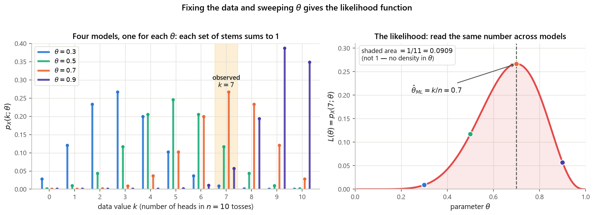
- It does not integrate to 1 in $\theta$. For Figure 2.1,
$\int_0^1 \binom{10}{7}\theta^{7}(1-\theta)^{3}\,d\theta = 120\cdot\frac{7!\,3!}{11!}
= 120\times 0.000758 = 0.090909 = 1/11$. What does sum to $1$ is the sum over the
data at any fixed $\theta$: $\sum_{k=0}^{10}\binom{10}{k}\theta^k(1-\theta)^{10-k}=1$
at $\theta=0.3$ and at $\theta=0.7$ alike (numerically $1.000000$ in both cases) (verified numerically in
computes/g7_s2.py, keysbern_binom_area,bern_datasum_0.3,bern_datasum_0.7). - In the continuous case it is a density in $x$, never in $\theta$. Consequently $L(\theta)$ can exceed $1$ — for the uniform model of §2.4 with $\theta=0.5$ and one observation, $L=1/\theta=2$. A "probability" of $2$ would be nonsense; a density value of $2$ is routine.
- It is not invariant to reparametrization the way a density is. If you re-express the model in terms of $\psi=h(\theta)$, a density would pick up a Jacobian factor $|d\theta/d\psi|$. The likelihood does not: $L$ is just a relabeled list of numbers, so $\hat\psi_{\text{ML}}=h(\hat\theta_{\text{ML}})$ exactly. That is the invariance principle of §2.7 — and it is a property a genuine density would not have.
ML versus MAP: the same maximization, minus the prior
L23 slide 3 and L24 slide 2 place the two rules side by side: $$\hat\theta_{\text{ML}}=\arg\max_\theta\ p_X(x;\theta), \qquad \hat\theta_{\text{MAP}}=\arg\max_\theta\ p_{\Theta\mid X}(\theta\mid x) =\arg\max_\theta\ \frac{p_{X\mid\Theta}(x\mid\theta)\,p_\Theta(\theta)}{p_X(x)} .$$ (The lecture slide prints the denominator as $p_Y(y)$; by context the intended normalizer is $p_X(x)$ — a slide typo, flagged in the L24 transcript.) The denominator $p_X(x)$ does not involve $\theta$, so it can be dropped from the maximization, leaving $$\hat\theta_{\text{MAP}}=\arg\max_\theta\ p_{X\mid\Theta}(x\mid\theta)\,p_\Theta(\theta).$$ Now suppose the prior is flat: $p_\Theta(\theta)=c$ for every candidate $\theta$ (or $f_\Theta(\theta)=c$ over a bounded range). Then the factor $c$ is a positive constant, and multiplying an objective by a positive constant does not move its maximizer, so $$\hat\theta_{\text{MAP}} = \arg\max_\theta\ c\cdot p_{X\mid\Theta}(x\mid\theta) = \arg\max_\theta\ p_{X\mid\Theta}(x\mid\theta) = \hat\theta_{\text{ML}},$$ where the last equality is the observation that the conditional PMF $p_{X\mid\Theta}(x\mid\theta)$ and the classical model $p_X(x;\theta)$ are the same list of numbers, written with different punctuation. This is B&T §9.1 p. 463: ML estimation is MAP estimation with a flat prior.
- Write the model. Identify the parameter $\theta$ (or vector $(\theta_1,\dots,\theta_m)$), its allowed range, and the PMF/PDF of a single observation, $p_{X_i}(x_i;\theta)$.
- Write the likelihood. Multiply over the independent observations: $L(\theta)=\prod_{i=1}^n p_{X_i}(x_i;\theta)$. Keep track of any indicator factors that restrict the range of the data — they are what breaks calculus in §2.4.
- Take logs. $\ell(\theta)=\sum_{i=1}^n \log p_{X_i}(x_i;\theta)$. Drop additive constants that do not contain $\theta$; they cannot affect the argmax.
- Maximize. If $\ell$ is differentiable and the maximum is interior, solve $d\ell/d\theta=0$ (one equation per unknown parameter). If the range of the data depends on $\theta$, do not differentiate: argue directly about where $L$ is largest.
- Check that it is a maximum. Either sign-check $\ell'$ on both sides of the stationary point, or verify $\ell''<0$ there, or note that $\ell$ is concave. A stationary point can be a minimum or a saddle.
- Promote the estimate to an estimator. Replace $x_i$ by $X_i$ to get $\hat\Theta_n$, then ask the §1 questions: is it unbiased? consistent? what is its mean squared error? what confidence interval goes with it?
![Flowchart: from 'unknown quantity plus data' to a diamond asking whether you will put a probability distribution on the unknown; yes leads to the Bayesian box (MAP, LMS), no leads to the classical box; both feed into the maximum likelihood box; then take logs; then a diamond asking whether the range of the data depends on theta; no leads to 'set the derivative to zero and check it is a maximum', yes leads to 'calculus fails, argue directly'; both end at 'report the estimator, then ask about bias, consistency, confidence interval'.](img/g7_s2_flow.png)
Solution
The model is $p_X(k;\theta)=e^{-\theta}\theta^k/k!$, so with the data frozen at $k=3$ the likelihood is $L(\theta)=e^{-\theta}\theta^3/6$. Then $L(1)=e^{-1}/6=0.367879/6=0.061313$, $L(3)=e^{-3}\cdot27/6=0.049787\times4.500000=0.224042$, and $L(5)=e^{-5}\cdot125/6=0.006738\times20.833333=0.140374$.
Each number is a probability of the data: $L(1)$ is the probability that a Poisson(1) source emits exactly $3$ counts, $L(3)$ the probability that a Poisson(3) source does, and $L(5)$ the probability that a Poisson(5) source does. Three different models, three different probabilities, all attached to the same observed outcome.
It is not the probability that $\theta=3$, first and foremost because $\theta$ is not a random variable in the classical framework — it has no probability, so the sentence has no referent. This particular model is a nice trap, because the Poisson likelihood does happen to integrate to $1$ over $\theta$: $\int_0^\infty e^{-\theta}\theta^{k}/k!\,d\theta=\Gamma(k+1)/k!=k!/k!=1$ for every $k$ (numerically $1.000000$ at $k=3$). That is a coincidence of this one parametrization, not a licence to read $L$ as a density. The test that never lies is the reparametrization test of the Gotcha above: re-express the model in terms of $\psi=\sqrt{\theta}$, so $L^{*}(\psi)=e^{-\psi^{2}}\psi^{6}/6$, and now $\int_0^\infty L^{*}(\psi)\,d\psi=\Gamma(7/2)/12=0.276946\ne1$. A genuine density would have picked up the Jacobian $|d\theta/d\psi|=2\psi$ and stayed normalized; the likelihood does not, because it was never a density in the parameter.
Solution
(i) A Bayesian can report $\mathbf{P}(\Theta\in[a,b]\mid X=x)$ — an honest probability about the unknown. The classical statistician's confidence interval (§1) is a probability statement about the interval, not about $\theta$. (ii) A Bayesian can report the posterior mean $\mathbb{E}[\Theta\mid X=x]$, the LMS estimate of G6 §4, which minimizes mean squared error over all estimators; no such optimality statement exists classically because there is no distribution over $\theta$ to average against.
They differ whenever the Bayesian summarizes the posterior by something other than its mode. B&T Example 9.2 is the canonical case: with a flat prior and $k$ heads in $n$ tosses, the MAP estimate (and hence the ML estimate) is $k/n$, but the posterior mean is $(k+1)/(n+2)$. For $n=10$, $k=7$ these are $0.7$ versus $8/12=0.6667$. They agree only asymptotically.
2.2 The smooth case: differentiate the log-likelihood
Bernoulli / binomial (B&T Example 9.2; L23 slide 2's coin)
Model: $X_1,\dots,X_n$ i.i.d. Bernoulli($\theta$), $\theta\in[0,1]$ the unknown probability of a head, $x_i\in\{0,1\}$ the observed outcomes, and $k=\sum_{i=1}^n x_i$ the number of heads.
Step 1–2, the likelihood. A single observation has $p_{X_i}(x_i;\theta)=\theta^{x_i}(1-\theta)^{1-x_i}$ — check: at $x_i=1$ this is $\theta$, at $x_i=0$ it is $1-\theta$. By independence, $$L(\theta)=\prod_{i=1}^n \theta^{x_i}(1-\theta)^{1-x_i} =\theta^{\sum_i x_i}(1-\theta)^{n-\sum_i x_i}=\theta^{k}(1-\theta)^{n-k},$$ collecting exponents. Step 3, logs: $$\ell(\theta)=k\log\theta+(n-k)\log(1-\theta).$$ Step 4, differentiate: using $\frac{d}{d\theta}\log\theta=1/\theta$ and, by the chain rule, $\frac{d}{d\theta}\log(1-\theta)=-1/(1-\theta)$, $$\ell'(\theta)=\frac{k}{\theta}-\frac{n-k}{1-\theta} \;=\;0 \;\Longrightarrow\; k(1-\theta)=(n-k)\theta \;\Longrightarrow\; k-k\theta=n\theta-k\theta \;\Longrightarrow\; k=n\theta,$$ where the first implication multiplies through by $\theta(1-\theta)>0$ (legal for $0<\theta<1$) and the $k\theta$ terms cancel. Hence $$\hat\theta_{\text{ML}}=\frac{k}{n},\qquad \hat\Theta_n=\frac{X_1+\cdots+X_n}{n}.$$ Step 5, check: $\ell''(\theta)=-k/\theta^2-(n-k)/(1-\theta)^2<0$ for $0<\theta<1$ whenever $0<k<n$, so $\ell$ is strictly concave and the stationary point is the global maximum. (If $k=0$ the likelihood $(1-\theta)^n$ is decreasing and the maximum is at the boundary $\hat\theta=0$; if $k=n$ it is at $\hat\theta=1$ — the boundary cases the derivative argument misses.)
Numbers. With $n=10$, $k=7$: $\hat\theta_{\text{ML}}=7/10=0.7$. The sequence likelihood $\theta^7(1-\theta)^3$ takes the values $0.00007501$ at $\theta=0.3$, $0.00097656$ at $0.5$, $0.00179159$ at $0.6$, $\mathbf{0.00222357}$ at $0.7$, $0.00167772$ at $0.8$ and $0.00047830$ at $0.9$ — a genuine interior peak at $0.7$. So this coin's data are about $29.6$ times more probable under $\theta=0.7$ than under $\theta=0.3$ ($0.00222357/0.00007501$). Note that the ML estimator is exactly the sample mean of §1, so everything §1 proved applies: it is unbiased, $\mathbb{E}[\hat\Theta_n]=\theta$, and consistent by the weak law (B&T Example 9.2). For the polling data of rec23 P3, $n=1200$ with $684$ supporters gives $\hat\theta_{\text{ML}}=684/1200=0.57$; §1 builds the confidence interval around it.
Exponential (L23 slide 3; B&T Example 9.3)
L23 slide 3 states this example and skips three steps; here they are. Model: $X_1,\dots,X_n$ i.i.d. exponential with rate $\theta>0$, so $f_{X_i}(x_i;\theta)=\theta e^{-\theta x_i}$ for $x_i\ge0$. The interpretation of B&T Example 9.3 is that $X_i$ are interarrival times and $\theta$ is the arrival rate.
$$L(\theta)=\prod_{i=1}^n \theta e^{-\theta x_i} =\theta^{n}\exp\Big(-\theta\sum_{i=1}^n x_i\Big)=\theta^n e^{-\theta y_n},\qquad y_n=\sum_{i=1}^n x_i,$$ using $\prod e^{a_i}=e^{\sum a_i}$. Taking logs, and using $\log(ab)=\log a+\log b$ and $\log e^{u}=u$: $$\ell(\theta)=n\log\theta-\theta y_n .$$ Differentiating, $\ell'(\theta)=n/\theta-y_n$. Setting this to zero gives $n/\theta=y_n$, i.e. $$\hat\theta_{\text{ML}}=\frac{n}{y_n}=\frac{n}{x_1+\cdots+x_n},\qquad \hat\Theta_n=\frac{n}{X_1+\cdots+X_n}.$$ The second derivative is $\ell''(\theta)=-n/\theta^2<0$ for all $\theta>0$, so $\ell$ is strictly concave and this is the global maximum — the check L23 slide 3 omits.
On the five interarrival times $0.42,\ 1.31,\ 0.08,\ 2.05,\ 0.64$: $y_5=4.5$, the sample mean is $0.9$, and $\hat\theta_{\text{ML}}=5/4.5=1.111111$. Panel (c) of Figure 2.3 shows the log-likelihood peaking there.
L23 slide 4 uses this same estimator to illustrate that ML need not be unbiased: with $n=1$, $\hat\Theta_1=1/X_1$ and $\mathbb{E}[1/X_1]=\int_0^\infty \frac{1}{x}\theta e^{-\theta x}dx=\infty$, because near $x=0$ the integrand behaves like $\theta/x$, whose integral diverges logarithmically. So $\mathbb{E}[\hat\Theta_1]\ne\theta$ — spectacularly. It is consistent: by the weak law $(X_1+\cdots+X_n)/n\to\mathbb{E}[X]=1/\theta$ in probability, and since $g(t)=1/t$ is continuous at $t=1/\theta\ne0$, convergence in probability is preserved under $g$, giving $\hat\Theta_n=g\big((X_1+\cdots+X_n)/n\big)\to g(1/\theta)=\theta$.
Solution
$p_{X_i}(x_i;\lambda)=e^{-\lambda}\lambda^{x_i}/x_i!$ for $x_i=0,1,2,\dots$ Hence $$L(\lambda)=\prod_{i=1}^n \frac{e^{-\lambda}\lambda^{x_i}}{x_i!} =e^{-n\lambda}\,\lambda^{\sum_i x_i}\Big/\prod_i x_i! ,$$ and, taking logs and discarding the constant $-\log\prod_i x_i!$ (no $\lambda$ in it), $$\ell(\lambda)=-n\lambda+\Big(\sum_{i=1}^n x_i\Big)\log\lambda .$$ Differentiating: $\ell'(\lambda)=-n+\frac{1}{\lambda}\sum_i x_i$, which is zero when $\lambda=\frac1n\sum_i x_i$. Since $\ell''(\lambda)=-\frac{1}{\lambda^2}\sum_i x_i<0$ (assuming at least one nonzero count), this is the global maximum. So $\hat\lambda_{\text{ML}}=\frac1n\sum_i x_i$ — the sample mean again.
Numerically: $\sum_i x_i=3+1+4+0+2+5+2+3=20$ with $n=8$, so $\hat\lambda=20/8=2.5$.
Unbiased: $\mathbb{E}[\hat\Lambda_n]=\frac1n\sum_i\mathbb{E}[X_i]=\frac1n\cdot n\lambda=\lambda$ for every $\lambda$. Consistent: by the weak law the sample mean converges in probability to $\mathbb{E}[X]=\lambda$.
Bonus (invariance, §2.7). The ML estimate of $\mathbf{P}(X=0)=e^{-\lambda}$ is $e^{-\hat\lambda}=e^{-2.5}=0.082085$, not the empirical fraction of zeros, which is $1/8=0.1250$. Both are reasonable estimators; only the first is the ML one.
2.3 Normal: mean and variance together (rec23 P2)
Solution
Step 1, the model. The parameter is now a two-dimensional vector $\theta=(\mu,v)$ with $\mu\in\mathbb{R}$ and $v>0$; here $\mu$ is the unknown mean and $v$ the unknown variance (not the standard deviation — this matters when we differentiate). A single observation has density $$f_{X_i}(x_i;\mu,v)=\frac{1}{\sqrt{2\pi v}}\exp\Big\{-\frac{(x_i-\mu)^2}{2v}\Big\}.$$
Step 2, the likelihood. By independence, $$f_X(x;\mu,v)=\prod_{i=1}^{n}\frac{1}{\sqrt{2\pi v}}\exp\Big\{-\frac{(x_i-\mu)^2}{2v}\Big\} =\frac{1}{(2\pi v)^{n/2}}\exp\Big\{-\frac{1}{2v}\sum_{i=1}^n (x_i-\mu)^2\Big\},$$ where the $n$ copies of $(2\pi v)^{-1/2}$ multiply to $(2\pi v)^{-n/2}$ and the exponents add.
Step 3, logs. Using $\log(abc)=\log a+\log b+\log c$ and $\log e^{u}=u$: $$\ell(\mu,v)=-\frac{n}{2}\log(2\pi)-\frac{n}{2}\log v-\frac{1}{2v}\sum_{i=1}^{n}(x_i-\mu)^2 .$$ The first term is a constant and can be ignored for maximization, but we keep it so the numerical values below are the true log-likelihood.
Step 4a, differentiate in $\mu$. Only the last term contains $\mu$. By the chain rule, $\frac{\partial}{\partial\mu}(x_i-\mu)^2=-2(x_i-\mu)$, so $$\frac{\partial\ell}{\partial\mu}=-\frac{1}{2v}\sum_{i=1}^{n}\big(-2(x_i-\mu)\big) =\frac{1}{v}\sum_{i=1}^{n}(x_i-\mu).$$ Setting this to zero and multiplying by $v>0$: $\sum_i (x_i-\mu)=0$, i.e. $\sum_i x_i - n\mu=0$, so $$\hat\mu=\frac{1}{n}\sum_{i=1}^{n}x_i=m_n,$$ the sample mean. This is the fact L23 slide 5 asserts without proof ("Sample mean often turns out to also be the ML estimate. E.g., if $X_i\sim N(\theta,\sigma^2)$") — that unsolved example is now solved.
Step 4b, differentiate in $v$. Now use $\frac{\partial}{\partial v}\log v=1/v$ and $\frac{\partial}{\partial v}\big(\tfrac{1}{2v}S\big)=-\tfrac{S}{2v^2}$ where $S=\sum_i(x_i-\mu)^2$ does not involve $v$: $$\frac{\partial\ell}{\partial v}=-\frac{n}{2v}+\frac{1}{2v^2}\sum_{i=1}^{n}(x_i-\mu)^2 .$$ Set to zero, multiply through by $2v^2>0$: $$-nv+\sum_{i=1}^{n}(x_i-\mu)^2=0 \qquad\Longrightarrow\qquad \hat v=\frac{1}{n}\sum_{i=1}^{n}(x_i-\hat\mu)^2=\frac{1}{n}\sum_{i=1}^{n}(x_i-m_n)^2 ,$$ substituting the already-found $\hat\mu=m_n$ (legitimate because the $\mu$-equation did not involve $v$, so the pair solves both equations simultaneously). Writing these as estimators, in §1's symbols, $$M_n=\frac{X_1+\cdots+X_n}{n},\qquad \bar S_n^{2}=\frac{1}{n}\sum_{i=1}^{n}(X_i-M_n)^2 .$$ Note the bar: §1.6 reserved $\bar S_n^2$ for the divisor-$n$ version and $\hat S_n^2$ for the divisor-$(n-1)$ sample variance, exactly as L23 slide 7 does, and this section keeps that convention. Maximum likelihood delivers the barred one.
Step 5, check it is a maximum. B&T's footnote on p. 464 gives the clean route. For every $i$ write $x_i-\mu=(x_i-m_n)+(m_n-\mu)$ and square: $$(x_i-\mu)^2=(x_i-m_n)^2+2(x_i-m_n)(m_n-\mu)+(m_n-\mu)^2 .$$ Sum over $i$. The cross term vanishes because $\sum_i (x_i-m_n)=\sum_i x_i-n m_n=0$ by the definition of $m_n$, so $$\sum_{i=1}^{n}(x_i-\mu)^2=n s_n^2+n(m_n-\mu)^2,\qquad s_n^2=\frac1n\sum_{i=1}^n (x_i-m_n)^2 .$$ Substituting into the likelihood gives B&T's factored form $$f_X(x;\mu,v)=\frac{1}{(2\pi v)^{n/2}}\exp\Big\{-\frac{n s_n^2}{2v}\Big\} \exp\Big\{-\frac{n(m_n-\mu)^2}{2v}\Big\}.$$ Read it off: for any fixed $v>0$ the only $\mu$-dependent factor is $\exp\{-n(m_n-\mu)^2/2v\}\le1$, with equality exactly at $\mu=m_n$ — so $\hat\mu=m_n$ is the global maximizer in $\mu$, no second-derivative test needed. Plugging $\mu=m_n$ back leaves $g(v)=(2\pi v)^{-n/2}e^{-ns_n^2/2v}$, whose log is $-\frac n2\log(2\pi)-\frac n2\log v-\frac{n s_n^2}{2v}$ with derivative $-\frac{n}{2v}+\frac{n s_n^2}{2v^2}=\frac{n}{2v^2}(s_n^2-v)$: positive for $v<s_n^2$, negative for $v>s_n^2$. So $g$ increases then decreases, and $\hat v=s_n^2$ is the global maximum.
A worked numerical instance. Take the $n=10$ sample $4.62,\ 6.28,\ 3.31,\ 7.05,\ 5.44,\ 2.87,\ 5.91,\ 4.03,\ 6.77,\ 3.52$. The sum is $49.80$, so $$\hat\mu=m_{10}=\frac{49.80}{10}=4.9800 .$$ The deviations $x_i-m_{10}$ are $-0.36,\ 1.30,\ -1.67,\ 2.07,\ 0.46,\ -2.11,\ 0.93,\ -0.95,\ 1.79,\ -1.46$ (they sum to $0$, as they must), and $\sum_i (x_i-m_{10})^2=20.6602$. Hence $$\hat v=\frac{20.6602}{10}=2.0660\ \ (\text{standard deviation }1.4374), \qquad\text{versus}\qquad \hat s_{10}^{2}=\frac{20.6602}{9}=2.2956$$ for the $n-1$ version of §1. The log-likelihood is $-17.817506$ at $(\hat\mu,\hat v)=(4.980,2.066)$, $-17.844308$ at $(4.980,\ 2.2956)$ and $-18.703882$ at the (true, in this simulation) $(5,4)$ — confirming numerically that the ML pair really is the peak; an independent numerical optimizer returns $(4.980000,\ 2.066020)$. Panel (b) of Figure 2.3 draws the contours.
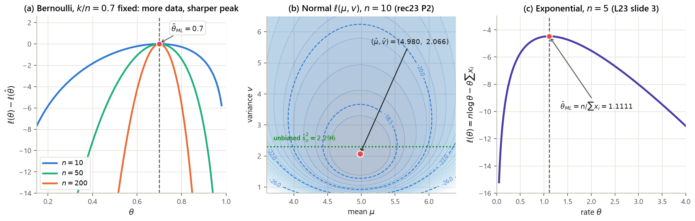
The ML variance estimator is biased — and by exactly how much
Compare the ML answer $\bar S_n^2=\frac1n\sum_i(X_i-M_n)^2$ with the sample variance $\hat S_n^{2}=\frac{1}{n-1}\sum_i(X_i-M_n)^2$ of §1.6–§1.7 that L23 slide 7 and rec23 P3 prefer. They differ only in the denominator, and the ML one is smaller. Here is the exact computation of its expectation, for any distribution with mean $\mu$ and variance $v$ (normality is not needed).
Start from the algebraic identity proved above, with the true mean $\mu$ in place of the generic $\mu$: $\sum_i (X_i-\mu)^2=n\bar S_n^2+n(M_n-\mu)^2$, hence $$\bar S_n^2=\frac1n\sum_{i=1}^n (X_i-\mu)^2-(M_n-\mu)^2 .$$ Take expectations term by term (linearity of expectation):
- $\mathbb{E}\big[(X_i-\mu)^2\big]=v$ for each $i$, by the definition of variance; so the first term contributes $\frac1n\cdot n\cdot v=v$.
- $\mathbb{E}\big[(M_n-\mu)^2\big]=\operatorname{var}(M_n)=v/n$, because $M_n$ has mean $\mu$ (so this is exactly its variance) and, by independence, $\operatorname{var}(M_n)=\frac{1}{n^2}\sum_i \operatorname{var}(X_i)=\frac{nv}{n^2}=v/n$.
Numerically, at $v=4$: $\mathbb{E}[\bar S_n^2]=2.0000$ at $n=2$ (bias $-2$), $3.2000$ at $n=5$ (bias $-0.8$), $3.6000$ at $n=10$ (bias $-0.4$), $3.9600$ at $n=100$ (bias $-0.04$) and $3.9960$ at $n=1000$ (bias $-0.004$). A $400{,}000$-replication Monte Carlo at $n=5$, $v=4$ returns an average $\bar S_5^2$ of $3.2015$ against the predicted $3.2000$. In the worked sample above, the ratio of the two estimates is exactly $\hat v/\hat s^2_{10}=2.0660/2.2956=0.9=(n-1)/n$.
Widget: the likelihood explorer
The one thing static figures cannot show is how the likelihood moves as data accumulate.
Below, pick a model, set the sample size, and redraw the sample; the widget plots $L$ and
$\ell$ over the parameter axis and marks $\hat\theta$. All the formulas it evaluates are the ones
derived above; the sample generator is reproduced exactly in computes/g7_s2.py
(section H) so the readouts can be checked against Python.
Solution
With $\mu=0$ fixed, the log-likelihood from Example 2.1 becomes $\ell(v)=-\frac n2\log(2\pi)-\frac n2\log v-\frac{1}{2v}\sum_i y_i^2$. Then $\ell'(v)=-\frac{n}{2v}+\frac{1}{2v^2}\sum_i y_i^2=\frac{1}{2v^2}\big(\sum_i y_i^2-nv\big)$, which is positive for $v<\frac1n\sum_i y_i^2$ and negative above it, so $$\hat v_{\text{ML}}=\frac1n\sum_{i=1}^n y_i^2 .$$ Numbers: $\sum_i y_i^2=1.44+0.16+4.41+2.89+0.81=9.7100$, $n=5$, so $\hat v=9.71/5=1.9420$.
This one is unbiased: $\mathbb{E}[\hat V_n]=\frac1n\sum_i\mathbb{E}[Y_i^2] =\frac1n\cdot n\cdot v=v$, since $\mathbb{E}[Y_i^2]=\operatorname{var}(Y_i)+(\mathbb{E}[Y_i])^2=v+0$. Contrast with Example 2.1: the bias there came entirely from having to estimate the center. Knowing $\mu=0$ costs nothing, so no $n\to n-1$ correction appears.
2.4 When calculus fails: the uniform $[0,\theta]$ model (rec23 P1)
Solution
The likelihood, written honestly. The uniform density on $[0,\theta]$ is $$f_X(x;\theta)=\begin{cases}1/\theta, & 0\le x\le\theta,\\[2pt] 0,&\text{otherwise.}\end{cases}$$ The crucial feature — the one that breaks the recipe's calculus branch — is that the second line depends on $\theta$: the support of the data moves with the parameter. With the data frozen at $x$, view this as a function of $\theta$: $$L(\theta)=\begin{cases}1/\theta, & \theta\ge x,\\[2pt] 0,&\theta<x.\end{cases}$$ The condition $0\le x\le\theta$ has been re-read as $\theta\ge x$; that is the whole trick.
Maximize by inspection. For $\theta<x$ the likelihood is $0$ — such a model could not have produced the observation at all. For $\theta\ge x$ it is $1/\theta$, which is strictly decreasing in $\theta$. So the largest value of $L$ over the feasible region is attained at the smallest feasible $\theta$, namely $\theta=x$, where $L=1/x$. Hence $$\hat\theta_{\text{ML}}=x .$$ Why not differentiate? Because $dL/d\theta=-1/\theta^2$ is never $0$ — there is no stationary point anywhere. The maximum is a corner: $L$ jumps from $0$ up to $1/x$ at $\theta=x$ and then slides down. Setting the derivative to zero would return nothing at all.
With $n$ observations. By independence, $$L(\theta)=\prod_{i=1}^{n} f_{X_i}(x_i;\theta) =\begin{cases}\theta^{-n}, & \theta\ge\max_i x_i,\\[2pt] 0,&\text{otherwise,}\end{cases}$$ because the product of the $n$ indicator conditions "$\theta\ge x_i$ for every $i$" is exactly the single condition "$\theta\ge\max_i x_i$", and the $n$ copies of $1/\theta$ multiply to $\theta^{-n}$. The same argument applies: $\theta^{-n}$ is strictly decreasing, so $$\hat\theta_{\text{ML}}=\max_{i}x_i,\qquad \hat\Theta_n=\max_i X_i .$$ Numerically, on the five lateness values $3.1,\ 7.4,\ 2.2,\ 6.9,\ 5.3$: $\hat\theta_{\text{ML}}=7.4$, at which $L=7.4^{-5}=4.507\times10^{-5}$. Compare $L(7.0)=0$ (infeasible — a model with $\theta=7$ could never have produced the observation $7.4$), $L(8.0)=8^{-5}=3.052\times10^{-5}$ and $L(10.0)=10^{-5}=1.000\times10^{-5}$: strictly downhill from $7.4$. And the derivative at the optimum is $dL/d\theta=-5(7.4)^{-6}=-3.045\times10^{-5}\ne0$.
Bayesian footnote. B&T Example 9.1 notes that the corresponding MAP estimate in Example 8.2 (a flat prior on $[0,1]$) is also $x$ — the ML/MAP correspondence of §2.1 in action, and the same model rec22 treated Bayesianly in G6 §3.
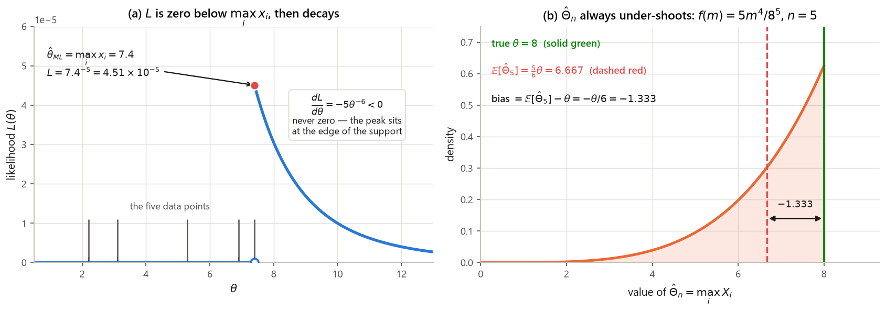
Is $\max_i X_i$ any good? Bias, variance and MSE
The estimator $\hat\Theta_n=\max_i X_i$ is never larger than $\theta$, so it must be biased downward. Here is the exact calculation. Let $M=\max_i X_i$. For $0\le m\le\theta$, $$F_M(m)=\mathbf{P}(M\le m)=\mathbf{P}(X_1\le m,\dots,X_n\le m) =\prod_{i=1}^{n}\mathbf{P}(X_i\le m)=\Big(\frac{m}{\theta}\Big)^{n},$$ using independence and the uniform CDF $\mathbf{P}(X_i\le m)=m/\theta$ on $[0,\theta]$. Differentiating gives the density $f_M(m)=n m^{n-1}/\theta^{n}$ (G3 §4). Then $$\mathbb{E}[M]=\int_0^{\theta} m\,\frac{n m^{n-1}}{\theta^{n}}\,dm =\frac{n}{\theta^{n}}\int_0^{\theta} m^{n}\,dm =\frac{n}{\theta^{n}}\cdot\frac{\theta^{n+1}}{n+1} =\frac{n}{n+1}\,\theta,$$ $$\mathbb{E}[M^{2}]=\frac{n}{\theta^{n}}\int_0^{\theta} m^{n+1}dm=\frac{n}{n+2}\theta^{2}, \qquad \operatorname{var}(M)=\frac{n}{n+2}\theta^2-\Big(\frac{n}{n+1}\Big)^2\theta^2 =\frac{n\,\theta^{2}}{(n+1)^{2}(n+2)} ,$$ where the last simplification puts the two fractions over the common denominator $(n+1)^2(n+2)$ and uses $n(n+1)^2-n^2(n+2)=n(n^2+2n+1)-n^2(n+2)=n$. The bias is $\mathbb{E}[M]-\theta=-\theta/(n+1)$, and by the §1 decomposition $$\mathrm{MSE}=\operatorname{var}+(\text{bias})^2 =\frac{n\theta^2}{(n+1)^2(n+2)}+\frac{\theta^2}{(n+1)^2} =\frac{\theta^2\big(n+(n+2)\big)}{(n+1)^2(n+2)} =\frac{2\theta^{2}}{(n+1)(n+2)},$$ the last step using $n+n+2=2(n+1)$ and cancelling one factor of $n+1$.
Numbers (all in computes/g7_s2.py, key unif_moment_table):
$\mathbb{E}[M]/\theta=0.500000$ at $n=1$, $0.833333$ at $n=5$, $0.909091$ at $n=10$, $0.980392$ at
$n=50$, $0.990099$ at $n=100$; correspondingly $\mathrm{MSE}/\theta^2$ falls from $0.3333$ to
$1.941\times10^{-4}$. At $n=5$, $\theta=8$ the theory gives $\mathbb{E}[M]=8\cdot\frac56=6.6667$, and
a $400{,}000$-replication simulation returns $6.6670$.
An easy repair: since $\mathbb{E}[M]=\frac{n}{n+1}\theta$, the rescaled estimator $\tilde\Theta_n=\frac{n+1}{n}\max_i X_i$ satisfies $\mathbb{E}[\tilde\Theta_n]=\frac{n+1}{n}\cdot\frac{n}{n+1}\theta=\theta$ exactly — unbiased for every $n$ (this is what B&T Problem 9.8 asks for). On the rec23 data with $n=5$, the factor is $6/5=1.2$ and the corrected estimate is $1.2\times7.4=8.880$. Note it is not the ML estimate, and it can exceed every observation — which is exactly the point, since $\theta$ must.
Solution
Each density is $f_{X_i}(x_i;\theta)=1$ for $\theta\le x_i\le\theta+1$ and $0$ otherwise. So $$L(\theta)=\begin{cases}1,&\theta\le x_i\le\theta+1\text{ for every }i,\\ 0,&\text{otherwise.}\end{cases}$$ The joint condition says $\theta\le\min_i x_i$ and $\theta+1\ge\max_i x_i$, i.e. $$\max_i x_i-1\;\le\;\theta\;\le\;\min_i x_i .$$ On that whole interval $L=1$; outside it $L=0$. So every $\theta$ in the interval is a maximum likelihood estimate — the ML estimate is not unique.
Numbers: $\max_i x_i=5.10$ and $\min_i x_i=4.30$, so any $\theta\in[5.10-1,\ 4.30]=[4.10,\ 4.30]$ works; the set has width $0.20$. Common conventions pick the midpoint $4.20$ or one of the endpoints. What is unusual is precisely the non-uniqueness: the ML recipe returns a set, and any tie-break is a choice made outside the ML principle. (As $n$ grows the interval shrinks to a point, so the ambiguity is asymptotically harmless and the estimator is consistent.)
Solution
ML: $\mathrm{MSE}(M)=\frac{2\theta^2}{(n+1)(n+2)}=\frac{2\theta^2}{6\times7} =\frac{\theta^2}{21}=0.047619\,\theta^2$.
Corrected: it is unbiased, so its MSE equals its variance, $\operatorname{var}\big(\tfrac65 M\big)=\big(\tfrac65\big)^2\operatorname{var}(M) =\frac{36}{25}\cdot\frac{5\theta^2}{6^2\cdot7}=\frac{36}{25}\cdot\frac{5\theta^2}{252} =\frac{180}{6300}\theta^2=\frac{\theta^2}{35}=0.028571\,\theta^2$.
Here the correction wins on both counts — it removes the bias and lowers the MSE by $40\%$ ($0.028571/0.047619=0.6$). So for this model the bias-corrected estimator dominates, and one would prefer it. (That is a fact about this model, not a general rule: §2.3's Gotcha remains — a bias correction can raise the MSE in other problems.)
2.5 rec24 Problem 1: the blackbody photon counter, end to end
Solution
(a) The partition function. A PMF must sum to $1$ over its range: $$1=\sum_{k=0}^{\infty}p_K(k;\theta)=\sum_{k=0}^{\infty}\frac{e^{-k/\theta}}{Z(\theta)} =\frac{1}{Z(\theta)}\sum_{k=0}^{\infty}\big(e^{-1/\theta}\big)^{k},$$ where the last step rewrites $e^{-k/\theta}=(e^{-1/\theta})^k$ by the law of exponents, exposing a geometric series with ratio $r=e^{-1/\theta}$. For any $\theta>0$ we have $1/\theta>0$, hence $0<r<1$ and the series converges (the recitation solution uses this silently); the geometric sum formula of G2 §1 gives $\sum_{k\ge0}r^k=1/(1-r)$. Therefore $$1=\frac{1}{Z(\theta)}\cdot\frac{1}{1-e^{-1/\theta}} \qquad\Longrightarrow\qquad \boxed{\;Z(\theta)=\frac{1}{1-e^{-1/\theta}}\;}$$ Sanity check at $\theta=1$: $Z=1/(1-e^{-1})=1/(1-0.367879)=1.5820$; at $\theta=5$, $Z=5.5167$; at $\theta=100$, $Z=100.5008$. For large $\theta$, $Z(\theta)\approx\theta$ — as it must, since a hot body spreads its counts over about $\theta$ values.
(b) Mean and variance — by recognizing a shifted geometric. Substitute $Z(\theta)$ back: $$p_K(k;\theta)=\big(1-e^{-1/\theta}\big)\,\big(e^{-1/\theta}\big)^{k},\qquad k=0,1,2,\dots$$ Set $p=1-e^{-1/\theta}$, so that $e^{-1/\theta}=1-p$ and $$p_K(k;\theta)=(1-p)^{k}\,p,\qquad k=0,1,2,\dots$$ This is the geometric PMF of G2 §1, shifted one unit left: the usual geometric random variable $N$ (the trial number of the first success) has $p_N(j)=(1-p)^{j-1}p$ for $j=1,2,\dots$, so $K=N-1$ counts the failures before the first success. Here $p=1-e^{-1/\theta}$ plays the role of the success probability. At $\theta=100$, $p=0.009950$; at $\theta=5$, $p=0.181269$; at $\theta=1$, $p=0.632121$.
G2 §3 gives $\mathbb{E}[N]=1/p$ and $\operatorname{var}(N)=(1-p)/p^2$. Shifting by the constant $-1$ moves the mean by $-1$ and leaves the variance unchanged (variance is translation invariant): $$\mu_K=\mathbb{E}[N]-1=\frac1p-1,\qquad \sigma_K^2=\operatorname{var}(N)=\frac{1-p}{p^{2}} .$$ Now put $p=1-e^{-1/\theta}$ back. For the mean, put both terms over the common denominator $1-e^{-1/\theta}$: $$\mu_K=\frac{1}{1-e^{-1/\theta}}-1=\frac{1-(1-e^{-1/\theta})}{1-e^{-1/\theta}} =\frac{e^{-1/\theta}}{1-e^{-1/\theta}} .$$ Multiply numerator and denominator by $e^{1/\theta}$ (a positive number, so nothing changes), and use $e^{-1/\theta}e^{1/\theta}=1$: $$\mu_K=\frac{e^{-1/\theta}\cdot e^{1/\theta}}{\big(1-e^{-1/\theta}\big)e^{1/\theta}} =\frac{1}{e^{1/\theta}-1}.$$ For the variance, $1-p=e^{-1/\theta}$ and $p^2=(1-e^{-1/\theta})^2$, so $$\sigma_K^2=\frac{e^{-1/\theta}}{\big(1-e^{-1/\theta}\big)^{2}} .$$ The recitation asserts the identity $\sigma_K^2=\mu_K^2+\mu_K$; here is the algebra. Write $u=e^{-1/\theta}$ and $q=1-u$, so $\mu_K=u/q$ and $\sigma_K^2=u/q^2$. Then $$\mu_K^{2}+\mu_K=\frac{u^{2}}{q^{2}}+\frac{u}{q} =\frac{u^{2}}{q^{2}}+\frac{uq}{q^{2}} =\frac{u^{2}+uq}{q^{2}} =\frac{u\,(u+q)}{q^{2}} =\frac{u\cdot 1}{q^{2}} =\frac{u}{q^{2}}=\sigma_K^{2},$$ using $u+q=u+(1-u)=1$ in the second-to-last step. So $$\boxed{\;\mu_K=\frac{1}{e^{1/\theta}-1},\qquad \sigma_K^{2}=\mu_K^{2}+\mu_K\;}$$ Checks at $\theta=100$: $\mu_K=99.500833$, $\sigma_K^2=99.500833^2+99.500833=9999.9167$, matching $(1-p)/p^2=9999.9167$; $\sigma_K=99.9996$. Summing the PMF numerically over $k=0,\dots,399{,}999$ gives $1.000000$, mean $99.500833$ and variance $9999.9167$ — the formulas check out exactly.
Note $\sigma_K\approx\mu_K$ when $\mu_K$ is large: a hot blackbody's photon count fluctuates by about $100\%$ of its own mean. That is why part (d) needs ten thousand samples.
(c) The ML estimator. By independence across the $n$ intervals, $$p_K(k_1,\dots,k_n;\theta)=\prod_{i=1}^{n}\frac{e^{-k_i/\theta}}{Z(\theta)} =\frac{1}{Z(\theta)^{n}}\exp\Big(-\frac{1}{\theta}\sum_{i=1}^{n}k_i\Big),$$ again adding exponents. Taking logs, with $\log Z(\theta)^{-n}=-n\log Z(\theta)$: $$\ell(\theta)=-n\log Z(\theta)-\frac{1}{\theta}\sum_{i=1}^{n}k_i = n\log\big(1-e^{-1/\theta}\big)-\frac{1}{\theta}\sum_{i=1}^{n}k_i ,$$ where the second form substitutes $Z(\theta)=1/(1-e^{-1/\theta})$, so $-\log Z(\theta)=\log(1-e^{-1/\theta})$.
Differentiate — the chain rule the solution sheet skips. First, $\frac{d}{d\theta}\big(-\tfrac1\theta\big)=\tfrac{1}{\theta^{2}}$, so the second term contributes $+\frac{1}{\theta^2}\sum_i k_i$. For the first term, put $g(\theta)=1-e^{-1/\theta}$. Then $$\frac{d}{d\theta}e^{-1/\theta}=e^{-1/\theta}\cdot\frac{d}{d\theta}\Big(-\frac1\theta\Big) =e^{-1/\theta}\cdot\frac{1}{\theta^{2}}, \qquad\text{so}\qquad g'(\theta)=-\frac{e^{-1/\theta}}{\theta^{2}},$$ and by the chain rule $\frac{d}{d\theta}\,n\log g(\theta)=n\,g'(\theta)/g(\theta)$, i.e. $$\frac{d}{d\theta}\,n\log\big(1-e^{-1/\theta}\big) =-\,n\,\frac{e^{-1/\theta}}{\theta^{2}\big(1-e^{-1/\theta}\big)} .$$ Adding the two pieces and setting $\ell'(\theta)=0$: $$-\,n\,\frac{e^{-1/\theta}}{\theta^{2}\big(1-e^{-1/\theta}\big)}+\frac{1}{\theta^{2}}\sum_{i=1}^{n}k_i=0 .$$ Multiply through by $\theta^{2}/n$ (positive, so the equation is unchanged): $$\frac{e^{-1/\theta}}{1-e^{-1/\theta}}=\frac{1}{n}\sum_{i=1}^{n}k_i \;=\; s_n ,$$ the sample mean of the counts. But the left-hand side is exactly $\mu_K$, which part (b) simplified to $1/(e^{1/\theta}-1)$. So the ML equation is $$\frac{1}{e^{1/\theta}-1}=s_n \qquad\Longleftrightarrow\qquad \mu_K(\theta)=s_n .$$ The ML estimator sets the model mean equal to the sample mean.
Second-order check (missing from the solution sheet). $\mu_K(\theta)=1/(e^{1/\theta}-1)$ is strictly increasing in $\theta$ (as $\theta$ grows, $1/\theta$ shrinks, $e^{1/\theta}$ shrinks toward $1$, and the reciprocal blows up), running from $0$ at $\theta\to0^+$ to $\infty$ as $\theta\to\infty$. Hence $\ell'(\theta)=\frac{n}{\theta^2}\big(s_n-\mu_K(\theta)\big)$ is positive while $\mu_K(\theta)<s_n$ and negative once $\mu_K(\theta)>s_n$: $\ell$ rises then falls, so the unique stationary point is the global maximum.
Solve. Inverting $1/(e^{1/\theta}-1)=s_n$ exactly: $e^{1/\theta}-1=1/s_n$, so $e^{1/\theta}=1+1/s_n$, so $1/\theta=\log(1+1/s_n)$ and $$\hat\theta_{\text{exact}}=\frac{1}{\log\!\big(1+1/s_n\big)} .$$ For a hot body, $\theta\gg1$, the recitation's approximation $1/(e^{1/\theta}-1)\approx\theta$ applies — it is the first-order Taylor expansion $e^{u}\approx1+u$ at $u=1/\theta\approx0$, giving $e^{1/\theta}-1\approx1/\theta$ — and the ML equation collapses to $\theta\approx s_n$: $$\boxed{\;\hat\Theta_n=\frac{1}{n}\sum_{i=1}^{n}K_i\;}$$ the sample mean of the photon counts.
How good is the approximation? Expanding more carefully,
$\frac{1}{\log(1+1/s)}=s+\frac12+O(1/s)$, so the exact estimate exceeds the hot-body one by about
$1/2$, whatever $s_n$ is — the relative error therefore dies like $1/(2s_n)$. Tabulating exact
versus approximate (key photon_ml_table):
$s_n=0.5\Rightarrow0.910239$ vs $0.5$ ($-45.07\%$);
$s_n=2\Rightarrow2.466303$ vs $2$ ($-18.91\%$);
$s_n=10\Rightarrow10.492059$ vs $10$ ($-4.69\%$);
$s_n=99.5\Rightarrow99.999167$ vs $99.5$ ($-0.50\%$);
$s_n=250\Rightarrow250.499667$ vs $250$ ($-0.20\%$). The problem asks for two significant digits, and
the approximation delivers them once $s_n\gtrsim50$.
A concrete data set. Twelve one-second counts $53,132,8,214,61,97,19,156,44,88,3,121$ sum to $996$, so $s_{12}=996/12=83.000000$. The hot-body ML estimate is $\hat\theta=83.000000$ (in whatever temperature units $\theta$ carries); the exact ML estimate is $1/\log(1+1/83)=83.499002$. Direct numerical maximization of $\ell$ returns $83.499002$ — a check that the calculus above is right. The log-likelihood values are $\ell(60)=-65.831996$, $\ell(80)=-65.109241$, $\ell(83.499)=-65.098088$ (the peak), $\ell(120)=-65.799866$, $\ell(160)=-67.164566$. Panel (b) of Figure 2.5 draws this curve.
(d) How many samples? The estimator is $\hat K=\frac1n\sum_{i=1}^n K_i$. Its mean is $\mu_{\hat K}=\mathbb{E}[\hat K]=\frac1n\sum_i\mathbb{E}[K_i]=\mu_K$ (unbiased), and — by independence, exactly, with no appeal to the CLT — $$\operatorname{var}(\hat K)=\frac{1}{n^{2}}\sum_{i=1}^{n}\operatorname{var}(K_i) =\frac{n\sigma_K^{2}}{n^{2}}=\frac{\sigma_K^{2}}{n}, \qquad \sigma_{\hat K}=\frac{\sigma_K}{\sqrt n}.$$ Requiring the noise-to-signal ratio to equal $0.01$: $$\frac{\sigma_{\hat K}}{\mu_{\hat K}}=\frac{\sigma_K}{\sqrt n\,\mu_K}=0.01 \quad\Longrightarrow\quad \sqrt n=\frac{100\,\sigma_K}{\mu_K} =100\,\frac{\sqrt{\mu_K^{2}+\mu_K}}{\mu_K} =100\sqrt{\frac{\mu_K^{2}+\mu_K}{\mu_K^{2}}} =100\sqrt{1+\frac{1}{\mu_K}},$$ where $\sigma_K=\sqrt{\mu_K^2+\mu_K}$ comes from part (b) and the square root is pulled inside by dividing numerator and denominator under the radical by $\mu_K^2$. Squaring, $$n=10^{4}\Big(1+\frac{1}{\mu_K}\Big).$$ For a hot body $\mu_K\gg1$, the bracket $\to1$ and $n\to10^{4}=10{,}000$ — the recitation's answer, with the arithmetic shown. Exactly, at $\theta=100$ (so $\mu_K=99.500833$): $\sqrt n=100\sqrt{1+1/99.500833}=100.501252$, hence $n>10100.5017$, i.e. $n=10{,}101$ intervals — about $2.8$ hours of counting. The bracket matters only for cool bodies: $\mu_K=10$ needs $n=11{,}000$ and $\mu_K=1$ needs $n=20{,}000$.
Note on the problem statement. The solution sheet writes parts (d)–(e) in terms of the temperature estimator $\hat\Theta_n$ while the question poses them for the count estimator $\hat K$; in the hot-body limit of part (c) these are the same random variable, $\hat\Theta_n=\hat K$, which is why the two labels are used interchangeably. The question asks for equality (ratio $=0.01$) and the official solution works with the inequality ($<0.01$); both give $n\approx10^4$.
(e) The confidence interval. Part (d) fixed
$\sigma_{\hat K}=\sigma_K/\sqrt n=0.01\,\mu_K$. Because $\hat K$ is an average of $n\approx10^4$
i.i.d. terms, the central limit theorem (G6 §2) says
$(\hat K-\mu_K)/\sigma_{\hat K}$ is approximately standard normal, so for any $z>0$
$$\mathbf{P}\big(|\hat K-\mu_K|\le z\,\sigma_{\hat K}\big)\approx\Phi(z)-\Phi(-z)=2\Phi(z)-1 .$$
Setting $2\Phi(z)-1=0.95$ gives $\Phi(z)=0.975$, and the standard normal table (or
scipy.stats.norm.ppf(0.975)) gives $z=1.959964\approx1.96$ — that is where the famous
$1.96$ comes from, and checking backwards, $\Phi(1.96)=0.975002$ so
$2\Phi(1.96)-1=0.950004$. Rearranging the event $|\hat K-\mu_K|\le1.96\,\sigma_{\hat K}$ into an
interval for $\mu_K$ gives the $95\%$ confidence interval
$$\big[\hat K-1.96\,\sigma_{\hat K},\ \hat K+1.96\,\sigma_{\hat K}\big]
=\big[\hat K-1.96\times0.01\,\mu_K,\ \hat K+1.96\times0.01\,\mu_K\big]
=\big[\hat K-0.0196\,\mu_K,\ \hat K+0.0196\,\mu_K\big].$$
At $\theta=100$, $\mu_K=99.500833$, so the half-width is
$0.0196\times99.500833=1.950216$ counts: the mean photon count is pinned to about
$\pm2$ out of $\approx99.5$, i.e. $\pm1.96\%$. In practice $\mu_K$ on the right is replaced by the
estimate $\hat K$ itself (the §1 plug-in trick), giving the usable interval
$\hat K(1\pm0.0196)$.
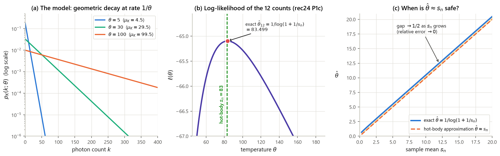
Solution
Exact: $\hat\theta=1/\log(1+1/3)=1/\log(1.333333)=1/0.287682=3.476059$. The hot-body approximation gives $3$. Relative error $(3-3.476059)/3.476059=-0.136954$, i.e. the approximation is $13.70\%$ too low — far outside the "two significant digits" the problem demands, so at $s_n=3$ you must use the exact formula.
Feeding back: $\mu_K(3.476059)=1/(e^{1/3.476059}-1)=1/(e^{0.287682}-1)=1/(1.333333-1)=3.000000$, which reproduces $s_n=3$ exactly — as it must, since the ML equation is $\mu_K(\hat\theta)=s_n$.
Solution
(i) $\dfrac{\sigma_K}{\mu_K}=\dfrac{\sqrt{\mu_K^2+\mu_K}}{\mu_K}=\sqrt{1+1/\mu_K}\to1$ as $\mu_K\to\infty$. The relative fluctuation of a single geometric count does not shrink as the body heats up: it stays at about $100\%$.
(ii) For Poisson, $\sigma/\lambda=\sqrt\lambda/\lambda=1/\sqrt\lambda\to0$: a bright Poisson source is self-averaging, a single observation already pins the mean to a relative accuracy of $1/\sqrt\lambda$.
(iii) The blackbody. Requiring $\sigma/(\sqrt n\,\mu)=0.01$ gives $n=10^4(1+1/\mu_K)\approx10^4$ for the geometric model, but $n=10^4/\lambda$ for the Poisson model — at $\lambda=100$ that is just $100$ intervals, a hundredfold saving. The heavy geometric tail is what costs you the extra data.
2.6 rec24 Problem 2: least squares is maximum likelihood
L24 slide 3 makes a claim that ties this section to the next one: the least-squares criterion that defines linear regression is not an arbitrary choice of penalty — it is the ML rule under the assumption of independent zero-mean normal noise. §3 develops regression proper; here we prove the ML connection and then carry out rec24 P2 numerically.
The reduction (L24 slide 3; B&T §9.2, pp. 478–479). Model the data as $$Y_i=\theta_0+\theta_1 x_i+W_i,\qquad i=1,\dots,n,$$ where the $x_i$ are known constants (not random), $\theta_0$ and $\theta_1$ are the unknown parameters, and the noises $W_i$ are i.i.d. $N(0,\sigma^2)$ with $\sigma^2$ known. Given $(\theta_0,\theta_1)$, the variable $Y_i$ is normal with mean $\theta_0+\theta_1x_i$ and variance $\sigma^2$, so $$f_Y(y;\theta_0,\theta_1)=\prod_{i=1}^{n}\frac{1}{\sqrt{2\pi\sigma^{2}}} \exp\Big\{-\frac{(y_i-\theta_0-\theta_1x_i)^{2}}{2\sigma^{2}}\Big\} = c\cdot\exp\Big\{-\frac{1}{2\sigma^{2}}\sum_{i=1}^{n}(y_i-\theta_0-\theta_1x_i)^{2}\Big\},$$ with $c=(2\pi\sigma^{2})^{-n/2}$ a constant that contains no $\theta$. This is exactly the likelihood printed on L24 slide 3. Taking logs, $$\ell(\theta_0,\theta_1)=\log c-\frac{1}{2\sigma^{2}}\sum_{i=1}^{n}(y_i-\theta_0-\theta_1x_i)^{2}.$$ The first term is constant and the coefficient $-1/(2\sigma^2)$ is a negative constant, so maximizing $\ell$ is the same as minimizing the sum $\sum_{i=1}^n (y_i-\theta_0-\theta_1x_i)^2$. That is the least-squares criterion $(*)$ of L24 slide 3 — "take logs, same as $(*)$", now with the two suppressed observations stated: the constant $c$ drops out, and $\log$ is increasing while $-1/(2\sigma^2)$ flips max into min.
The solution formulas. Setting the two partial derivatives of $Q(\theta_0,\theta_1)=\sum_i (y_i-\theta_0-\theta_1x_i)^2$ to zero gives (§3 derives them in full; they are quoted on L24 slide 4 and used by rec24 P2) $$\hat\theta_1=\frac{\sum_{i=1}^{n}(x_i-\overline x)(y_i-\overline y)}{\sum_{i=1}^{n}(x_i-\overline x)^{2}}, \qquad \hat\theta_0=\overline y-\hat\theta_1\overline x, \qquad \overline x=\frac1n\sum_i x_i,\quad \overline y=\frac1n\sum_i y_i .$$
Solution
(a) Linear model. The reduction above says: ML $=$ least squares, so use the formulas. First the means: $$\overline x=\frac{0.8+2.5+5.0+7.3+9.1}{5}=\frac{24.70}{5}=4.94,\qquad \overline y=\frac{-2.3+20.9+103.5+215.8+334.0}{5}=\frac{671.90}{5}=134.38 .$$ Deviations $x_i-\overline x$: $-4.14,\ -2.44,\ 0.06,\ 2.36,\ 4.16$. Deviations $y_i-\overline y$: $-136.68,\ -113.48,\ -30.88,\ 81.42,\ 199.62$. (Each list sums to $0$ — always check this.)
Products $(x_i-\overline x)(y_i-\overline y)$, term by term:
$$565.8552,\quad 276.8912,\quad -1.8528,\quad 192.1512,\quad 830.4192
\qquad\Longrightarrow\qquad \sum = 1863.4640 .$$
Squares $(x_i-\overline x)^2$:
$$17.1396,\quad 5.9536,\quad 0.0036,\quad 5.5696,\quad 17.3056
\qquad\Longrightarrow\qquad \sum = 45.9720 .$$
Therefore
$$\hat\theta_1=\frac{1863.4640}{45.9720}=40.534760\ \approx\ 40.53,$$
$$\hat\theta_0=134.38-40.534760\times4.94=134.38-200.241716=-65.861716\ \approx\ -65.86 .$$
These match the recitation's $\hat\theta_1=40.53$, $\hat\theta_0=-65.86$, and an independent
least-squares solver (numpy.polyfit) returns the same $40.534760$, $-65.861716$. The
fitted line is $y=40.53x-65.86$.
(b) Quadratic model. The model $Y_i=\beta_0+\beta_1x_i^{2}+V_i$ is still linear in the parameters; only the explanatory variable has changed. This is L24 slide 5's "choosing the right variables": set $u_i=h(x_i)=x_i^{2}$ and run the identical formulas on the pairs $(u_i,y_i)$. The transformed inputs are $$u: 0.64,\ 6.25,\ 25.00,\ 53.29,\ 82.81,\qquad \overline u=\frac{0.64+6.25+25.00+53.29+82.81}{5}=\frac{167.99}{5}=33.598 .$$ (The recitation prints $33.60$; it also reuses the symbol $\overline x$ for this mean of the squares, which is a notational slip flagged in the transcript.) The $y$-deviations are unchanged. Then $$\sum_{i}(u_i-\overline u)(y_i-\overline y)=19300.6788,\qquad \sum_{i}(u_i-\overline u)^{2}=4717.6643,$$ so $$\hat\beta_1=\frac{19300.6788}{4717.6643}=4.091151\ \approx\ 4.09,$$ $$\hat\beta_0=134.38-4.091151\times33.598=134.38-137.454505=-3.074505\ \approx\ -3.07 .$$ The fitted curve is $y=4.09x^{2}-3.07$, matching the recitation. (The solution sheet writes these as $\hat\theta_1,\hat\theta_0$ rather than $\hat\beta_1,\hat\beta_0$ — another notation slip; and its consistency check is run on already-rounded inputs, $134.38-4.09\times33.60=-3.044$, which is not the $-3.07$ it prints: that figure comes from the unrounded $\hat\beta_1=4.091151$ and $\overline u=33.598$, giving $-3.074505$, as above. The discrepancy is rounding in the check, not an error in the fit.)
Which model wins? Compute the residuals $y_i-\hat y_i$. Linear: $31.134,\ -14.575,\ -33.312,\ -14.242,\ 30.995$, with $\mathrm{SSE}_1=\sum_i r_i^2=3455.0015$. Quadratic: $-1.844,\ -1.595,\ 4.296,\ 0.857,\ -1.714$, with $\mathrm{SSE}_2=28.0690$ — smaller by a factor of $123.1$. Since the ML criterion is exactly "minimize the SSE", the quadratic model assigns the data a far higher likelihood. In the coefficient-of-determination language of L24 slide 6, with $\mathrm{SST}=\sum_i(y_i-\overline y)^2=78990.0680$, $$R^{2}_{\text{lin}}=1-\frac{3455.0015}{78990.0680}=0.956260,\qquad R^{2}_{\text{quad}}=1-\frac{28.0690}{78990.0680}=0.999645 .$$ And the ML estimate of the noise variance in each model — obtained by maximizing over $\sigma^2$ too, which by the same computation as Example 2.1 gives $\hat\sigma^2=\mathrm{SSE}/n$ — is $\hat\sigma_1^{2}=3455.0015/5=691.0003$ against $\hat\sigma_2^{2}=28.0690/5=5.6138$.
Caveat. Both models have two parameters, so this comparison is fair; adding parameters always lowers the SSE and the comparison would not be fair otherwise. The recitation notes that the regression material is outside the scope of the final exam; the ML reduction is not.
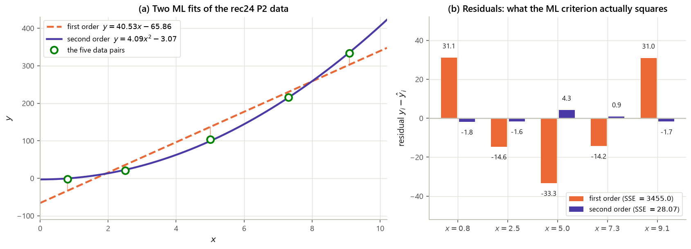
Solution
The reduction of §2.6 applies verbatim with one parameter, so ML means minimizing $Q(\theta)=\sum_i (y_i-\theta x_i)^2$. Differentiating, $Q'(\theta)=\sum_i 2(y_i-\theta x_i)(-x_i)=-2\sum_i x_iy_i+2\theta\sum_i x_i^2$, which is zero at $$\hat\theta=\frac{\sum_i x_iy_i}{\sum_i x_i^{2}} ,$$ and $Q''(\theta)=2\sum_i x_i^2>0$, so this is the minimum of $Q$ hence the maximum of $\ell$.
Numbers: $\sum_i x_iy_i=5182.6500$ and $\sum_i x_i^{2}=167.9900$, giving $\hat\theta=5182.65/167.99=30.850944$. The SSE is $9390.3476$, versus $3455.0015$ for the fit with an intercept. Forcing the line through the origin costs a lot here, because the data curve upward and the free intercept $-65.86$ was doing real work compensating for that curvature.
2.7 Why maximum likelihood is worth trusting
The recipe is easy to justify intuitively, but three theoretical properties are what make it the default method in practice. B&T states all three in the summary box on p. 466; none is proved in 6.041, so they are stated with their conditions and illustrated.
Why it is true. The likelihood is a function on the parameter set; renaming the points of that set by $\psi=h(\theta)$ relabels the graph without changing any of its values, so the location of the peak is transported by $h$ and nothing else happens. This is where the §2.1 Gotcha pays off: a genuine density would acquire a Jacobian factor under relabeling and its peak would move. Example: with Poisson data, Practice 2.3's ML estimate of $\lambda$ is $2.5$, so the ML estimate of $\mathbf{P}(X=0)=e^{-\lambda}$ is $e^{-2.5}=0.082085$; and for the blackbody, the ML estimate of $\mu_K$ is $\mu_K(\hat\theta)$, which by the ML equation of §2.5 is exactly $s_n$. Contrast with unbiasedness, which is not invariant: the §2.3 Gotcha noted that an unbiased variance estimator gives a biased standard-deviation estimator.
Every example in this section obeys it, and in each one you can see the mechanism: the ML equation typically matches a sample average to a model quantity (Bernoulli: $\hat\theta=k/n$; normal: $\hat\mu=m_n$; blackbody: $\mu_K(\hat\theta)=s_n$), and the weak law makes the sample average converge; continuity of the matching then transfers convergence to $\hat\Theta_n$, as in the exponential argument of §2.2. Figure 2.3(a) shows the geometry: the log-likelihood peak sharpens as $n$ grows, so the data pin down $\theta$ ever more tightly.
This is what licenses the §1 machinery for ML estimators in general: if you can also estimate $\sigma(\hat\Theta_n)$, then $\hat\Theta_n\pm z\,\hat\sigma(\hat\Theta_n)$ with $\Phi(z)=1-\alpha/2$ is an approximate $1-\alpha$ confidence interval — exactly the construction rec24 P1(e) carried out.
Solution
From §2.2, $\hat\theta_{\text{ML}}=n/\sum_i x_i=5/4.5=1.111111$. Both $\tau=1/\theta$ and $g(\theta)=e^{-\theta}$ are one-to-one on $\theta>0$, so invariance applies directly.
$\hat\tau=1/\hat\theta=1/1.111111=0.900000$ — which is just the sample mean $4.5/5=0.9$, as it must be, since inverting the estimator inverts the formula.
$\widehat{\mathbf{P}(X>1)}=e^{-\hat\theta}=e^{-1.111111}=0.329193$. Note this is not the empirical fraction of observations exceeding $1$, which is $2/5=0.4$: the two are different estimators of the same quantity, and only the first is the ML one.
- Likelihood. Freeze the data, sweep the parameter: $L(\theta)=p_X(x;\theta)$ or $f_X(x;\theta)$. It is a probability (density) of the data, never a distribution over $\theta$; it need not integrate to $1$ in $\theta$ (Fig. 2.1: area $=1/11$).
- Recipe. Write $L=\prod_i p_{X_i}(x_i;\theta)$; take logs; if the data range does not move with $\theta$, solve $\ell'(\theta)=0$ and check $\ell''<0$; otherwise argue directly (Fig. 2.2).
- ML $=$ MAP with a flat prior (L24 slide 2; B&T §9.1 p. 463), because the constant prior factors out of the maximization. But only the point estimate coincides.
- Catalogue. Bernoulli: $\hat\theta=k/n$. Exponential: $\hat\theta=n/\sum_i x_i$ (biased at $n=1$, consistent). Normal: $\hat\mu=m_n$, $\hat v=\frac1n\sum_i(x_i-m_n)^2$ with $\mathbb{E}[\bar S_n^2]=\frac{n-1}{n}v$ (the $n-1$ denominator gives §1's unbiased $\hat S_n^2$). Uniform $[0,\theta]$: $\hat\theta=\max_i x_i$, with $\mathbb{E}[\max]=\frac{n}{n+1}\theta$ and $\mathrm{MSE}=\frac{2\theta^2}{(n+1)(n+2)}$. Poisson: $\hat\lambda=\overline x$. Blackbody: $\mu_K(\hat\theta)=s_n$, i.e. $\hat\theta=1/\log(1+1/s_n)\approx s_n$ when hot.
- rec24 P1 numbers. $Z(\theta)=1/(1-e^{-1/\theta})$; $\mu_K=1/(e^{1/\theta}-1)$; $\sigma_K^2=\mu_K^2+\mu_K$; $n=10^4(1+1/\mu_K)\approx10{,}000$ for a $1\%$ noise-to-signal ratio; $95\%$ CI $=\hat K\pm0.0196\,\mu_K$.
- Least squares $=$ ML with Gaussian noise (L24 slide 3): maximizing $c\,e^{-\frac{1}{2\sigma^2}\sum_i(y_i-\theta_0-\theta_1x_i)^2}$ is minimizing the SSE. rec24 P2: $y=40.53x-65.86$ (SSE $3455.00$) versus $y=4.09x^2-3.07$ (SSE $28.07$).
- Guarantees. Invariance ($\hat\psi=h(\hat\theta)$, exact and always true), consistency and asymptotic normality (i.i.d. plus mild conditions). The uniform $[0,\theta]$ model is still consistent but violates the normality conditions: its limit law is exponential, at rate $1/n$.
§3 Linear regression
Sources: L24 slides 3–6 (raster p01–p02) — "Regression", "Linear regression", "The world of linear regression", "The world of regression (ctd.)" · Bertsekas–Tsitsiklis §9.2 "Linear Regression", pp. 475–484 (B&T Example 9.9 is the leaning tower of Pisa; the "Justification of the Least Squares Formulation", "Bayesian Linear Regression", "Multiple Linear Regression" and "Practical Considerations" subsections are pp. 478–485). The lecture devotes four slides to the whole topic and states both key results without proof — the slides carry two explicit gaps ("set derivatives to zero" and "Take logs, same as $(*)$") and one [UNSOLVED EXAMPLE] ("Check that $\theta_1=\operatorname{cov}(X,Y)/\operatorname{var}(X)$"); all three are filled in below, and everything beyond the four slides is expanded from B&T §9.2. Note that L24 slide 1 prints "Reference: Section 9.3"; in the 2nd edition of B&T that the course uses, linear regression is §9.2 and hypothesis testing is §9.3–9.4, so this section cites §9.2. Every number on this page is recomputed in computes/g7_s3.py (exact rational arithmetic via fractions.Fraction wherever the answer is rational, scipy.stats for the $t$ quantiles, and Monte Carlo — $4\times10^5$ runs for the sampling-distribution checks and $4\times10^6$ for the covariance identity of Example 3.2); every figure is generated by computes/g7_s3_figs.py.
Everything so far in G7 has estimated a parameter of one distribution: the mean of the $X_i$ in §1, the $\theta$ inside a likelihood $p_X(x;\theta)$ in §2. Regression asks a different question. You have pairs — a voltage and a current, a year and a tilt, hours of study and an exam score — and you want a rule that turns the first number into a prediction of the second. The astonishing thing, and the reason regression is the single most used procedure in all of applied statistics, is that this apparently much harder problem collapses into two lines of algebra and a closed-form answer.
Three warnings up front, because they shape everything below. First, we are firmly in the classical world of §0: the coefficients $\theta_0$ and $\theta_1$ are unknown constants, not random variables, so there is no prior and no posterior — contrast G6 §3–§4, where $\Theta$ was random. Second, the $x_i$ are not random either; they are numbers you chose or recorded exactly. Only the $y_i$ carry noise. Third, least squares is at bottom a curve-fitting recipe that needs no probability at all — the probability enters afterwards, to tell you how much to trust the answer.
3.1 The setup: what is fixed, what is random, and what "$\approx$" means
The symbol "$\approx$" is doing real work and deserves unpacking. It does not say that the true relationship between the two quantities is a straight line. It says: among all straight lines, find the one that comes closest to these points, in a sense to be made precise in §3.2. B&T (§9.2, p. 477) put it exactly this way: "the postulated linear model may or may not be true… The linear least squares approach aims at finding the best possible linear model, and involves an implicit hypothesis that a linear model is valid."
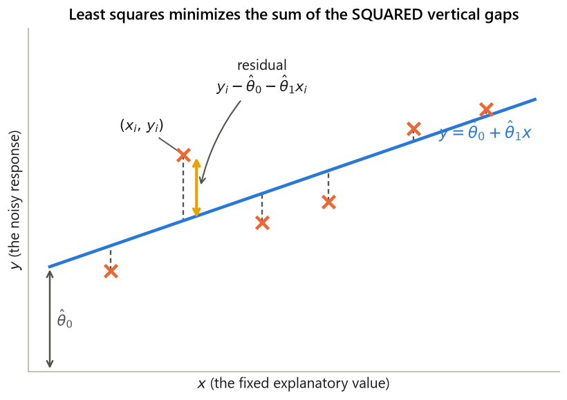
Solution
The denominator in the slope formula of §3.2 is $\sum_i (x_i-\bar x)^2$. If every $x_i$ equals $c$ then $\bar x = c$ and every term is $0$, so the denominator is $0$ and $\hat\theta_1$ is undefined. Geometrically: all the data sit on one vertical line, and every straight line that passes through the point $(c,\bar y)$ gives exactly the same sum of squared residuals, namely $\sum_i(y_i-\bar y)^2$. Check that directly: with $x_i=c$, the criterion is $\sum_i(y_i-\theta_0-\theta_1 c)^2$, which depends on $(\theta_0,\theta_1)$ only through the single number $a=\theta_0+\theta_1 c$; minimizing over $a$ gives $a=\bar y$, and infinitely many $(\theta_0,\theta_1)$ produce that same $a$. So the minimizer exists but is not unique. The moral: you can only learn a slope if your $x$ values vary, and the more they vary — the larger $\sum_i(x_i-\bar x)^2$ — the sharper the slope estimate. Section 3.5 makes that precise: $\operatorname{var}(\hat\Theta_1)=\sigma^2/\sum_i(x_i-\bar x)^2$.
Solution
(a) Shifting the responses shifts the whole cloud vertically by $10$, so the best line shifts
vertically by $10$: the slope is unchanged and the intercept rises by $10$. Algebraically, $\bar y$
becomes $\bar y+10$ while every $y_i-\bar y$ is unchanged, so $S_{xy}$ and hence
$\hat\theta_1=S_{xy}/S_{xx}$ are unchanged, and
$\hat\theta_0=(\bar y+10)-\hat\theta_1\bar x$ rises by $10$. Computation confirms
$\hat\theta_1=5$, $\hat\theta_0=65$ (P32_shift_th1, P32_shift_th0).
(b) Doubling the $x_i$ stretches the horizontal axis by $2$, so the same cloud is described by a
line of half the slope, with the intercept unchanged (the point $x=0$ is still $x=0$). Algebraically
$\bar x\mapsto 2\bar x$, each $x_i-\bar x\mapsto 2(x_i-\bar x)$, hence $S_{xy}\mapsto 2S_{xy}=420$
and $S_{xx}\mapsto 4S_{xx}=168$ (P32_double_Sxy, P32_double_Sxx), so
$\hat\theta_1\mapsto \tfrac{2}{4}\hat\theta_1=5/2$ and
$\hat\theta_0=\bar y-\tfrac{5}{2}(9)=77.5-22.5=55$, unchanged
(P32_double_th1, P32_double_th0). This is why regression coefficients
always carry units: $\hat\theta_1$ here is "points of exam score per hour", and it must change when
you switch from hours to half-hours.
3.2 The least-squares criterion and the normal equations
Why squares? Three reasons, in increasing order of depth. (i) Squaring makes positive and negative misses count alike, whereas $\sum_i(y_i-\theta_0-\theta_1x_i)$ can be driven to zero by lines that miss everything. (ii) $S$ is a smooth quadratic, so calculus gives a closed form — minimizing $\sum_i|y_i-\theta_0-\theta_1x_i|$ instead is a perfectly sensible criterion but has no closed-form solution. (iii) Under a normal noise model the least-squares answer is the maximum likelihood answer, which is L24 slide 3's second half and our §3.5.
Derivation, every step. The slide says only "set derivatives to zero"; here is the whole computation.
Step 1 — the first partial derivative. Differentiate $S$ with respect to $\theta_0$, treating $\theta_1$ as fixed. Each summand is $(\,\cdot\,)^2$ with inner function $y_i-\theta_0-\theta_1x_i$ whose derivative in $\theta_0$ is $-1$, so by the chain rule $$\frac{\partial S}{\partial\theta_0} =\sum_{i=1}^n 2\big(y_i-\theta_0-\theta_1x_i\big)\cdot(-1) =-2\sum_{i=1}^n\big(y_i-\theta_0-\theta_1x_i\big).$$ Setting this to zero and dividing by $-2$: $$\sum_{i=1}^n\big(y_i-\theta_0-\theta_1x_i\big)=0 \quad\Longleftrightarrow\quad \sum_i y_i-n\theta_0-\theta_1\sum_i x_i=0,$$ which is exactly $(\mathrm{E}_0)$ — the sum of $n$ copies of the constant $\theta_0$ is $n\theta_0$. Dividing $(\mathrm{E}_0)$ through by $n$ gives the memorable form $$\bar y=\theta_0+\theta_1\bar x \qquad\Longleftrightarrow\qquad \theta_0=\bar y-\theta_1\bar x. \tag{3.1}$$ Read (3.1) as a statement about the picture: whatever the slope turns out to be, the fitted line must pass through the centroid $(\bar x,\bar y)$ of the data cloud.
Step 2 — the second partial derivative. Now differentiate with respect to $\theta_1$; the inner derivative is $-x_i$, so $$\frac{\partial S}{\partial\theta_1} =\sum_{i=1}^n 2\big(y_i-\theta_0-\theta_1x_i\big)\cdot(-x_i) =-2\sum_{i=1}^n x_i\big(y_i-\theta_0-\theta_1x_i\big).$$ Setting to zero and dividing by $-2$, $$\sum_i x_iy_i-\theta_0\sum_i x_i-\theta_1\sum_i x_i^2=0,$$ which is $(\mathrm{E}_1)$.
Step 3 — eliminate $\theta_0$. Substitute (3.1) into $(\mathrm{E}_1)$, using $\sum_i x_i=n\bar x$: $$\sum_i x_iy_i-\big(\bar y-\theta_1\bar x\big)\,n\bar x-\theta_1\sum_i x_i^2=0 .$$ Expand the middle product and collect the two $\theta_1$ terms on one side: $$\sum_i x_iy_i-n\bar x\bar y \;=\; \theta_1\Big(\sum_i x_i^2-n\bar x^{\,2}\Big). \tag{3.2}$$
Step 4 — recognize both sides. Two standard identities turn (3.2) into the boxed formula. For the left side, $$\sum_i(x_i-\bar x)(y_i-\bar y)=\sum_i\big(x_iy_i-x_i\bar y-\bar xy_i+\bar x\bar y\big) =\sum_i x_iy_i-\bar y\underbrace{\sum_i x_i}_{n\bar x}-\bar x\underbrace{\sum_i y_i}_{n\bar y}+n\bar x\bar y =\sum_i x_iy_i-n\bar x\bar y,$$ the last step because $-n\bar x\bar y-n\bar x\bar y+n\bar x\bar y=-n\bar x\bar y$. Taking $y=x$ in that identity gives the right side: $\sum_i(x_i-\bar x)^2=\sum_i x_i^2-n\bar x^{\,2}$. So (3.2) reads $$\sum_i(x_i-\bar x)(y_i-\bar y)=\theta_1\sum_i(x_i-\bar x)^2 ,$$ and dividing by $\sum_i(x_i-\bar x)^2$ — legitimate exactly when it is nonzero, i.e. when the $x_i$ are not all equal (Practice 3.1) — gives $\hat\theta_1$. Then (3.1) gives $\hat\theta_0$. $\blacksquare$
Step 5 — is it really a minimum? The slide does not check, so we will. $S$ is a quadratic
in $(\theta_0,\theta_1)$, and its matrix of second derivatives (the Hessian) is constant:
$$\frac{\partial^2S}{\partial\theta_0^2}=2n,\qquad
\frac{\partial^2S}{\partial\theta_1^2}=2\sum_i x_i^2,\qquad
\frac{\partial^2S}{\partial\theta_0\partial\theta_1}=2\sum_i x_i,
\qquad H=2\begin{pmatrix} n & \sum_i x_i\\[2pt] \sum_i x_i & \sum_i x_i^2\end{pmatrix}.$$
Its determinant is
$$\det H=4\Big(n\sum_i x_i^2-\big(\textstyle\sum_i x_i\big)^2\Big)
=4n\Big(\sum_i x_i^2-n\bar x^{\,2}\Big)=4n\,S_{xx},$$
using $\sum_i x_i=n\bar x$ and then the Step-4 identity. Since $n>0$ and $S_{xx}>0$, we have
$\det H>0$; and the leading entry $2n>0$. A symmetric $2\times2$ matrix with positive leading
entry and positive determinant is positive definite, so $S$ is a strictly convex paraboloid and the
stationary point is its unique global minimum. For the dataset of Example 3.1, $\det H=1344$ and
$4nS_{xx}=4\cdot8\cdot42=1344$ (Hessian_det), as it must be.
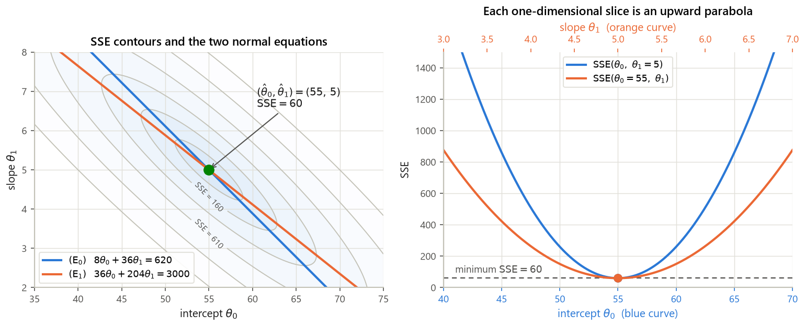
| $x_i$ (hours) | 1 | 2 | 3 | 4 | 5 | 6 | 7 | 8 |
|---|---|---|---|---|---|---|---|---|
| $y_i$ (score) | 63 | 61 | 72 | 74 | 79 | 87 | 86 | 98 |
Solution
The two means. $\sum_i x_i=36$ and $\sum_i y_i=620$ (sum_x,
sum_y), so with $n=8$
$$\bar x=\frac{36}{8}=\frac92=4.5,\qquad \bar y=\frac{620}{8}=\frac{155}{2}=77.5 .$$
The deviations. Tabulate $x_i-\bar x$ and $y_i-\bar y$ and their products
(all exact halves and quarters, dx, dy, prod_terms,
sq_terms):
| $i$ | 1 | 2 | 3 | 4 | 5 | 6 | 7 | 8 | sum |
|---|---|---|---|---|---|---|---|---|---|
| $x_i-\bar x$ | $-\tfrac72$ | $-\tfrac52$ | $-\tfrac32$ | $-\tfrac12$ | $\tfrac12$ | $\tfrac32$ | $\tfrac52$ | $\tfrac72$ | $0$ |
| $y_i-\bar y$ | $-\tfrac{29}{2}$ | $-\tfrac{33}{2}$ | $-\tfrac{11}{2}$ | $-\tfrac72$ | $\tfrac32$ | $\tfrac{19}{2}$ | $\tfrac{17}{2}$ | $\tfrac{41}{2}$ | $0$ |
| $(x_i-\bar x)(y_i-\bar y)$ | $\tfrac{203}{4}$ | $\tfrac{165}{4}$ | $\tfrac{33}{4}$ | $\tfrac74$ | $\tfrac34$ | $\tfrac{57}{4}$ | $\tfrac{85}{4}$ | $\tfrac{287}{4}$ | $210$ |
| $(x_i-\bar x)^2$ | $\tfrac{49}{4}$ | $\tfrac{25}{4}$ | $\tfrac94$ | $\tfrac14$ | $\tfrac14$ | $\tfrac94$ | $\tfrac{25}{4}$ | $\tfrac{49}{4}$ | $42$ |
So $S_{xy}=210$ and $S_{xx}=42$ (Sxy, Sxx); we will also need
$S_{yy}=1110$ (Syy). Both deviation rows sum to zero, which is the identity
$\sum_i(x_i-\bar x)=n\bar x-n\bar x=0$ and is a free arithmetic check.
Cross-check by the computational formula. $\sum_i x_iy_i=3000$ and $\sum_i x_i^2=204$
(sum_xy, sum_xx), so by Step 4's identity
$$S_{xy}=3000-8(4.5)(77.5)=3000-2790=210,\qquad S_{xx}=204-8(4.5)^2=204-162=42 . \checkmark$$
The estimates.
$$\hat\theta_1=\frac{S_{xy}}{S_{xx}}=\frac{210}{42}=5,\qquad
\hat\theta_0=\bar y-\hat\theta_1\bar x=77.5-5(4.5)=77.5-22.5=55 .$$
The fitted line is $\;y=55+5x$: each extra weekly hour is associated with five more points of exam
score. (th1, th0; numpy.polyfit and
scipy.stats.linregress return $5.0$ and $55.0$ to twelve decimals,
numpy_polyfit_slope, scipy_slope.)
Fitted values and residuals. $\hat y_i=55+5x_i$ gives
$60,65,70,75,80,85,90,95$ and hence
$$r_i=y_i-\hat y_i:\qquad 3,\ -4,\ 2,\ -1,\ -1,\ 2,\ -4,\ 3$$
(fitted, residuals). Their sum is $0$ and $\sum_i x_ir_i =
3-8+6-4-5+12-28+24=0$ — the two normal equations, verified numerically
(sum_residuals, sum_x_residuals). Finally
$$\mathrm{SSE}=\sum_i r_i^2=9+16+4+1+1+4+16+9=60 \qquad(\texttt{SSE}).$$
Solution
One unknown, so one derivative: $$\frac{d}{d\theta_1}\sum_i(y_i-\theta_1x_i)^2=\sum_i 2(y_i-\theta_1x_i)(-x_i)=0 \ \Longrightarrow\ \sum_i x_iy_i=\theta_1\sum_i x_i^2 \ \Longrightarrow\ \hat\theta_1=\frac{\sum_i x_iy_i}{\sum_i x_i^2},$$ the second derivative being $2\sum_i x_i^2>0$, so it is a minimum. Note that the formula uses raw sums, not deviations from the means: there is no $\bar x$ or $\bar y$ anywhere, because the line is no longer forced through the centroid.
On Example 3.1's data, $\sum_i x_iy_i=3000$ and $\sum_i x_i^2=204$, so
$\hat\theta_1=3000/204=250/17=14.705882$ (P34_theta_origin) and the sum of squared
residuals is $85720/17=5042.35$ (P34_SSE_origin) — 84.04 times the
$\mathrm{SSE}=60$ of the two-parameter fit (P34_SSE_ratio). Forcing the line through
the origin here is a disaster, because the data live around $x\in[1,8]$ with $y\approx 60$–$100$ and
a line through $(0,0)$ can only reach that cloud by tilting absurdly steeply. Lesson: only drop the
intercept when the physics genuinely demands it, and never merely because $\hat\theta_0$ "looks
insignificant".
3.3 What the fitted line always satisfies: residuals, and $R^2$
The two normal equations are not merely a step in the derivation; read at the solution they are two identities that the residuals of any least-squares fit obey, whatever the data.
Derivation. (i) and (ii) are $(\mathrm{E}_0)$ and $(\mathrm{E}_1)$ rewritten: Step 1 showed $\partial S/\partial\theta_0=0$ is $\sum_i(y_i-\hat\theta_0-\hat\theta_1x_i)=0$, and Step 2 showed $\partial S/\partial\theta_1=0$ is $\sum_i x_i(y_i-\hat\theta_0-\hat\theta_1x_i)=0$. (iii) follows by linearity: $\sum_i \hat y_ir_i=\sum_i(\hat\theta_0+\hat\theta_1x_i)r_i =\hat\theta_0\sum_i r_i+\hat\theta_1\sum_i x_ir_i=\hat\theta_0\cdot0+\hat\theta_1\cdot0=0$. (iv) is (3.1): dividing (i) by $n$ gives $\bar y-\hat\theta_0-\hat\theta_1\bar x=0$. $\blacksquare$
Derivation. Split each deviation from the mean into an explained part and a residual, using $\bar y=\hat\theta_0+\hat\theta_1\bar x$ from (iv): $$y_i-\bar y=(\hat y_i-\bar y)+(y_i-\hat y_i)=(\hat y_i-\bar y)+r_i .$$ Square and sum: $$\mathrm{SST}=\sum_i(\hat y_i-\bar y)^2+2\sum_i(\hat y_i-\bar y)r_i+\sum_i r_i^2 .$$ The cross term vanishes: $\sum_i(\hat y_i-\bar y)r_i=\sum_i\hat y_ir_i-\bar y\sum_ir_i=0-0=0$ by (iii) and (i). That leaves $\mathrm{SST}=\mathrm{SSR}+\mathrm{SSE}$. For the second formula, use (iv) to write $\hat y_i-\bar y=\hat\theta_1(x_i-\bar x)$, so $\mathrm{SSR}=\hat\theta_1^2\sum_i(x_i-\bar x)^2=\hat\theta_1^2S_{xx}=(S_{xy}/S_{xx})^2S_{xx} =S_{xy}^2/S_{xx}$. Dividing by $\mathrm{SST}=S_{yy}$ gives $R^2=S_{xy}^2/(S_{xx}S_{yy})$, which is $\hat\rho^{\,2}$ by definition. Both $\mathrm{SSR}$ and $\mathrm{SSE}$ are sums of squares, hence nonnegative, and they add to $\mathrm{SST}$; therefore $0\le R^2\le1$. $\blacksquare$
For Example 3.1. $\mathrm{SSR}=\hat\theta_1^2S_{xx}=25\cdot42=1050$ and
$\mathrm{SSE}=60$, and indeed $1050+60=1110=S_{yy}$ (SSR,
SST_decomp_check). Hence
$$R^2=\frac{1050}{1110}=\frac{35}{37}=0.945946,\qquad
\hat\rho=\frac{210}{\sqrt{42\cdot1110}}=0.972598$$
(R2_exact, R2, r_corr; scipy.stats.linregress
reports $r^2=0.945945945946$, scipy_rvalue2). Cross-check with the correlation form:
$210^2/(42\cdot1110)=44100/46620=35/37$. $\checkmark$
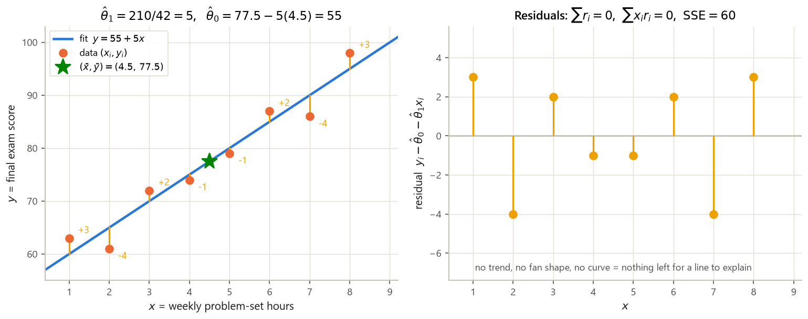
Solution
Take $x_i$ symmetric about $0$ — say $x=-2,-1,0,1,2$ — and $y_i=x_i^2$, i.e. $y=4,1,0,1,4$. Then $\bar x=0$ and $$S_{xy}=\sum_i(x_i-0)(y_i-\bar y)=\sum_i x_iy_i-\bar y\sum_ix_i=\sum_i x_i^3-0 =(-8)+(-1)+0+1+8=0,$$ so $\hat\theta_1=0$, $\hat\theta_0=\bar y=2$, and $R^2=S_{xy}^2/(S_{xx}S_{yy})=0$. Yet $x$ determines $y$ exactly. $R^2$ measures the strength of the linear association only; it is blind to any relation that is symmetric about $\bar x$. This is precisely the phenomenon G6 §4 flagged for the linear LMS estimator, where $\operatorname{cov}(\Theta,X)=0$ made the best linear estimator throw the data away even though $X$ determined $\Theta$. The fix is the same in both places: change the variable (fit $y\approx\theta_0+\theta_1h(x)$ with $h(x)=x^2$, §3.7) — and always look at the scatter plot before trusting a single summary number.
Solution
From the decomposition, $\mathrm{SSE}=\mathrm{SST}-\mathrm{SSR}=S_{yy}-S_{xy}^2/S_{xx}$.
Numerically $1110-210^2/42=1110-44100/42=1110-1050=60$. $\checkmark$ (SSE.) Two
consequences worth storing: (a) $\mathrm{SSE}\le S_{yy}$ always, with equality iff $S_{xy}=0$ — a
fitted line can never do worse than the flat line $y=\bar y$, since that flat line is itself
available as a candidate; (b) the formula is the sample version of the linear-LMS error
$(1-\rho^2)\sigma_\Theta^2$ of G6 §4, since
$\mathrm{SSE}=S_{yy}\big(1-S_{xy}^2/(S_{xx}S_{yy})\big)=S_{yy}(1-\hat\rho^{\,2})$.
3.4 Where the formulas come from: the linear LMS reading
L24 slide 4 spends its second half on the "interpretation of the form of the solution", and this is the bridge back to G6. The claim is that the least-squares formulas are not an accident of calculus: they are the sample version of the best linear estimator you already derived in a Bayesian setting.
Solution
The covariance. Use bilinearity of covariance (G3 §4): for constants $a,b,c$ and random variables $U,V$, $\operatorname{cov}(X,\,a+bU+cV)=b\operatorname{cov}(X,U)+c\operatorname{cov}(X,V)$, because adding a constant to an argument does not change a covariance and constants factor out. Applying it with $Y=\theta_0+\theta_1X+W$: $$\operatorname{cov}(X,Y)=\operatorname{cov}(X,\theta_0)+\theta_1\operatorname{cov}(X,X) +\operatorname{cov}(X,W) =0+\theta_1\operatorname{var}(X)+\operatorname{cov}(X,W).$$ Here $\operatorname{cov}(X,\theta_0)=0$ because $\theta_0$ is a constant, and $\operatorname{cov}(X,X)=\operatorname{var}(X)$ by definition.
The noise term drops out. $W$ is independent of $X$, so $\mathbb{E}[XW]=\mathbb{E}[X]\mathbb{E}[W]$ (G3 §4), and therefore $$\operatorname{cov}(X,W)=\mathbb{E}[XW]-\mathbb{E}[X]\mathbb{E}[W] =\mathbb{E}[X]\mathbb{E}[W]-\mathbb{E}[X]\mathbb{E}[W]=0 .$$ (Zero mean alone is not enough here — independence is what is used; but note that once $\operatorname{cov}(X,W)=0$ holds, that is all the argument needs, so uncorrelatedness would suffice.) Hence $\operatorname{cov}(X,Y)=\theta_1\operatorname{var}(X)$, and dividing by $\operatorname{var}(X)>0$ gives $\theta_1=\operatorname{cov}(X,Y)/\operatorname{var}(X)$, which is the first claim.
The intercept. Take expectations across the model and use linearity (G2 §2): $$\mathbb{E}[Y]=\mathbb{E}[\theta_0]+\theta_1\mathbb{E}[X]+\mathbb{E}[W] =\theta_0+\theta_1\mathbb{E}[X]+0,$$ so $\theta_0=\mathbb{E}[Y]-\theta_1\mathbb{E}[X]$. $\blacksquare$
Numerical confirmation with deliberately non-normal ingredients
(MC_*, $4\times10^6$ samples): take $X$ exponential with mean $3$ (so
$\operatorname{var}(X)=9$), $W$ Laplace with mean $0$ and scale $2$, independent, and
$\theta_0=55,\theta_1=5$. Simulation gives $\operatorname{cov}(X,Y)=44.945$,
$\operatorname{var}(X)=8.989$, ratio $4.99985\approx5=\theta_1$, and
$\mathbb{E}[Y]-\theta_1\mathbb{E}[X]=55.0015\approx55=\theta_0$. Neither variable is normal and
neither needs to be: the property is a covariance identity, not a distributional one.
samp_cov, samp_var_x,
samp_cov_over_var). The $n$'s cancel, which is why they never appear in the boxed
formula.B&T (§9.2, pp. 478–480) turn this observation into two of their three formal justifications of least squares, both worth knowing because they assume much less than the normal model of §3.5.
- Justification (b): approximate linear LMS, no linear model assumed. Suppose the pairs $(X_i,Y_i)$ are i.i.d. draws from some unknown joint distribution, and you want to predict the $Y$ of a fresh independent pair $(X_0,Y_0)$ from its $X$ by a linear rule $\hat Y_0=\theta_0+\theta_1X_0$. G6 §4 says the optimal coefficients are $\theta_1=\operatorname{cov}(X_0,Y_0)/\operatorname{var}(X_0)$ and $\theta_0=\mathbb{E}[Y_0]-\theta_1\mathbb{E}[X_0]$. You do not know those four moments, so you plug in their sample counterparts — and out come the regression formulas. Nothing in this argument assumes the true relation is linear; it only assumes you have decided to use a line.
- Justification (c): approximate LMS under a linear model, via the WLLN. If the pairs are i.i.d. and genuinely satisfy $Y_i=\theta_0+\theta_1X_i+W_i$ with zero-mean noise independent of the $X_i$, then $\mathbb{E}[Y_0\mid X_0]=\theta_0+\theta_1X_0$, so by the LMS theorem of G6 §4 the true $(\theta_0,\theta_1)$ minimize $\mathbb{E}\big[(Y_0-\theta_0'-\theta_1'X_0)^2\big]$ over all $(\theta_0',\theta_1')$. By the weak law of large numbers (G6 §1), for each fixed candidate pair $$\frac1n\sum_{i=1}^n\big(Y_i-\theta_0'-\theta_1'X_i\big)^2 \;\xrightarrow[n\to\infty]{}\;\mathbb{E}\big[(Y_0-\theta_0'-\theta_1'X_0)^2\big] \quad\text{in probability},$$ so minimizing the sample average — which is $\frac1n S(\theta_0',\theta_1')$, the least-squares criterion divided by the constant $n$ — approximates minimizing the true objective. Least squares is therefore a consistent way of finding the true coefficients, in the sense of §1.
Solution
By symmetry of the derivation (swap the roles of the two coordinates),
$\hat\beta_1=S_{xy}/S_{yy}=210/1110=7/37=0.189189$ and
$\hat\beta_0=\bar x-\hat\beta_1\bar y=4.5-(7/37)(77.5)=-376/37=-10.162162$
(P38_th1_reverse, P38_th0_reverse). Now
$1/\hat\theta_1=1/5=0.2\neq0.189189$, so no — the two fits are genuinely different lines.
Re-expressed as a function of $x$, the reverse line has slope
$1/\hat\beta_1=37/7=5.285714$ (P38_reverse_as_y_on_x_slope), steeper than $5$.
The product is
$$\hat\theta_1\hat\beta_1=\frac{S_{xy}}{S_{xx}}\cdot\frac{S_{xy}}{S_{yy}}
=\frac{S_{xy}^2}{S_{xx}S_{yy}}=R^2=\frac{35}{37}=0.945946$$
(P38_product), so the two slopes are reciprocal only when $R^2=1$, i.e. when the points are exactly
collinear. Since $R^2\le1$, each fit is always shallower than the reciprocal of the other — the
classic "regression to the mean" geometry. The reason is structural: regressing $y$ on $x$
minimizes vertical gaps, regressing $x$ on $y$ minimizes horizontal gaps, and
these are different criteria. Decide which variable you are predicting before you
fit.
3.5 Why least squares? Maximum likelihood under normal noise, and what it buys
Sections 3.2–3.4 contain no probability. L24 slide 3's "one interpretation" supplies it, and in doing so connects regression to the maximum likelihood machinery of §2.
Derivation, filling the slide's "Take logs, same as $(*)$".
Step 1 — write the likelihood. Since the $Y_i$ are independent, the joint density factorizes; since $Y_i\sim N(\theta_0+\theta_1x_i,\sigma^2)$, each factor is a normal density evaluated at $y_i$: $$f_Y(y;\theta_0,\theta_1)=\prod_{i=1}^n\frac{1}{\sqrt{2\pi\sigma^2}} \exp\left\{-\frac{(y_i-\theta_0-\theta_1x_i)^2}{2\sigma^2}\right\}.$$ Collect the $n$ identical prefactors and add the exponents (the product of exponentials is the exponential of the sum): $$f_Y(y;\theta_0,\theta_1)=\underbrace{(2\pi\sigma^2)^{-n/2}}_{=\,c} \exp\left\{-\frac{1}{2\sigma^2}\sum_{i=1}^n(y_i-\theta_0-\theta_1x_i)^2\right\},$$ which is the slide's expression, with its unexplained constant $c$ now identified as $(2\pi\sigma^2)^{-n/2}$. Note that $c$ does not involve $\theta_0$ or $\theta_1$.
Step 2 — take logs. The logarithm is strictly increasing, so it does not move the location of a maximum (§2): $$\ln f_Y(y;\theta_0,\theta_1)=-\frac n2\ln(2\pi\sigma^2) -\frac{1}{2\sigma^2}\sum_{i=1}^n(y_i-\theta_0-\theta_1x_i)^2 =-\frac n2\ln(2\pi\sigma^2)-\frac{1}{2\sigma^2}S(\theta_0,\theta_1).$$ Step 3 — read off the maximizer. The first term is a constant in $(\theta_0,\theta_1)$. In the second, the factor $-1/(2\sigma^2)$ is a negative constant, so maximizing the whole expression over $(\theta_0,\theta_1)$ is the same as minimizing $S(\theta_0,\theta_1)$ — which is the least-squares criterion $(*)$. Hence the ML estimates are the least-squares estimates: $\hat\theta_1=S_{xy}/S_{xx}$, $\hat\theta_0=\bar y-\hat\theta_1\bar x$. Notice that they do not depend on $\sigma^2$ at all. $\blacksquare$
Step 4 — the variance. Now maximize over $v=\sigma^2$ with $(\theta_0,\theta_1)$ at their
optima, so that $S(\hat\theta_0,\hat\theta_1)=\mathrm{SSE}$ is a fixed number:
$$\ell(v)=-\frac n2\ln(2\pi v)-\frac{\mathrm{SSE}}{2v},\qquad
\frac{d\ell}{dv}=-\frac{n}{2v}+\frac{\mathrm{SSE}}{2v^2}=0
\ \Longrightarrow\ nv=\mathrm{SSE}\ \Longrightarrow\ \hat v=\frac{\mathrm{SSE}}{n},$$
where $\frac{d}{dv}\ln(2\pi v)=1/v$ and $\frac{d}{dv}v^{-1}=-v^{-2}$. For $v$ below $\mathrm{SSE}/n$
the derivative is positive and above it negative, so this is the maximum. For Example 3.1,
$\hat\sigma^2_{\text{ML}}=60/8=7.5$ (sigma2_ML).
Derivation.
(a) The linear form. Because $\sum_i(x_i-\bar x)=0$, $$\sum_i(x_i-\bar x)(Y_i-\bar Y)=\sum_i(x_i-\bar x)Y_i-\bar Y\underbrace{\sum_i(x_i-\bar x)}_{0} =\sum_i(x_i-\bar x)Y_i,$$ so $\hat\Theta_1=\sum_i c_iY_i$ with the fixed weights $c_i=(x_i-\bar x)/S_{xx}$. This is the key structural fact: the slope estimator is a fixed linear combination of the responses.
(b) Unbiasedness of $\hat\Theta_1$. Take expectations, using linearity and $\mathbb{E}[Y_i]=\theta_0+\theta_1x_i$: $$\mathbb{E}[\hat\Theta_1]=\sum_i c_i(\theta_0+\theta_1x_i) =\theta_0\underbrace{\sum_i c_i}_{=0}+\theta_1\sum_i c_ix_i .$$ The first sum vanishes because $\sum_i(x_i-\bar x)=0$. For the second, $$\sum_i c_ix_i=\frac{\sum_i(x_i-\bar x)x_i}{S_{xx}} =\frac{\sum_i(x_i-\bar x)(x_i-\bar x)}{S_{xx}}=\frac{S_{xx}}{S_{xx}}=1,$$ where the middle equality again subtracts $\bar x\sum_i(x_i-\bar x)=0$. Hence $\mathbb{E}[\hat\Theta_1]=\theta_1$: unbiased for every $n$, not just asymptotically.
(c) Variance of $\hat\Theta_1$. The $Y_i$ are independent with variance $\sigma^2$ each, so variances of a linear combination add with squared weights (G2 §3): $$\operatorname{var}(\hat\Theta_1)=\sum_i c_i^2\sigma^2 =\frac{\sigma^2}{S_{xx}^2}\sum_i(x_i-\bar x)^2=\frac{\sigma^2 S_{xx}}{S_{xx}^2} =\frac{\sigma^2}{S_{xx}} .$$
(d) The intercept. $\hat\Theta_0=\bar Y-\hat\Theta_1\bar x$, so $\mathbb{E}[\hat\Theta_0]=\mathbb{E}[\bar Y]-\bar x\theta_1 =\big(\theta_0+\theta_1\bar x\big)-\theta_1\bar x=\theta_0$, using $\mathbb{E}[\bar Y]=\frac1n\sum_i(\theta_0+\theta_1x_i)=\theta_0+\theta_1\bar x$. For its variance, first note the two pieces are uncorrelated: $$\operatorname{cov}(\bar Y,\hat\Theta_1)=\operatorname{cov}\Big(\tfrac1n\sum_iY_i,\sum_jc_jY_j\Big) =\frac1n\sum_i c_i\sigma^2=\frac{\sigma^2}{n}\cdot\frac{\sum_i(x_i-\bar x)}{S_{xx}}=0,$$ because independent $Y_i$ contribute only their own variances. Therefore $$\operatorname{var}(\hat\Theta_0)=\operatorname{var}(\bar Y)+\bar x^{\,2} \operatorname{var}(\hat\Theta_1)=\frac{\sigma^2}{n}+\frac{\bar x^{\,2}\sigma^2}{S_{xx}} .$$
(e) $\mathbb{E}[\mathrm{SSE}]$. The count $n-2$ (rather than $n$) is the price of having
estimated two parameters: the residual vector lives in the $(n-2)$-dimensional subspace orthogonal
to $\mathbf{1}$ and to $x$ (the identities of §3.3), and each remaining dimension contributes
$\sigma^2$. Monte Carlo confirms it: with $n=8$ and $\sigma=5$, $\mathbb{E}[\mathrm{SSE}]$ should be
$6\cdot25=150$, and $4\times10^5$ simulated datasets give $150.029$
(WID_n8_s5_ESSE_theory, WID_n8_s5_ESSE_MC); with $\sigma=12$, theory
$864$, simulation $863.36$. $\blacksquare$
sigma2_ML_bias_factor) — a $25\%$ underestimate on average, and therefore confidence
intervals that are $13\%$ too narrow. Always report
$$\hat\sigma^2=\frac{\mathrm{SSE}}{n-2},\qquad \hat\sigma=\sqrt{\frac{\mathrm{SSE}}{n-2}},$$
the unbiased version; $\hat\sigma$ is what software calls the standard error of the
regression and what L24 slide 6 lists as "'Standard error' (estimate of $\sigma$)". This is the
same "ML can be biased" phenomenon as in §2, and the same $n$ versus $n-1$ story as the sample
variance in §1 — here the correction is $-2$ because two coefficients were fitted.- Fit: compute $\hat\theta_1=S_{xy}/S_{xx}$ and $\mathrm{SSE}$.
- Estimate the noise: $\hat\sigma=\sqrt{\mathrm{SSE}/(n-2)}$.
- Standard error of the slope: $\operatorname{se}(\hat\theta_1)=\hat\sigma/\sqrt{S_{xx}}$ — the estimated version of $\sqrt{\operatorname{var}(\hat\Theta_1)}=\sigma/\sqrt{S_{xx}}$.
- Quantile: if $\sigma$ were known, use $z$ with $\Phi(z)=1-\alpha/2$ and the interval $\hat\theta_1\pm z\sigma/\sqrt{S_{xx}}$ is exact, because $\hat\Theta_1$ is exactly normal. With $\sigma$ estimated from $n$ points and $2$ fitted coefficients, use instead the $t$ quantile with $n-2$ degrees of freedom (§1).
- Report $\hat\theta_1\pm t_{1-\alpha/2,\,n-2}\operatorname{se}(\hat\theta_1)$. Same recipe for $\theta_0$ with $\operatorname{se}(\hat\theta_0)=\hat\sigma\sqrt{1/n+\bar x^{\,2}/S_{xx}}$.
Applied to Example 3.1. With $\mathrm{SSE}=60$ and $n-2=6$,
$$\hat\sigma^2=\frac{60}{6}=10,\qquad \hat\sigma=\sqrt{10}=3.162278$$
(sigma_hat2, sigma_hat), and
$$\operatorname{se}(\hat\theta_1)=\frac{3.162278}{\sqrt{42}}=\frac{3.162278}{6.480741}=0.487950,
\qquad
\operatorname{se}(\hat\theta_0)=3.162278\sqrt{\frac18+\frac{20.25}{42}}
=3.162278\sqrt{0.607143}=2.464027$$
(se_th1, se_th0; scipy.stats.linregress returns the same two
numbers, scipy_stderr_slope, scipy_stderr_intercept). With
$t_{0.975,6}=2.446912$ (t_crit_6df_975), the $95\%$ confidence intervals are
$$\theta_1:\ 5\pm2.446912(0.487950)=5\pm1.193971=[3.806029,\ 6.193971],$$
$$\theta_0:\ 55\pm2.446912(2.464027)=55\pm6.029257=[48.970743,\ 61.029257]$$
(ci_th1, ci_th0). The slope interval excludes $0$ comfortably, so the
data are not consistent with "no association"; but it is wide — anywhere from $3.8$ to $6.2$ points
per hour — which eight data points cannot narrow further.
Solution
With $\sigma$ known, $\hat\Theta_1\sim N(\theta_1,\sigma^2/S_{xx})$ exactly, so
$(\hat\Theta_1-\theta_1)\sqrt{S_{xx}}/\sigma$ is exactly standard normal and the interval uses
$z_{0.975}=1.959964$:
$$\hat\theta_1\pm z\frac{\sigma}{\sqrt{S_{xx}}}=5\pm1.959964\cdot\frac{3}{6.480741}
=5\pm1.959964(0.462910)=5\pm0.907287=[4.092713,\ 5.907287].$$
Compare $[3.806029,\ 6.193971]$ from the $t$-interval. The known-$\sigma$ interval is
narrower, for two compounding reasons: $\sigma=3$ is smaller than the estimate
$\hat\sigma=3.162$, and $z=1.96$ is smaller than $t_{0.975,6}=2.447$. The gap between $1.96$ and
$2.447$ — a $25\%$ widening — is the price of not knowing $\sigma$ with only six degrees of freedom;
by $n=30$ it has shrunk to about $4.5\%$ ($t_{0.975,28}=2.048407$, a factor $1.045125$ against
$1.248447$ at $n=8$: P39_t_over_z_n30, P39_t_over_z_n8). (Arithmetic:
$3/\sqrt{42}=0.462910$; all quantiles from scipy.stats, keys
t_crit_6df_975, P39_z975 $=1.959964$, P39_ci.)
3.6 Reporting a regression, and a real dataset
- Plot the data first. If the cloud curves, or fans out, or has one point far from the rest, stop and read §3.8 before fitting anything.
- Compute the six numbers $n,\ \bar x,\ \bar y,\ S_{xx},\ S_{xy},\ S_{yy}$. Everything else is a function of these.
- Estimate: $\hat\theta_1=S_{xy}/S_{xx}$, $\hat\theta_0=\bar y-\hat\theta_1\bar x$.
- Assess spread: $\mathrm{SSE}=S_{yy}-S_{xy}^2/S_{xx}$, $\hat\sigma=\sqrt{\mathrm{SSE}/(n-2)}$.
- Assess fit: $R^2=S_{xy}^2/(S_{xx}S_{yy})$.
- Quantify uncertainty: $\operatorname{se}(\hat\theta_1)=\hat\sigma/\sqrt{S_{xx}}$, $\operatorname{se}(\hat\theta_0)=\hat\sigma\sqrt{1/n+\bar x^{\,2}/S_{xx}}$, and the $t_{n-2}$ intervals of §3.5.
- Plot the residuals against $x$ and look for structure. No structure, no complaint.
- State the scope: the fit describes the range of $x$ in the data, and describes association, not causation.
| year | 1975 | 1976 | 1977 | 1978 | 1979 | 1980 | 1981 |
|---|---|---|---|---|---|---|---|
| lean | 2.9642 | 2.9644 | 2.9656 | 2.9667 | 2.9673 | 2.9688 | 2.9696 |
| year | 1982 | 1983 | 1984 | 1985 | 1986 | 1987 | |
| lean | 2.9698 | 2.9713 | 2.9717 | 2.9725 | 2.9742 | 2.9757 |
Solution
Steps 2–3. $n=13$; the years are consecutive integers so
$\bar x=1981$ exactly (the middle year), and $\bar y=2.969369$ (B&T print $2.9694$;
pisa_xbar, pisa_ybar). For consecutive integers centred at $0$,
$$S_{xx}=\sum_{k=-6}^{6}k^2=2(1+4+9+16+25+36)=182$$
(pisa_Sxx), and the cross term evaluates to $S_{xy}=0.1696$ (pisa_Sxy). Hence
$$\hat\theta_1=\frac{0.1696}{182}=0.00093187,\qquad
\hat\theta_0=2.969369-0.00093187(1981)=1.123338$$
(pisa_th1, pisa_th0), matching B&T's rounded
$\hat\theta_1=0.0009$ and $\hat\theta_0=1.1233$ exactly
(pisa_th1_rounded4, pisa_th0_rounded4). $\checkmark$
Steps 4–5. $\mathrm{SSE}=1.923\times10^{-6}$ m² and
$R^2=0.98798$ (pisa_SSE, pisa_R2): the straight line accounts for $98.8\%$
of the variation in the lean.
Interpretation. $\hat\theta_1=0.00093187$ metres per year is $0.9319$ millimetres per year
(pisa_mm_per_year) — a number with a clear physical meaning, unlike $\hat\theta_0$,
which is the lean the line predicts "in the year $0$" and is a pure artifact of where the $x$ axis
has its origin. This is a general point: an intercept far outside the data range is not
interpretable. Had we recentred the years, fitting $y$ against $x-1981$, the slope would be
unchanged at $0.00093187$ while the intercept would become $\bar y=2.969369$, the lean in the middle
year — a far more useful parametrization (pisa_centred_th1,
pisa_centred_th0; the identity
$\hat\theta_0^{\text{centred}}=\bar y$ is (3.1) with $\bar x=0$).
Step 7. The residuals (Fig. 3.4, right) are at most $0.74$ mm in absolute value and form $9$
runs of constant sign in $13$ points (pisa_resid_absmax_mm,
pisa_sign_runs) — the sequence of signs is
$+,-,-,+,-,+,+,-,+,-,-,+,+$, which breaks into $9$ blocks, i.e. $8$ sign changes. Independent signs
would average about $1+(n-1)/2=7$ runs, so $9$ is unremarkable and there is no evidence of leftover
curvature. The linear model survives its diagnostic.
Step 8. The fit says nothing about why the tower tilts, and it applies to
1975–1987. Extrapolating to 2010 gives $1.123338+0.00093187(2010)=2.996393$ m
(pisa_pred_2010) — but between 1990 and 2001 the tower was actively stabilized with
counterweights and soil extraction, and the lean was reduced. No amount of $R^2$ in the
1980s data could have anticipated that; see §3.8.
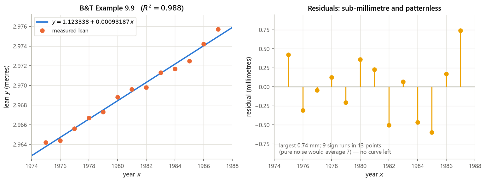
Solution
(a) $55+5(10)=105$ (pred_x10). (b) $55+5(20)=155$ (pred_x20).
(c) Both are impossible: an exam is out of $100$. The data covered $x\in[1,8]$, and the fitted line carries no information whatever about what happens outside that window — it was never asked to. Whatever the true relation is, it must flatten out as the score approaches its ceiling, and a straight line cannot flatten. This is the extrapolation failure of §3.8, and it is worth noticing how loudly the model announces its own invalidity here: a prediction outside the physically possible range is a proof that the model has been pushed too far. It is much more dangerous when the extrapolated value merely looks plausible.
3.7 The world of regression: more variables, better variables, priors
L24 slides 5 and 6 sketch the extensions. All of them keep the same three moving parts — a sum of squared residuals, derivatives set to zero, linear equations to solve — and this is the reason regression scales.
Setting the four partial derivatives to zero gives four linear equations in four unknowns — exactly the same argument as Steps 1–2 of §3.2, once per coefficient. The pattern is worth seeing once in general: differentiating with respect to the coefficient of a variable $u$ gives $-2\sum_i u_i(y_i-\text{fitted}_i)=0$, i.e. the residuals are orthogonal to every explanatory variable (and to the constant $1$, from $\theta_0$) — the identities of §3.3, one per column. The system always has a unique solution unless some explanatory variable is an exact linear combination of the others, which is the extreme case of the multicollinearity of §3.8.
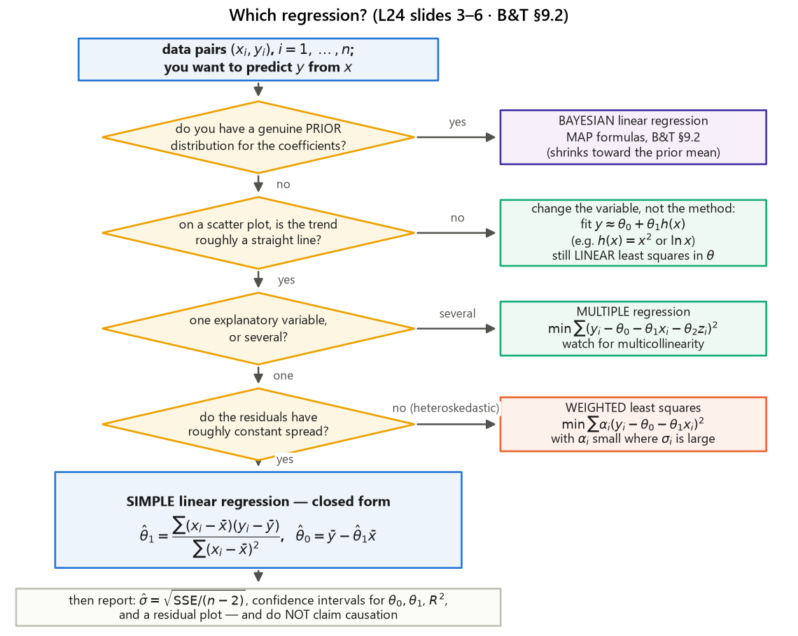
Solution
The trick. Take logarithms of the model: $\ln y\approx \ln a+bx$. Setting $z=\ln y$, $\theta_0=\ln a$, $\theta_1=b$, this is simple linear regression of $z$ on $x$ — the "choosing the right variables" idea of L24 slide 5 applied to the response rather than the explanatory variable.
The fit. The transformed responses are
$z=0.693147,\ 1.223775,\ 1.704748,\ 2.208274,\ 2.694627,\ 3.202746$ (P312_lny), with
$\bar x=2.5$, $\bar z=1.954553$, $S_{xx}=17.5$ and $S_{xz}=8.732039$
(P312_Sxx, P312_Sxz). Hence
$$\hat b=\hat\theta_1=\frac{8.732039}{17.5}=0.498974,\qquad
\widehat{\ln a}=\hat\theta_0=1.954553-0.498974(2.5)=0.707119,$$
$$\hat a=e^{0.707119}=2.028140$$
(P312_b1, P312_b0, P312_a). The fitted curve is
$y\approx2.02814\,e^{0.498974x}$ — recognizably $2e^{x/2}$, which is indeed how the data were built.
Fitted values $2.0281,\ 3.3404,\ 5.5018,\ 9.0615,\ 14.9246,\ 24.5813$ against the observed
$2.0,3.4,5.5,9.1,14.8,24.6$ leave a total squared error of $0.021709$ on the original scale
(P312_fitted_y, P312_SSE_original_scale), and $R^2=0.999863$ on the log
scale (P312_R2_log_scale).
The catch, and it is a real one. You have minimized squared errors in $\ln y$, not in $y$. Under the ML reading of §3.5, that corresponds to assuming multiplicative lognormal noise, $Y_i=ae^{bx_i}\cdot e^{W_i}$ — errors proportional to the size of $y$ — rather than additive noise of constant size. Which is right is a modelling judgement about your measurement process, not a mathematical question; and for growth data, proportional error is usually the more plausible of the two. Note the payoff either way: a nonlinear fit with no iteration, obtained by a change of variable.
3.8 What a fitted line does not claim
L24 slide 6 lists the "common concerns" in four words and moves on. They deserve more, because every one of them is a way that a technically correct computation produces a false conclusion. B&T's "Practical Considerations" (pp. 484–485) is the reference.
![Three panels. (a) Extrapolation: data over x from 1 to 8 follow a curve; the fitted straight line and the true curved relation agree over the data range but diverge sharply beyond it, with a double arrow marking a gap of 44 at x = 15. (b) Heteroskedasticity: points scatter about a rising line with spread that grows steadily with x, inside a widening shaded band. (c) A single high-leverage point: eight points along y = 55 + 5x plus one added point far to the right and low, which drags the fitted line down to a near-flat y = 73.67 + 0.33x.](img/g7_s3_pitfalls.png)
- Heteroskedasticity — the noise variance is not constant across $i$ (Fig. 3.6(b): the variance of household consumption is much larger for rich households than poor ones). The least-squares estimator remains unbiased, but the noisiest points get equal weight and so dominate the fit, and the standard errors of §3.5 — which were derived from a single $\sigma^2$ — are simply wrong. Remedy: weighted least squares, $\min\sum_i\alpha_i(y_i-\theta_0-\theta_1x_i)^2$ with $\alpha_i$ small where $\sigma_i$ is large (this is the correct ML criterion when the $W_i$ have different variances; redo Step 1 of §3.5's derivation with $\sigma_i^2$ inside each exponent to see $\alpha_i=1/\sigma_i^2$ fall out).
- Multicollinearity — in multiple regression, two explanatory variables that move together cannot have their effects separated. B&T's extreme case: if $y=2x+1$ is the truth and $z=2x$ always holds in the data, then $y=z+1$ fits identically well, and no procedure can choose between them. Symptom: coefficients with huge standard errors that swing wildly when a data point is added.
- Overfitting — with enough explanatory variables you can drive $\mathrm{SSE}$ to zero and $R^2$ to $1$ while learning nothing; $n$ points can be fitted exactly by a polynomial of degree $n-1$. B&T's rule of thumb: have several times (say ten times) as many data points as parameters. Note the arithmetic warning built into §3.5: with $p$ fitted coefficients the unbiased variance estimate divides by $n-p$, which blows up as $p\to n$ — the formula itself is telling you that you have no information left.
Solution
Now $n=9$, $\sum_ix_i=36+15=51$ so $\bar x=51/9=17/3=5.666667$, and
$\sum_iy_i=620+60=680$ so $\bar y=680/9=75.555556$ (P313_xbar, P313_ybar).
Recomputing the two sums gives $S_{xx}=140$ and $S_{xy}=140/3$ (P313_Sxx,
P313_Sxy), hence
$$\hat\theta_1=\frac{140/3}{140}=\frac13=0.333333,\qquad
\hat\theta_0=\frac{680}{9}-\frac13\cdot\frac{17}{3}=\frac{680-17}{9}=\frac{221}{3}=73.666667$$
(P313_th1, P313_th0). The slope has fallen from $5$ to $1/3$ — the fitted
line is essentially flat (Fig. 3.6(c)) — and $R^2$ has collapsed from $0.945946$ to $0.011254$
(P313_R2), while $\mathrm{SSE}$ has risen from $60$ to $1366.67$
(P313_SSE).
Why one point can do this. The new point has $x_9-\bar x=15-17/3=28/3$, far larger in
magnitude than any other deviation, and $\hat\Theta_1=\sum_ic_iY_i$ with
$c_i=(x_i-\bar x)/S_{xx}$ — so its weight $c_9$ dwarfs the others. A point that is extreme in $x$ is
called high leverage: it can move the line a lot. Its own residual is only $-18.67$
(P313_resid_outlier), which is not even the largest in the refit, precisely because the
line has swung over to chase it. This is why the residual plot of Recipe step 7 is mandatory
— and why you plot the data before fitting (step 1), since here the bad point is obvious to the
eye.
Solution
(1) Reverse causation and common cause. The obvious explanation is that being ill causes both more visits and more spending. Illness is the third variable of the Gotcha above; the regression cannot see it. (2) Policy conclusions require intervention. The estimated slope describes people who chose different numbers of visits, not what happens when you forbid visits — a comparison the data never made. (3) Precision is not validity. The narrow interval says only that with $n=10{,}000$ the sampling noise in $\hat\Theta_1$ is small ($\operatorname{se}\propto1/\sqrt{S_{xx}}$, which grows with $n$); it says nothing about bias from an omitted variable, which does not shrink with $n$ — more data makes a confounded estimate more precisely wrong. (4) $R^2$ measures spread accounted for, not truth. $R^2=0.61$ would be just as high if a third variable drove everything. (5) Untested linearity and probable heteroskedasticity. Spending is bounded below by $0$ and heavily right-skewed, so the constant- $\sigma^2$ normal model of §3.5 is implausible and the reported interval is suspect on its own terms. The defensible statement is the boring one: in this sample, people with more hospital visits spent more, by about $\hat\theta_1$ per visit.
- Setup (L24 slide 3): data $(x_i,y_i)$; the $x_i$ are exact constants, $\theta_0,\theta_1$ are unknown constants (classical, no prior), only the $y_i$ are noisy. Residual $y_i-\theta_0-\theta_1x_i$, measured vertically.
- Criterion: $\min_{\theta_0,\theta_1}S=\sum_i(y_i-\theta_0-\theta_1x_i)^2$.
- Normal equations: $n\theta_0+(\sum x_i)\theta_1=\sum y_i$ and $(\sum x_i)\theta_0+(\sum x_i^2)\theta_1=\sum x_iy_i$; Hessian determinant $4nS_{xx}>0$, so the stationary point is the unique global minimum.
- Solution (L24 slide 4): $\hat\theta_1=S_{xy}/S_{xx}$, $\hat\theta_0=\bar y-\hat\theta_1\bar x$, with $S_{xx}=\sum(x_i-\bar x)^2$, $S_{xy}=\sum(x_i-\bar x)(y_i-\bar y)$, $S_{yy}=\sum(y_i-\bar y)^2$; equivalently $S_{xy}=\sum x_iy_i-n\bar x\bar y$.
- Always true: $\sum_ir_i=0$, $\sum_ix_ir_i=0$, $\sum_i\hat y_ir_i=0$, line through $(\bar x,\bar y)$; $\mathrm{SST}=\mathrm{SSR}+\mathrm{SSE}$ with $\mathrm{SSE}=S_{yy}-S_{xy}^2/S_{xx}$ and $R^2=S_{xy}^2/(S_{xx}S_{yy})=\hat\rho^{\,2}\in[0,1]$.
- Linear LMS reading (L24 slide 4, G6 §4): under $Y=\theta_0+\theta_1X+W$ with $W$ independent of $X$ and zero mean, $\theta_1=\operatorname{cov}(X,Y)/\operatorname{var}(X)$ and $\theta_0=\mathbb{E}[Y]-\theta_1\mathbb{E}[X]$; the regression formulas are these with sample moments $S_{xy}/n$, $S_{xx}/n$, $\bar x$, $\bar y$ in place of population moments.
- ML reading (L24 slide 3): $Y_i=\theta_0+\theta_1x_i+W_i$, $W_i$ i.i.d. $N(0,\sigma^2)$ gives likelihood $(2\pi\sigma^2)^{-n/2}\exp\{-S(\theta_0,\theta_1)/(2\sigma^2)\}$; logs turn maximizing into minimizing $S$. Also $\hat\sigma^2_{\text{ML}}=\mathrm{SSE}/n$, biased low.
- Sampling: $\hat\Theta_1=\sum_i c_iY_i$ with $c_i=(x_i-\bar x)/S_{xx}$; $\mathbb{E}[\hat\Theta_1]=\theta_1$, $\operatorname{var}(\hat\Theta_1)=\sigma^2/S_{xx}$; $\operatorname{var}(\hat\Theta_0)=\sigma^2(1/n+\bar x^2/S_{xx})$; $\mathbb{E}[\mathrm{SSE}]=(n-2)\sigma^2$, so use $\hat\sigma^2=\mathrm{SSE}/(n-2)$, and $\hat\theta_1\pm t_{1-\alpha/2,n-2}\,\hat\sigma/\sqrt{S_{xx}}$.
- Extensions (L24 slide 5): multiple regression (one normal equation per coefficient); $y\approx\theta_0+\theta_1h(x)$ is still linear regression — "linear" means linear in $\theta$; Bayesian regression $=$ least squares $+$ shrinkage penalties, and reduces to least squares as the prior variances grow.
- Failures (L24 slide 6): causation, extrapolation, heteroskedasticity (use weights), multicollinearity, overfitting, high-leverage points. Always plot the data, then the residuals.
- Worked numbers. Example 3.1 ($x=1..8$): $\bar x=4.5$, $\bar y=77.5$, $S_{xx}=42$, $S_{xy}=210$, $S_{yy}=1110$, $\hat\theta_1=5$, $\hat\theta_0=55$, $\mathrm{SSE}=60$, $R^2=35/37=0.945946$, $\hat\sigma=3.162278$, $\operatorname{se}(\hat\theta_1)=0.487950$, $95\%$ CI $[3.806029,6.193971]$. Pisa (B&T Example 9.9): $\hat\theta_1=0.00093187$ m/yr, $\hat\theta_0=1.123338$, $R^2=0.98798$.
§4 Binary hypothesis testing and the likelihood ratio test
Sources: L25 slides 1–8 (raster p01–p02), plus L24 slides 7–8 (raster p02), where the binary-testing setup, the type I / type II vocabulary and the LRT are first introduced · Bertsekas–Tsitsiklis §9.3 (binary hypothesis testing, the likelihood ratio test, the Neyman–Pearson Lemma) and §9.4 (significance testing, goodness of fit) · B&T Examples 9.10, 9.13, 9.14, 9.15, 9.18 and its Figures 9.8, 9.9, 9.12. The lecture's stated reading is "Section 9.4", but the simple-binary material it reviews on slides 2–4 lives in B&T §9.3; both are cited below at the point of use. Every number on this page is recomputed in computes/g7_s4.py (scipy for the normal, binomial, chi-square and Kolmogorov distributions, with independent Monte-Carlo runs for every error probability); every figure is generated by computes/g7_s4_figs.py, which re-derives its own numbers and asserts they match computes/g7_s4.json.
Sections 1–3 asked you to produce a number: an estimate $\hat\theta$ of an unknown constant $\theta$, with a bias, a variance, and a confidence interval attached. This section asks you to produce a decision. There are exactly two candidate probabilistic models for the data, and you must pick one. Nothing else changes: $\theta$ is still not random, there is still no prior, and every probability we write still carries a semicolon rather than a conditioning bar.
What is new is that the whole problem collapses onto a single scalar — the ratio of the two likelihoods — and that, once you have fixed how often you are willing to be wrong in one direction, there is a provably best rule. That is the Neyman–Pearson Lemma, and it is one of the few optimality theorems in the course whose statement is as sharp as its proof is short.
4.1 The setup: two hypotheses, a rejection region, two errors
The three symbols in that definition are the whole apparatus. $X$ is the data — the random variable before you look, $x$ the number or vector you actually see. $R$ is a subset of the data space, chosen in advance, before any data arrive. And the semicolon in $p_X(x;H_0)$ reads "under hypothesis $H_0$": it is a label on which of the two probabilistic models is being used to compute, not a conditioning event, because in the classical framework $H_0$ is not a random variable and has no probability of its own.
- False rejection (type I error, "false alarm"): reject $H_0$ although $H_0$ is true. $$\alpha(R)=\mathbf{P}(X\in R;\,H_0).$$ $\alpha$ is also called the significance level of the test.
- False acceptance (type II error, "missed detection"): fail to reject $H_0$ although $H_1$ is true. $$\beta(R)=\mathbf{P}(X\notin R;\,H_1).$$ The complementary quantity $1-\beta(R)=\mathbf{P}(X\in R;H_1)$ is the power of the test.
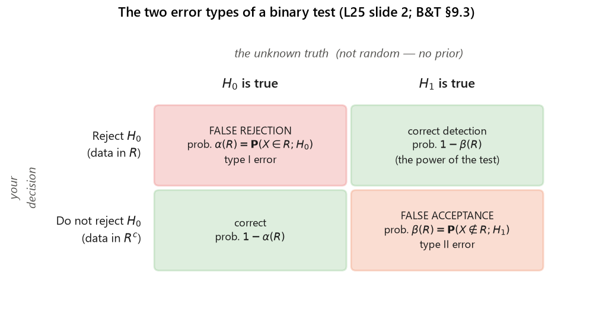
- $\alpha$ is not $\mathbf{P}(H_0\text{ true}\mid\text{rejected})$. That is a posterior probability and needs a prior; you get it from G6 §3, not from here.
- $\alpha$ is not the probability that this particular rejection is a mistake. It is a long-run frequency property of the rule $R$, fixed before the data arrive.
- Not rejecting is not the same as accepting. Failing to reject $H_0$ at level $0.05$ means only that the data are not startling under $H_0$; $H_1$ may still be far more likely. The wording is deliberate in B&T Example 9.15, and so is L25 slide 5's ("$H_0$ not rejected").
Solution
By definition $\alpha(R')=\mathbf{P}(X\in R^c;H_0)=1-\mathbf{P}(X\in R;H_0)=1-0.04=0.96$, using the complement rule inside model $H_0$. Similarly $\beta(R')=\mathbf{P}(X\notin R^c;H_1)=\mathbf{P}(X\in R;H_1)=1-\beta(R)=1-0.30=0.70$.
So $(\alpha,\beta)$ goes from $(0.04,0.30)$ to $(0.96,0.70)$ — both errors get worse, and the sum went from $0.34$ to $1.66$. Complementing a good region gives a bad region; the two errors do not trade off along that direction. (The genuine tradeoff, §4.5, comes from shrinking $R$, not from flipping it.)
Solution
Under $H_0$ the density is $f_X(x;H_0)=1$ on $[0,1]$, so $\alpha=\mathbf{P}(X>0.9;H_0)=\int_{0.9}^{1}1\,dx=0.1$.
Under $H_1$ the density is $f_X(x;H_1)=1/2$ on $[0,2]$, so the power is $\mathbf{P}(X>0.9;H_1)=\int_{0.9}^{2}\tfrac12\,dx=\tfrac{1.1}{2}=0.55$, hence $\beta=1-0.55=0.45$.
Note the asymmetry: $H_1$ is "true" whenever $X>1$, an event of probability $0.5$ that cannot happen under $H_0$ — yet $\beta$ is still $0.45$, because more than half of the $H_1$ probability sits inside $[0,1]$ where the two models overlap. No test can do better than $\beta=0.5$ at $\alpha=0$ here.
4.2 The likelihood ratio test, and where it comes from
Nothing so far tells you which $R$ to use, and there are $2^{|\text{data space}|}$ of them. The lecture writes down the answer in one line (L25 slide 2); B&T §9.3 motivates it by running the Bayesian machinery of G6 §3 and then deleting the prior. That motivation is worth doing in full, because it explains the otherwise mysterious threshold.
The Bayesian rehearsal. Pretend, temporarily, that $\Theta$ is random and takes the two values $\theta_0$ ("$H_0$") and $\theta_1$ ("$H_1$") with prior probabilities $p_\Theta(\theta_0)$ and $p_\Theta(\theta_1)$. G6 §3 says the rule minimizing the probability of error is MAP: declare $\theta_1$ when the posterior at $\theta_1$ exceeds the posterior at $\theta_0$. By Bayes' rule (G3 §3) the two posteriors share the denominator $p_X(x)$, so declaring $\theta_1$ means $$p_\Theta(\theta_1)\,p_{X\mid\Theta}(x\mid\theta_1)\ >\ p_\Theta(\theta_0)\,p_{X\mid\Theta}(x\mid\theta_0).$$ Divide both sides by the positive quantity $p_\Theta(\theta_1)\,p_{X\mid\Theta}(x\mid\theta_0)$ — division by a positive number preserves the inequality — to isolate the data on the left: $$\frac{p_{X\mid\Theta}(x\mid\theta_1)}{p_{X\mid\Theta}(x\mid\theta_0)}\ >\ \frac{p_\Theta(\theta_0)}{p_\Theta(\theta_1)}.$$ The left side depends only on the data; the right side only on the prior. So the optimal Bayesian rule already has the shape "likelihood ratio versus a constant", and that constant is the prior odds in favor of $H_0$.
The classical version now drops the prior and keeps the shape: $\xi$ is a free dial, set by whatever external requirement you care to impose. The lecture's requirement (L25 slide 2) is a target false rejection probability:
Solution
Step 1 — the ratio. $L(x)=\dfrac{2e^{-2x}}{e^{-x}}=2e^{-2x+x}=2e^{-x}$ for $x\ge 0$.
Step 2 — direction. $2e^{-x}$ is strictly decreasing in $x$, so $L(x)>\xi$ is equivalent to $e^{-x}>\xi/2$, i.e. $-x>\ln(\xi/2)$, i.e. $x<\ln(2/\xi)=:c$. The rejection region is a left tail $\{x<c\}$. This is the whole point of doing the algebra rather than guessing: $H_1$ says "the rate is higher", which means "the observations are typically smaller", so small data are the evidence against $H_0$.
Step 3 — calibrate. Under $H_0$, $\mathbf{P}(X<c;H_0)=\int_0^c e^{-x}dx=1-e^{-c}$.
Set $1-e^{-c}=0.05$: $e^{-c}=0.95$, so $c=-\ln 0.95=0.05129329$ (P41_C). The check
$1-e^{-c}=0.05000000$ is P41_ALPHA_CHECK. The equivalent critical value on the ratio
scale is $\xi=2e^{-c}=2(0.95)=1.9$ (P41_XI_EQUIV).
Step 4 — the other error. Under $H_1$,
$\beta=\mathbf{P}(X\ge c;H_1)=\int_c^\infty 2e^{-2x}dx=e^{-2c}=(e^{-c})^2=0.95^2=0.9025$
(P41_BETA).
A $\beta$ of $0.9025$ is dismal: one exponential observation simply cannot distinguish rate $1$ from rate $2$ at the $5\%$ level. Nothing is wrong with the test — the Neyman–Pearson Lemma guarantees no other $5\%$ test does better. The fix is more data, not a cleverer region.
4.3 Worked example: the test on a normal mean (L25 slide 3)
Step 1 — write the two likelihoods. Independence lets us multiply the marginal densities (G3 §2), and each is the $N(\mu,1)$ density $\frac{1}{\sqrt{2\pi}}e^{-(x-\mu)^2/2}$: $$f_X(x;H_1)=\Big(\tfrac{1}{\sqrt{2\pi}}\Big)^{n}\exp\Big\{-\tfrac12\sum_{i=1}^n (x_i-1)^2\Big\}, \qquad f_X(x;H_0)=\Big(\tfrac{1}{\sqrt{2\pi}}\Big)^{n}\exp\Big\{-\tfrac12\sum_{i=1}^n x_i^2\Big\}.$$ Here $x=(x_1,\dots,x_n)$ is the observed vector and $n$ the sample size.
Step 2 — form the ratio. The constants $\big(1/\sqrt{2\pi}\big)^n$ are identical and cancel; the exponentials combine because $e^a/e^b=e^{a-b}$: $$L(x)=\exp\Big\{-\tfrac12\sum_{i=1}^n\big[(x_i-1)^2-x_i^2\big]\Big\}.$$
Step 3 — expand the bracket. $(x_i-1)^2-x_i^2=x_i^2-2x_i+1-x_i^2=-2x_i+1$, so $$-\tfrac12\sum_{i=1}^n(-2x_i+1)=\sum_{i=1}^n x_i-\frac{n}{2}, \qquad\text{hence}\qquad L(x)=\exp\Big\{\sum_{i=1}^n x_i-\frac n2\Big\}.$$ Every $x_i^2$ has vanished: the data enter only through their sum. This is the "algebra" the slide compresses into one word.
Step 4 — take logarithms. $\log$ is strictly increasing, so $L(x)>\xi$ if and only if $\log L(x)>\log\xi$ — the rejection region is unchanged. Thus $$\sum_{i=1}^n x_i-\frac n2>\log\xi \qquad\Longleftrightarrow\qquad \sum_{i=1}^n x_i>\log\xi+\frac n2\ =:\ \xi'.$$ The new symbol $\xi'$ is the threshold expressed on the data scale rather than the likelihood-ratio scale. The two are in one-to-one correspondence, $\xi=e^{\xi'-n/2}$, so calibrating either one calibrates the other.
Step 5 — calibrate $\xi'$ (the "use normal tables" gap). Under $H_0$ each $X_i$ is
$N(0,1)$ and they are independent, so by the sum-of-independent-normals fact (G3 §4) the statistic
$S=\sum_i X_i$ is normal with mean $\sum_i 0=0$ and variance $\sum_i 1=n$; that is,
$S\sim N(0,n)$ and $S/\sqrt n\sim N(0,1)$. Therefore
$$\alpha=\mathbf{P}(S>\xi';H_0)=\mathbf{P}\Big(\frac{S}{\sqrt n}>\frac{\xi'}{\sqrt n}\Big)
=1-\Phi\!\Big(\frac{\xi'}{\sqrt n}\Big),$$
where $\Phi$ is the standard normal CDF. Setting this to $\alpha$ and solving,
$$\boxed{\ \xi'=\sqrt{n}\;z_{1-\alpha}\ },\qquad \Phi(z_{1-\alpha})=1-\alpha .$$
For $\alpha=0.05$, $z_{0.95}=1.6448536$ (Z_0950; the check $1-\Phi(z_{0.95})=0.0500000$
is Z_0950_CHECK_TAIL).
Step 6 — compute $\beta$. Under $H_1$ each $X_i$ is $N(1,1)$, so $S\sim N(n,n)$ — mean $\sum_i 1=n$, variance still $n$. Then $$\beta=\mathbf{P}(S\le\xi';H_1)=\Phi\!\Big(\frac{\xi'-n}{\sqrt n}\Big) =\Phi\!\Big(\frac{\sqrt n\,z_{1-\alpha}-n}{\sqrt n}\Big)=\Phi\big(z_{1-\alpha}-\sqrt n\big).$$ The $n$-dependence has collapsed to a single quantity $\sqrt n$, which is the separation between the two hypotheses measured in standard deviations of the statistic: under $H_0$ the statistic $S/\sqrt n$ is $N(0,1)$, under $H_1$ it is $N(\sqrt n,1)$.
Step 7 — the numbers ($\alpha=0.05$ throughout; keys MEAN_n*_*).
- $n=1$: $\xi'=1.6448536$, $\xi=e^{1.6449-0.5}=3.1419814$, $\beta=\Phi(1.6449-1)=0.7404890$.
- $n=4$: $\xi'=3.2897073$, $\xi=e^{3.2897-2}=3.6317232$, $\beta=\Phi(1.6449-2)=0.3612400$.
- $n=9$: $\xi'=4.9345609$, $\xi=1.5442848$, $\beta=\Phi(1.6449-3)=0.0876855$.
- $n=10$: $\xi'=5.2014839$, $\xi=1.2232165$, $\beta=\Phi(1.6449-3.1623)=0.0645798$.
- $n=25$: $\xi'=8.2242681$, $\xi=0.0139019$, $\beta=\Phi(1.6449-5)=0.0003966$.
An independent Monte-Carlo run of $400\,000$ replications at $n=10$ returns
$\hat\alpha=0.0493725$ and $\hat\beta=0.0649050$ (MEAN_n10_ALPHA_MC,
MEAN_n10_BETA_MC), against the exact $0.05$ and $0.0645798$.
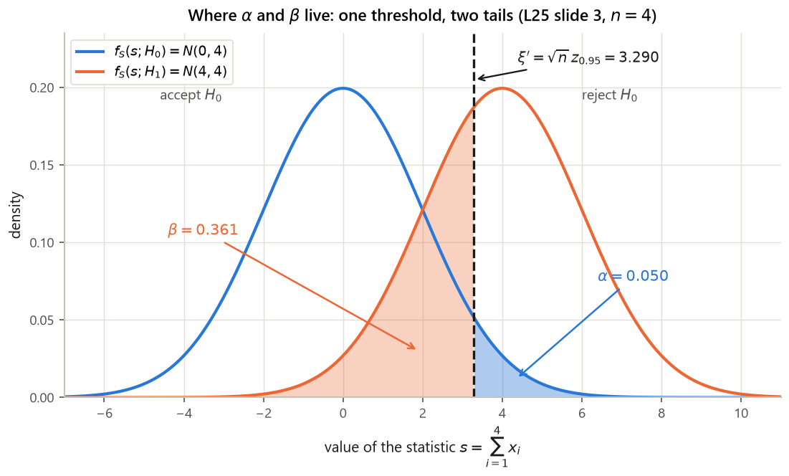
MEAN_n4_XIP, MEAN_n4_BETA).MEAN_NMIN_EXACT), so $n=11$, which delivers
$\beta=0.0472847$ (MEAN_NMIN_BETA05, MEAN_NMIN_BETA05_BETA). This is the
same $(z_{1-\alpha}+z_{1-\beta})^2$ sample-size formula that governs confidence-interval width in
§1 — the two are the same CLT calculation wearing different hats.Solution
The derivation is unchanged up to Step 5; only the quantile changes. $z_{0.99}=2.3263479$
(Z_0990), so
$$\xi'=\sqrt4\,z_{0.99}=2(2.3263479)=4.6526957$$
(P42_XIP).
Since $M_4=\frac14\sum_i X_i$, the equivalent rule is
$M_4>4.6526957/4=1.1631739$ (P42_XBAR).
Then $\beta=\Phi(z_{0.99}-\sqrt4)=\Phi(2.3263479-2)=\Phi(0.3263479)=0.6279194$
(P42_BETA).
Compare with $\alpha=0.05$ at the same $n=4$, where $\beta=0.3612400$. Tightening $\alpha$ from $0.05$ to $0.01$ nearly doubled $\beta$. That is the tradeoff of §4.5 in one line.
Solution
Require $\Phi(z_{0.95}-\sqrt n)\le 0.01$. Since $\Phi$ is increasing and $\Phi(-z_{0.99})=0.01$, this is $z_{0.95}-\sqrt n\le -z_{0.99}$, i.e. $\sqrt n\ge z_{0.95}+z_{0.99}=1.6448536+2.3263479=3.9712015$, i.e. $n\ge 3.9712015^2=15.770$. So $n=16$.
Check at $n=16$: $\beta=\Phi(1.6448536-4)=\Phi(-2.3551464)=0.0092577$
(MEAN_n16_BETA), indeed below $0.01$; and $\xi'=\sqrt{16}\,z_{0.95}=6.5794145$
(MEAN_n16_XIP). At $n=15$ one would get $\sqrt{15}=3.873<3.971$, so $\beta$ would
exceed $0.01$.
4.4 Worked example: the test on a normal variance (L25 slide 4)
Step 1 — likelihoods. The $N(0,\sigma^2)$ density is $\frac{1}{\sigma\sqrt{2\pi}}e^{-x^2/(2\sigma^2)}$. Under $H_1$, $\sigma^2=4$ so $\sigma=2$ — this is what the slide's red "$2$" in $1/(2\sqrt{2\pi})$ and red "$4$" in $2\cdot 4$ are flagging: $$f_X(x;H_1)=\Big(\tfrac{1}{2\sqrt{2\pi}}\Big)^{n}\exp\Big\{-\frac{\sum_i x_i^2}{2\cdot 4}\Big\}, \qquad f_X(x;H_0)=\Big(\tfrac{1}{\sqrt{2\pi}}\Big)^{n}\exp\Big\{-\frac{\sum_i x_i^2}{2}\Big\}.$$
Step 2 — the ratio. The constants no longer cancel; their ratio is
$\big(\tfrac{1}{2\sqrt{2\pi}}\big)^n\big/\big(\tfrac{1}{\sqrt{2\pi}}\big)^n=2^{-n}$. The
exponentials give $e^{a}/e^{b}=e^{a-b}$ with
$a=-\tfrac18\sum_i x_i^2$ and $b=-\tfrac12\sum_i x_i^2$, so
$$L(x)=2^{-n}\exp\Big\{\Big(\tfrac12-\tfrac18\Big)\sum_{i=1}^n x_i^2\Big\}
=2^{-n}\exp\Big\{\tfrac38\sum_{i=1}^n x_i^2\Big\},$$
using $\tfrac12-\tfrac18=\tfrac{4-1}{8}=\tfrac38$ (VAR_n10_38).
Step 3 — logarithms. $\log L(x)=-n\log 2+\tfrac38\sum_i x_i^2$, with
$\log 2=0.6931472$ (VAR_n10_LOG2). So $L(x)>\xi$ becomes
$$\tfrac38\sum_i x_i^2>\log\xi+n\log 2
\qquad\Longleftrightarrow\qquad
\sum_{i=1}^n x_i^2>\tfrac83\big(\log\xi+n\log 2\big)=:\xi' .$$
The coefficient $3/8$ is positive, so multiplying by $8/3$ does not flip the inequality. Again the
data enter through a single scalar — this time the sum of squares, because the hypotheses
differ in spread, not location.
Step 4 — the distribution of $\sum_i X_i^2$ (the "derived distribution problem"). The slide asserts "chi-square"; here is why. Let $Z\sim N(0,1)$ and $Y=Z^2$. By the CDF method of G3 §4, for $y>0$, $$F_Y(y)=\mathbf{P}(Z^2\le y)=\mathbf{P}(-\sqrt y\le Z\le\sqrt y)=2\Phi(\sqrt y)-1,$$ using symmetry of the standard normal. Differentiating and applying the chain rule ($\frac{d}{dy}\sqrt y=\frac{1}{2\sqrt y}$), $$f_Y(y)=2\varphi(\sqrt y)\cdot\frac{1}{2\sqrt y}=\frac{1}{\sqrt{2\pi y}}e^{-y/2},\qquad y>0,$$ which is the Gamma density with shape $1/2$ and rate $1/2$. Sums of independent Gammas with a common rate add their shapes (convolution, G3 §4), so $\sum_{i=1}^n Z_i^2$ is Gamma with shape $n/2$ and rate $1/2$ — which is precisely the definition of the chi-square distribution with $n$ degrees of freedom, written $\chi^2_n$. Its mean is $n$ and its variance $2n$.
Under $H_0$ the $X_i$ are standard normal, so $\sum_i X_i^2\sim\chi^2_n$ exactly and $$\alpha=\mathbf{P}\big(\chi^2_n>\xi';H_0\big)\ \Longrightarrow\ \xi'=\text{the }(1-\alpha)\text{ quantile of }\chi^2_n .$$ Under $H_1$ we can write $X_i=2Z_i$ with $Z_i\sim N(0,1)$, so $\sum_i X_i^2=4\sum_i Z_i^2\sim 4\chi^2_n$, and $$\beta=\mathbf{P}\Big(4\chi^2_n\le\xi'\Big)=\mathbf{P}\Big(\chi^2_n\le\frac{\xi'}{4}\Big).$$
Step 5 — numbers at $\alpha=0.05$ (keys VAR_n*_*):
- $n=1$: $\xi'=3.8414588$, $\xi=2.1115027$, $\beta=\mathbf{P}(\chi^2_1\le 0.9603647)=0.6729050$.
- $n=5$: $\xi'=11.0704977$, $\xi=1.9851624$, $\beta=0.2642423$.
- $n=10$: $\xi'=18.3070381$, $\xi=0.9358196$, $\beta=\mathbf{P}(\chi^2_{10}\le 4.5767595)=0.0823981$.
- $n=25$: $\xi'=37.6524841$, $\xi=0.0403971$, $\beta=0.0020439$.
Monte Carlo at $n=10$ with $400\,000$ replications: $\hat\alpha=0.0502200$,
$\hat\beta=0.0822025$ (VAR_n10_ALPHA_MC, VAR_n10_BETA_MC) against the
exact $0.05$ and $0.0823981$. The $n=10$ entry is the promised example of a legitimate test with
$\xi=0.9358196<1$.
Solution
Validity first: $12>11.0704977$, and $\mathbf{P}(\chi^2_5>t)$ is decreasing in $t$, so the
new region has $\alpha<0.05$. Exactly,
$\alpha_{\text{new}}=\mathbf{P}(\chi^2_5>12)=0.0347878$ (P44_ALPHA_12). It is a
valid (conservative) $5\%$-level test — it simply spends only $3.48\%$ of the $5\%$ it was allowed.
Cost: raising the threshold shrinks $R$, so $\beta$ rises. Exactly,
$\beta_{\text{new}}=\mathbf{P}(\chi^2_5\le 12/4)=\mathbf{P}(\chi^2_5\le 3)=0.3000142$
(P44_BETA_12), against
$\beta_{\text{old}}=\mathbf{P}(\chi^2_5\le 2.7676244)=0.2642423$. Since $3>2.7676$, the new
$\beta$ is strictly larger — $0.300$ versus $0.264$, a $13.5\%$ relative increase in the missed
detection rate, bought with $1.5$ percentage points of unused significance level.
Moral: any threshold above the calibrated one is "safe" but wasteful — it throws away detection power in exchange for a false rejection probability you never asked for. This is the discrete-case compromise of §4.5 arising in continuous clothing.
4.5 The tradeoff, and what changes when $L(X)$ is discrete
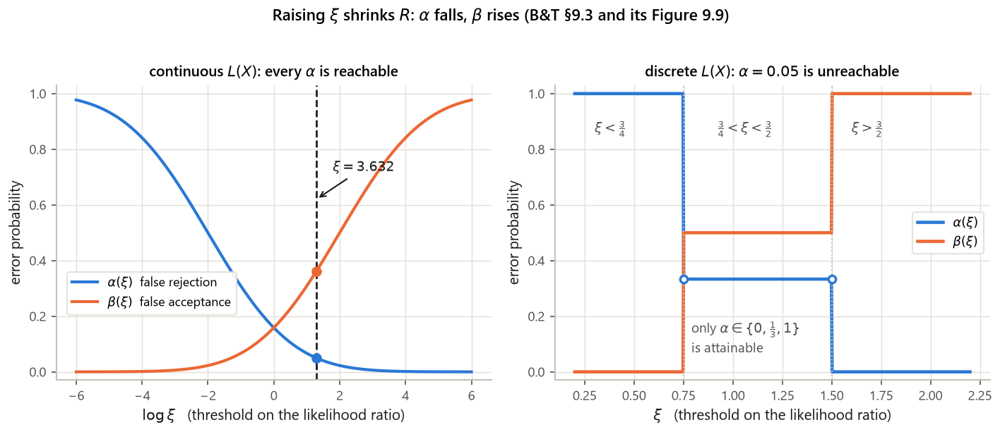
First check $H_1$ is a legitimate PMF: $2\cdot\tfrac14+4\cdot\tfrac18=\tfrac12+\tfrac12=1$
(DIE10_H1_CHECK). The likelihood ratio takes just two values:
$$L(x)=\frac{1/4}{1/6}=\frac{6}{4}=\frac32=1.5\ \ (x=1,2),\qquad
L(x)=\frac{1/8}{1/6}=\frac68=\frac34=0.75\ \ (x=3,4,5,6),$$
keys DIE10_L_HI, DIE10_L_LO. Because $L$ has only two values, the
condition $L(x)>\xi$ produces only three distinct regions:
- $\xi<3/4$: every $x$ satisfies $L(x)>\xi$, so $R=\{1,\dots,6\}$ — always reject. $\alpha=1$, $\beta=0$.
- $3/4<\xi<3/2$: only $x\in\{1,2\}$ qualifies, $R=\{1,2\}$. Then
$\alpha=\mathbf{P}(X\in\{1,2\};H_0)=\tfrac16+\tfrac16=\tfrac13=0.3333333$ and
$\beta=\mathbf{P}(X\in\{3,4,5,6\};H_1)=4\cdot\tfrac18=\tfrac12=0.5$
(
DIE10_ALPHA_MID,DIE10_BETA_MID). - $\xi>3/2$: no $x$ qualifies, $R=\varnothing$ — never reject. $\alpha=0$, $\beta=1$.
Only the middle regime is a test at all; the other two ignore the data entirely. And the attainable significance levels are $\{0,\ 1/3,\ 1\}$ — the customary $\alpha=0.05$ is unreachable.
- Be conservative. Take the smallest $\xi$ with $\mathbf{P}(L(X)>\xi;H_0)\le\alpha$. You get a valid level-$\alpha$ test whose true false rejection probability is below target. This is the standard choice and the one used below.
- Settle for approximate equality, accepting an $\alpha$ slightly above target if that is much closer.
- Randomize: flip an auxiliary coin to choose between the two neighbouring thresholds, hitting $\alpha$ exactly. Theoretically tidy, essentially never used, since it means two statisticians with the same data can reach different conclusions.
Let $K$ be the number of rolls landing in $\{1,2\}$. Because the rolls are independent, the joint
likelihood ratio is the product of the per-roll ratios, and each roll contributes $3/2$ if it lands
in $\{1,2\}$ and $3/4$ otherwise:
$$L(x_1,\dots,x_4)=\Big(\tfrac32\Big)^{K}\Big(\tfrac34\Big)^{4-K}
=\Big(\tfrac34\Big)^{4}\Big(\tfrac{3/2}{3/4}\Big)^{K}=\frac{81}{256}\,2^{K}.$$
This is strictly increasing in $K$, so "$L>\xi$" is equivalent to "$K\ge k$" for a suitable
integer $k$: the four-dimensional data have been reduced to one integer. The five values are
$L=0.3164063,\,0.6328125,\,1.2656250,\,2.5312500,\,5.0625000$ for $K=0,\dots,4$
(DIE10N4_L_k0…DIE10N4_L_k4).
Under $H_0$ a roll lands in $\{1,2\}$ with probability $2/6=1/3$, so $K\sim\text{Bin}(4,1/3)$;
under $H_1$ with probability $2\cdot\tfrac14=1/2$, so $K\sim\text{Bin}(4,1/2)$
(DIE10N4_P0, DIE10N4_P1). Hence, with
$\alpha_k=\mathbf{P}(K\ge k;H_0)$ and $\beta_k=\mathbf{P}(K<k;H_1)$:
- $k=0$ (always reject): $\alpha=1$, $\beta=0$.
- $k=1$: $\alpha=0.8024691$, $\beta=0.0625000$.
- $k=2$: $\alpha=0.4074074$, $\beta=0.3125000$.
- $k=3$: $\alpha=0.1111111$, $\beta=0.6875000$.
- $k=4$: $\alpha=0.0123457=(1/3)^4$, $\beta=0.9375000=1-(1/2)^4$.
(Keys DIE10N4_ALPHA_K*, DIE10N4_BETA_K*; the $k=4$ entries are
confirmed in exact rational arithmetic as DIE10N4_ALPHA_K4_EXACT and
DIE10N4_BETA_K4_EXACT.) At a target $\alpha=0.05$, Recipe option 1 selects $k=4$:
reject only if all four rolls land in $\{1,2\}$, giving true $\alpha=0.0123457$ and a brutal
$\beta=0.9375$. Four rolls are simply not enough evidence.
Step 1 — the ratio. Both PMFs are binomial with the same $\binom{25}{k}$, which cancels: $$L(k)=\frac{\binom{n}{k}\theta_1^{k}(1-\theta_1)^{n-k}}{\binom{n}{k}\theta_0^{k}(1-\theta_0)^{n-k}} =\Big(\frac{\theta_1}{\theta_0}\Big)^{k}\Big(\frac{1-\theta_1}{1-\theta_0}\Big)^{n-k} =\Big(\frac{4}{3}\Big)^{k}\Big(\frac{2}{3}\Big)^{25-k}.$$ Pull out $(2/3)^{25}$ and note $\tfrac43\cdot\tfrac32=2$: $$L(k)=\Big(\tfrac23\Big)^{25}\Big(\tfrac43\cdot\tfrac32\Big)^{k}=2^{k}\Big(\tfrac23\Big)^{25},$$ exactly the book's form. Since $2^k$ increases in $k$, $L(k)>\xi$ is equivalent to $k>\gamma$ for a suitable $\gamma$: reject $H_0$ if $X>\gamma$.
Step 2 — calibrate exactly. We need the smallest integer $\gamma$ with
$\mathbf{P}(X>\gamma;H_0)\le 0.1$, where $X\sim\text{Bin}(25,1/2)$. The tail probabilities
(E914_TAIL_g*) are
$$\mathbf{P}(X>14)=0.2121781,\quad \mathbf{P}(X>15)=0.1147615,\quad
\mathbf{P}(X>16)=0.0538761,\quad \mathbf{P}(X>17)=0.0216426.$$
The first value at or below $0.1$ is at $\gamma=16$, matching the book. The achieved level is
$\alpha=0.0538761$, comfortably under target, and the corresponding critical likelihood ratio is
$L(16)=2^{16}(2/3)^{25}=2.5953651$ (E914_LR_AT_K). The resulting
$\beta=\mathbf{P}(X\le 16;H_1)=0.4624211$ with $X\sim\text{Bin}(25,2/3)$
(E914_BETA_AT16).
Step 3 — the CLT shortcut, and its trap. Under $H_0$, $\mathbb{E}[X]=25(0.5)=12.5$ and
$\operatorname{var}(X)=25(0.5)(0.5)=6.25$, so the standard deviation is $2.5$
(E914_MEAN_H0, E914_SD_H0). The CLT (G6 §2) gives
$$0.1=\mathbf{P}(X>\gamma;H_0)\approx\mathbf{P}\Big(Z>\frac{\gamma-12.5}{2.5}\Big)
\Longrightarrow \frac{\gamma-12.5}{2.5}=z_{0.90}=1.2815516
\Longrightarrow \gamma=12.5+2.5(1.2815516)=15.7038789,$$
(E914_GAMMA_CLT), the book's $15.7$. Rounding "reject if $X>15.7$" to the integer
grid gives "reject if $X>15$" — but that region has exact level
$\mathbf{P}(X>15;H_0)=0.1147615>0.1$ (E914_ALPHA_AT15). The approximation
overshot the constraint.
E914_BETA_AT15) but it is bought with a
level you did not agree to.Solution
Ratio. $L(k)=\dfrac{e^{-5}5^k/k!}{e^{-2}2^k/k!}=e^{-3}\Big(\dfrac52\Big)^{k}$. The
factorials cancel. Consecutive ratios satisfy $L(k+1)/L(k)=5/2=2.5>1$
(P43_LR_RATIO), so $L$ is strictly increasing in $k$ and $L(k)>\xi$ is equivalent
to $k>\gamma$.
Calibrate. With $X\sim\text{Poisson}(2)$: $\mathbf{P}(X>4)=0.0526530$
(P43_TAIL_k4) and $\mathbf{P}(X>5)=0.0165636$ (P43_TAIL_k5). The
first tail at or below $0.05$ is at $\gamma=5$, so reject $H_0$ iff $X\ge 6$, with achieved
$\alpha=0.0165636$ (P43_GAMMA, P43_ALPHA).
The other error. $\beta=\mathbf{P}(X\le 5;H_1)$ with $X\sim\text{Poisson}(5)$, which is
$0.6159607$ (P43_BETA).
Note how much level is wasted: we wanted $0.05$ and got $0.0166$, because the Poisson tail jumps by a factor of three between $k=4$ and $k=5$. That waste is paid for in $\beta$. One observation again buys very little.
4.6 Neyman–Pearson optimality, and the ROC picture
So far the LRT is only "the shape a Bayesian rule would have". The following lemma says it is the best possible shape, full stop.
Justification (B&T's argument, every step). Fabricate a Bayesian problem whose MAP rule is exactly this LRT. Choose prior probabilities in the ratio $$\frac{p_\Theta(\theta_0)}{p_\Theta(\theta_1)}=\xi, \qquad\text{i.e.}\qquad p_\Theta(\theta_0)=\frac{\xi}{1+\xi},\quad p_\Theta(\theta_1)=\frac{1}{1+\xi},$$ which is a legitimate prior since $\xi>0$ makes both entries positive and they sum to $\frac{\xi+1}{1+\xi}=1$. By the Bayesian rehearsal of §4.2, the MAP rule for this prior declares $H_1$ exactly when $L(x)>\xi$ — it is $R_\xi$.
Now, in this fabricated Bayesian world, any decision rule with rejection region $R$ has overall error probability $$\mathbf{P}(\text{error})=p_\Theta(\theta_0)\,\mathbf{P}(X\in R;H_0) +p_\Theta(\theta_1)\,\mathbf{P}(X\notin R;H_1) =\frac{\xi}{1+\xi}\,\alpha(R)+\frac{1}{1+\xi}\,\beta(R),$$ by the total probability theorem (G1 §2) splitting on which hypothesis is true. G6 §3 says MAP minimizes this quantity over all rules. Applying that to $R_\xi$ versus an arbitrary $R$: $$\frac{\xi}{1+\xi}\alpha+\frac{1}{1+\xi}\beta\ \le\ \frac{\xi}{1+\xi}\alpha(R)+\frac{1}{1+\xi}\beta(R).$$ Multiply through by $1+\xi>0$ and rearrange: $$\beta-\beta(R)\ \le\ \xi\big(\alpha(R)-\alpha\big).$$ If the competitor satisfies $\alpha(R)\le\alpha$, the right side is $\le 0$, so $\beta\le\beta(R)$ — the claim. If moreover $\alpha(R)<\alpha$, the right side is strictly negative and $\beta<\beta(R)$. $\blacksquare$
ROC_AUC_FORM_d_sqrt10,
ROC_AUC_QUAD_d_sqrt10).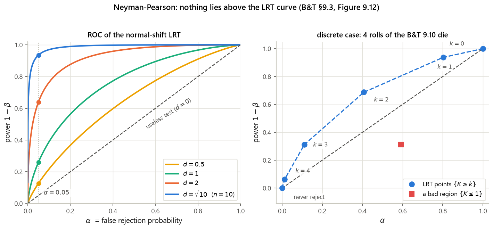
ROC_d*_POW05). Right: with discrete data (Example 4.4) only finitely many points exist. The red square is the region $\{K\le 1\}$ — the wrong tail — which lands below the diagonal: it is worse than tossing a coin, and Neyman–Pearson guarantees no region can rise above the blue frontier (B&T §9.3 and its Figure 9.12).The LRT. By the computation of Example 4.1 with $n=2$ and mean shift $2$:
$$L(x)=\frac{\exp\{-[(x_1-2)^2+(x_2-2)^2]/2\}}{\exp\{-[x_1^2+x_2^2]/2\}}
=\exp\{2(x_1+x_2)-4\},$$
since $(x_i-2)^2-x_i^2=-4x_i+4$ and $-\tfrac12\sum_i(-4x_i+4)=2(x_1+x_2)-4$. So the test is
$x_1+x_2>\gamma$ with $\gamma=(4+\log\xi)/2$. Under $H_0$, $X_1+X_2\sim N(0,2)$, so
$$\gamma=\sqrt2\,z_{0.95}=\sqrt2(1.6448536)=2.3261743$$
(E913_GAMMA), the book's $2.33$. Under $H_1$, $X_1+X_2\sim N(4,2)$, so
$$\beta=\mathbf{P}(X_1+X_2\le\gamma;H_1)=\Phi\Big(\frac{2.3261743-4}{\sqrt2}\Big)
=\Phi(-1.1835735)=0.1182910,$$
the book's $0.12$ (E913_BETA_LRT, E913_BETA_LRT_ARG).
The competitor. Take $R'=\{\max\{x_1,x_2\}>\zeta\}$. Under $H_0$, using independence
and the fact that a maximum is at most $\zeta$ iff both coordinates are,
$$0.05=1-\mathbf{P}(X_1\le\zeta;H_0)\mathbf{P}(X_2\le\zeta;H_0)=1-\Phi(\zeta)^2
\Longrightarrow \Phi(\zeta)=\sqrt{0.95}=0.9746794
\Longrightarrow \zeta=1.9545083$$
(E913_SQRT095, E913_ZETA). Under $H_1$ each $X_i-2$ is standard normal,
so
$$\beta'=\mathbf{P}(\max\le\zeta;H_1)=\big(\Phi(\zeta-2)\big)^2=\big(\Phi(-0.0454917)\big)^2
=(0.4818577)^2=0.2321868$$
(E913_BETA_MAX, E913_BETA_MAX_INNER).
Verdict. At the same $\alpha=0.05$, the LRT misses a true $H_1$ $11.8\%$ of the time; the
max-test misses it $23.2\%$ of the time — nearly twice as often. Monte Carlo over $400\,000$
replications gives $\hat\alpha=0.0500225$, $\hat\beta=0.1183825$ for the LRT and
$\hat\alpha=0.0501525$, $\hat\beta=0.2316850$ for the max-test
(E913_*_MC), confirming both. The max-test wastes evidence: it throws away the smaller
observation entirely, whereas the sum uses both.
A note on the book's arithmetic. B&T report $\zeta=1.96$ and $\beta'=0.24$. Carrying
full precision, $\zeta=1.9545083$ and $\beta'=0.2321868$; even with the book's $\zeta=1.96$ the
exact value is $\Phi(-0.04)^2=0.2343011$ (E913_BOOK_BETA_MAX_ROUND). The book's $0.24$
comes from rounding $\Phi(-0.04)$ to $0.49$ in the tables. This is table-rounding, not a
disagreement: the conclusion ($0.12$ versus roughly $0.23$–$0.24$) is unaffected.
Solution
Calibrate. Under $H_0$, $S=\sum_i X_i\sim N(0,10)$, so
$\mathbf{P}(|S|>c;H_0)=2\big(1-\Phi(c/\sqrt{10})\big)=0.05$ gives
$\Phi(c/\sqrt{10})=0.975$, hence $c=\sqrt{10}\,z_{0.975}=\sqrt{10}(1.9599640)=6.1979503$
(MEAN_n10_TWOSIDED_C).
The other error. Under $H_1$, $S\sim N(10,10)$, so
$$\beta=\mathbf{P}(-c\le S\le c;H_1)
=\Phi\Big(\frac{6.1979503-10}{\sqrt{10}}\Big)-\Phi\Big(\frac{-6.1979503-10}{\sqrt{10}}\Big)
=0.1146209$$
(MEAN_n10_TWOSIDED_BETA).
Compare. The LRT at the same level has $\beta=0.0645798$. The two-sided region is $77\%$ worse. Neyman–Pearson predicted this before any arithmetic: the region $\{|S|>c\}$ is not of the form $\{L(X)>\xi\}$, because $L$ is increasing in $S$ and therefore its super-level sets are right rays, never unions of two rays.
Moral. "Being safe in both directions" is only a virtue when $H_1$ actually lives in both directions. Here $H_1$ says the mean is $+1$, period; guarding against $-1$ spends $2.5\%$ of the level on an alternative that is not on the table.
The LRT threshold explorer
The two things you can change in a binary test are how far apart the hypotheses are (the separation $d$, which for the normal-mean test of Example 4.1 equals $\sqrt n$) and where you put the threshold. The widget below puts both on sliders. In the density view, the blue shaded area is $\alpha$ and the orange shaded area is $\beta$; in the ROC view, the marker is the operating point your threshold selects on the Neyman–Pearson frontier.
4.7 Composite hypotheses and significance testing (L25 slide 5)
Real questions are rarely two-sided coin flips between fully specified models. "Is my coin fair?" pits $H_0:\theta=1/2$ against $H_1:\theta\neq 1/2$ — and $H_1$ is composite: it is a whole family of distributions, one for each $\theta\neq 1/2$, including $\theta=0.4999$, which no finite experiment can separate from $1/2$. There is no likelihood ratio to compute, because there is no single $p_X(x;H_1)$. The methodology shifts.
- Choose a statistic $S=h(X_1,\dots,X_n)$ — one scalar summarizing the data in the direction where $H_0$ would fail.
- Choose the shape of the rejection region as a function of an undetermined critical value $\xi$: e.g. $|S-\mathbb{E}[S;H_0]|>\xi$ (two-sided) or $S>\xi$ (one-sided).
- Choose the significance level $\alpha$ (conventionally $0.10$, $0.05$, $0.01$).
- Solve for $\xi$ from $\mathbf{P}(\text{reject }H_0;H_0)=\alpha$. This is the only calculation, and it needs the distribution of $S$ under $H_0$ only — which is why $H_0$ must be simple, and why the CLT is so useful here.
Steps 1–3. The statistic is $S=X_1+\dots+X_n$, the number of heads ($X_i=1$ for heads); the region shape is $|S-n/2|>\xi$, symmetric because under $H_0$ the distribution of $S$ is symmetric about $n/2$ and deviations in either direction are equally damning; the level is $\alpha=0.05$.
Step 4 — solve for $\xi$. Under $H_0$, $S\sim\text{Bin}(1000,1/2)$, so
$$\mathbb{E}[S;H_0]=n\theta=1000(0.5)=500,\qquad
\operatorname{var}(S;H_0)=n\theta(1-\theta)=1000(0.5)(0.5)=250,$$
giving standard deviation $\sqrt{250}=15.8113883$ (COIN_MEAN, COIN_SD).
By the CLT (G6 §2), $(S-500)/15.8113883$ is approximately standard normal, so
$$0.95=\mathbf{P}(|S-500|\le\xi;H_0)\approx
\mathbf{P}\Big(|Z|\le\frac{\xi}{15.8113883}\Big)=2\Phi\Big(\frac{\xi}{15.8113883}\Big)-1 .$$
Hence $\Phi(\xi/15.8113883)=0.975$, so $\xi/15.8113883=z_{0.975}=1.9599640$ and
$$\xi=1.9599640\times 15.8113883=30.9897516\ \approx\ 31$$
(COIN_196SD) — the slide's $\xi=31$, now derived rather than asserted. The rejection
region is therefore $\{|s-500|>31\}$, and because $S$ is integer-valued that is
$$\{s\le 468\}\cup\{s\ge 532\}\qquad\text{i.e. reject iff } |s-500|\ge 32 .$$
Note which way the rounding went. Sliding the boundary one step outward gives
$\{s\le 469\}\cup\{s\ge 531\}$ — a larger region, which is the $\xi=30$ test of the next
paragraph and busts the $5\%$ budget. The Gotcha of §4.5 (never round a CLT critical value toward a
bigger region) applies verbatim.
Sanity check against the exact binomial. Summing the binomial PMF exactly,
$\mathbf{P}(|S-500|\le 31;H_0)=0.9537088$, so the true level of the $\xi=31$ test is
$\alpha=0.0462912$ (COIN_EXACT_COVER_31, COIN_EXACT_ALPHA_31) — slightly
conservative, as integrality forces. Using $\xi=30$ instead would give coverage $0.9463222$, i.e.
$\alpha=0.0536778$, overshooting. So $31$ is the right integer.
The decision. $|s-500|=|472-500|=28$, and $28\le 31$, so $H_0$ is not rejected at the
$5\%$ level (COIN_OBS_DEV).
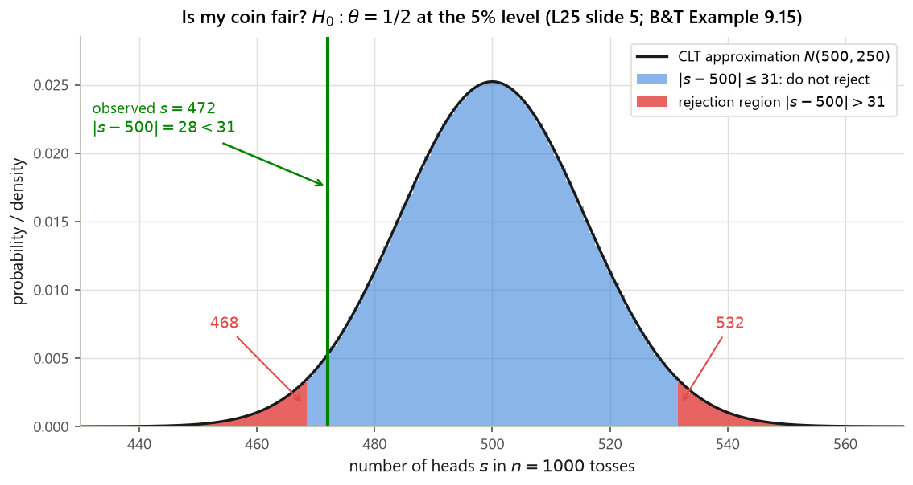
COIN_PVALUE_EXACT); the CLT with continuity correction gives $0.0819903$
(COIN_PVALUE_CC) and without it $0.0765814$ (COIN_PVALUE_CLT). Since
$0.082>0.05$, $H_0$ survives at the $5\%$ level — but it would not survive at the
$10\%$ level.COIN_POWER_*):
$$\theta=0.52:\ 0.2339654,\qquad \theta=0.55:\ 0.8801172,\qquad \theta=0.60:\ 0.9999943 .$$
Against a genuinely, badly biased coin the test is nearly certain to fire. But against a mildly
biased one ($\theta=0.52$) it fires less than a quarter of the time. So "not rejected" here means
"the coin is not grossly biased", not "the coin is fair" — exactly the reading B&T insist on
when they refuse to write "accepted".Solution
Only the quantile changes: $z_{0.995}=2.5758293$, so $\xi=2.5758293\times 15.8113883=40.7301685$, i.e. reject iff $|s-500|>41$ (rounding up to stay at or below the $1\%$ level). The observed $|472-500|=28$ is far inside, so again not rejected — as it must be, since a test at a smaller $\alpha$ has a smaller rejection region, so anything not rejected at $5\%$ is not rejected at $1\%$ either.
The $1\%$ test is conservative about false rejection specifically: it protects $H_0$ harder. It is correspondingly worse at detecting a biased coin — its $\beta$ against every alternative is larger. "Conservative" always names a direction; here it is the null's direction.
Solution
The rejection region at sample size $n$ is $|S-n/2|>z_{0.975}\sqrt{n/4}$. Under
$\theta$, $S$ is approximately $N\big(n\theta,\,n\theta(1-\theta)\big)$, so the power is
$$1-\Big[\Phi\Big(\tfrac{c-n(\theta-0.5)}{\sqrt{n\theta(1-\theta)}}\Big)
-\Phi\Big(\tfrac{-c-n(\theta-0.5)}{\sqrt{n\theta(1-\theta)}}\Big)\Big],\qquad c=z_{0.975}\sqrt{n/4}.$$
Scanning $n$ in steps of $100$ (P46_NSTAR) the requirement is first met at
$n=5000$, where the power is $0.8076207$ (P46_POWER_AT_NSTAR). For comparison, the
lecture's $n=1000$ has power only $0.2439611$ (P46_POWER_AT_1000) — normal
approximation, using the same formula at $n=1000$; the exact binomial value for the integer region
$\{s\le 468\}\cup\{s\ge 532\}$ is $0.2339654$, quoted after Example 4.7.
Five times the data for a bias of two percentage points. Detecting small departures is expensive, and the cost grows like the inverse square of the departure — the same $1/\sqrt n$ law that sets confidence-interval widths in §1.
4.8 Goodness of fit: solving the lecture's two open problems (L25 slides 6–7)
Slides 6 and 7 pose two questions and answer neither. Slide 6 sets up "is my die fair?" with a statistic $T$ and a threshold $\xi$ but supplies no data, no $\xi$, and no verdict. Slide 7 poses "do I have the correct pdf?", defines $D_n$ and quotes the single critical value $\mathbf{P}(\sqrt n\,D_n\ge 1.36)\approx 0.05$ — but works no example: no data, no bin choice, no computed $D_n$, no decision, and no derivation of where $1.36$ comes from. We solve both completely.
Where the chi-square statistic comes from
The setup: a random variable takes values in $\{1,\dots,m\}$ with unknown PMF $\theta=(\theta_1,\dots,\theta_m)$. We draw $n$ independent samples and let $N_k$ be the number of times outcome $k$ occurred, so $N_1+\dots+N_m=n$. The hypotheses are $$H_0:\ \theta=\theta^*=(\theta_1^*,\dots,\theta_m^*),\qquad H_1:\ \theta\neq\theta^*,$$ with $H_1$ composite. The device of B&T §9.4 is the generalized likelihood ratio: replace the unavailable $p_X(x;H_1)$ by the largest likelihood achievable under any $\theta$, i.e. the maximum likelihood fit of §2.
Step 1 — ML over the multinomial. The observation $(n_1,\dots,n_m)$ has multinomial PMF $p_X(x;\theta)=c\,\theta_1^{n_1}\cdots\theta_m^{n_m}$, where $c=n!/(n_1!\cdots n_m!)$ does not involve $\theta$. Take logarithms and eliminate $\theta_m=1-\theta_1-\dots-\theta_{m-1}$: $$\log p_X(x;\theta)=\log c+n_1\log\theta_1+\dots+n_{m-1}\log\theta_{m-1} +n_m\log(1-\theta_1-\dots-\theta_{m-1}).$$ Differentiate with respect to $\theta_k$ ($k\le m-1$) and set to zero: $$\frac{n_k}{\theta_k}-\frac{n_m}{1-\theta_1-\dots-\theta_{m-1}}=0 \quad\Longrightarrow\quad \frac{n_k}{\theta_k}=\frac{n_m}{\theta_m}.$$ So all the ratios $n_k/\theta_k$ are equal — call the common value $\lambda$. Then $n_k=\lambda\theta_k$ for every $k$; summing over $k$ gives $n=\lambda\cdot 1$, so $\lambda=n$ and $$\hat\theta_k=\frac{n_k}{n},\qquad k=1,\dots,m,$$ the empirical frequencies. (Unsurprising, and reassuring: ML says "believe what you saw".)
Step 2 — the generalized ratio. Compare the best $H_1$-compatible model to $H_0$: $$\frac{p_X(x;\hat\theta)}{p_X(x;\theta^*)} =\frac{c\prod_k(n_k/n)^{n_k}}{c\prod_k(\theta_k^*)^{n_k}} =\prod_{k=1}^m\Big(\frac{n_k}{n\theta_k^*}\Big)^{n_k},$$ and reject $H_0$ when this exceeds $\xi$. Taking logarithms turns the product into the statistic $$S=\sum_{k=1}^m N_k\log\Big(\frac{N_k}{n\theta_k^*}\Big),\qquad \text{reject } H_0 \text{ iff } S>\log\xi .$$ (Convention: $0\log 0=0$.)
Step 3 — the second-order approximation. $S$ has no tabulated distribution, but for large $n$ the observed frequencies are close to $\theta^*$ under $H_0$, so a Taylor expansion is accurate. For $y$ near $y^*>0$, $$y\log\frac{y}{y^*}\approx (y-y^*)+\frac{(y-y^*)^2}{2y^*},$$ (the first-order term of $\log(y/y^*)$ times $y$, expanded to second order). Substituting $y=N_k$, $y^*=n\theta_k^*$ and summing over $k$, the linear terms telescope away because $\sum_k N_k=n=\sum_k n\theta^*_k$, leaving $$S\approx\frac12\sum_{k=1}^m\frac{(N_k-n\theta_k^*)^2}{n\theta_k^*}=\frac{T}{2}, \qquad\text{where}\qquad \boxed{\ T=\sum_{k=1}^m\frac{(N_k-n\theta_k^*)^2}{n\theta_k^*}\ }$$ is the chi-square statistic of L25 slide 6: a sum of (observed $-$ expected)$^2$/expected.
Step 4 — the null distribution and the degrees of freedom (the count the slide omits). Write $W_k=(N_k-n\theta_k^*)/\sqrt{n\theta_k^*}$, so that $T=\sum_k W_k^2$. It is tempting to say "each $W_k$ is standard normal by the CLT, so $T$ is a sum of $m$ squared standard normals, minus one for the constraint $\sum_k N_k=n$" — but that first clause is false, and worth getting right. Marginally $N_k\sim\text{Bin}(n,\theta_k^*)$, so $$\mathbb{E}[N_k;H_0]=n\theta_k^*,\qquad \operatorname{var}(N_k;H_0)=n\theta_k^*(1-\theta_k^*),$$ and the multivariate CLT gives $W_k\to N(0,\,1-\theta_k^*)$, not $N(0,1)$. The correct statement is about the whole vector at once: $W=(W_1,\dots,W_m)$ converges to a multivariate normal with mean zero and covariance matrix $$\Sigma=I-\sqrt{\theta^*}\,\sqrt{\theta^*}^{\!\top},\qquad \sqrt{\theta^*}=\big(\sqrt{\theta_1^*},\dots,\sqrt{\theta_m^*}\big)^{\!\top},$$ whose diagonal entries are indeed $1-\theta_k^*$ and whose off-diagonal entries $-\sqrt{\theta_j^*\theta_k^*}$ encode the constraint. Since $\sqrt{\theta^*}$ is a unit vector ($\sum_k\theta_k^*=1$), $\Sigma$ is the orthogonal projection onto the hyperplane perpendicular to $\sqrt{\theta^*}$ — an idempotent matrix of rank $m-1$. The squared norm of a mean-zero Gaussian with a rank-$r$ projection covariance is exactly $\chi^2_r$ (rotate coordinates: $r$ of them are i.i.d. $N(0,1)$ and the remaining $m-r$ are identically zero). Hence $$T=\|W\|^2\ \xrightarrow{\ \text{approx}\ }\ \chi^2_{m-1}\quad\text{under } H_0 ,$$ and the same holds for $2S$. For a die, $m=6$ and the degrees of freedom are $6-1=5$. The "one constraint" bookkeeping gives the right answer; the projection is the right reason, and it is what makes $\mathbb{E}[T]=m-1$ and $\operatorname{var}(T)=2(m-1)$ come out — for the die, $5$ and $10$, matching the Monte-Carlo check below.
Step 1 — expected counts. $n\theta_k^*=600\cdot\tfrac16=100$ for every face
(DIE_EXPECTED). All six are far above $5$, so the approximation is safe. Note the
counts sum to $600$, as they must.
Step 2 — the statistic, term by term (keys DIE_TERM_1…DIE_TERM_6):
$$\frac{(92-100)^2}{100}=\frac{64}{100}=0.64,\qquad
\frac{(120-100)^2}{100}=\frac{400}{100}=4.00,\qquad
\frac{(88-100)^2}{100}=\frac{144}{100}=1.44,$$
$$\frac{(98-100)^2}{100}=\frac{4}{100}=0.04,\qquad
\frac{(95-100)^2}{100}=\frac{25}{100}=0.25,\qquad
\frac{(107-100)^2}{100}=\frac{49}{100}=0.49 .$$
Summing: $T=0.64+4.00+1.44+0.04+0.25+0.49=6.86$ (DIE_T, cross-checked by
scipy.stats.chisquare as DIE_T_SCIPY). The face-$2$ term alone contributes
$4.00$, well over half of $T$.
Step 3 — the critical value. With $m-1=5$ degrees of freedom, the $95$th percentile of
$\chi^2_5$ is $\xi=11.0704977$ (DIE_CRIT_05), the book's $11.1$.
Step 4 — the verdict. $T=6.86<11.07$, so $H_0$ is not rejected at the $5\%$
level: these counts are entirely ordinary for a fair die. The p-value is
$\mathbf{P}(\chi^2_5>6.86)=0.2312622$ (DIE_PVALUE) — roughly one fair die in four
produces data at least this uneven.
Cross-checks. (i) The exact generalized log-likelihood-ratio statistic:
$$S=\sum_k n_k\log\frac{n_k}{100}
=-7.6711080+21.8785868-11.2493367-1.9798653-4.8728630+7.2394754=3.3448892,$$
so $2S=6.6897784$ (DIE_S, DIE_2S, terms DIE_SLOG_*) — the
book's $6.68$, and within $3\%$ of $T=6.86$, exactly as the Taylor argument of Step 3 predicts. Its
p-value is $0.2447529$. (ii) A direct Monte-Carlo simulation of $200\,000$ fair-die experiments of
$600$ rolls gives an empirical $95$th percentile of $T$ equal to $11.08$ against the theoretical
$11.07$, an empirical p-value of $0.2301050$ against $0.2312622$, and empirical mean and variance
$5.0000891$ and $10.0125251$ against the theoretical $\text{df}=5$ and $2\,\text{df}=10$
(DIE_MC_*). The chi-square approximation is excellent here.
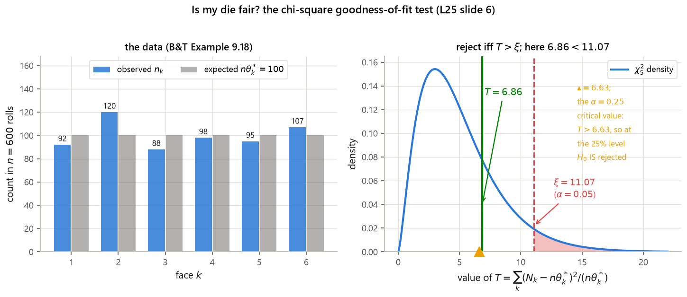
DIE_CRIT_25) — at the $25\%$ significance level the same data would reject $H_0$, which is the honest way of saying $T=6.86$ is mildly but not decisively unusual (L25 slide 6; B&T Example 9.18).Continuous data: binning, and the Kolmogorov–Smirnov test
Route A — bin and run chi-square. Partition the real line into $m$ bins. Under $H_0$ the probability of bin $k$ is $\theta^*_k=\Phi(b_k)-\Phi(b_{k-1})$, computed from the hypothesized CDF, so the expected incidence is $n\theta^*_k$; the observed incidence $N_k$ is just a count. From there it is the die problem verbatim, with $\text{df}=m-1$. Two design points the slide leaves implicit: choose the bins before looking at the data (otherwise the level is meaningless), and choose them coarse enough that every $n\theta_k^*\gtrsim 5$ — with $n=100$ that caps $m$ at roughly $20$. Binning is lossy, which is why the second route is usually preferred for continuous data.
Route B — Kolmogorov–Smirnov. Form the empirical CDF
$$\widehat F_X(x)=\frac{1}{n}\#\{i: X_i\le x\}=\frac1n\sum_{i=1}^n \mathbf{1}\{X_i\le x\},$$
a right-continuous staircase rising by $1/n$ at each data point ($\widehat F_X$ carries a hat because
it is estimated; $F_X$ is the hypothesized CDF and is bare). The test statistic is the largest
vertical gap between the two curves,
$$D_n=\max_x\big|F_X(x)-\widehat F_X(x)\big| ,$$
and the slide quotes the critical value $\mathbf{P}(\sqrt n\,D_n\ge 1.36)\approx 0.05$. Two practical
notes the slide omits. First, the maximum is attained at one of the data points, and because
$\widehat F_X$ jumps there, you must check both sides:
$$D_n=\max_{i}\ \max\Big\{\frac{i}{n}-F_X(x_{(i)}),\ F_X(x_{(i)})-\frac{i-1}{n}\Big\},$$
with $x_{(1)}\le\dots\le x_{(n)}$ the sorted data. Second, $1.36$ is the asymptotic value; at
$n=100$ the exact $5\%$ critical value of $D_n$ is $0.1340279$, i.e. $\sqrt n D_n=1.3403$, against
the asymptotic $1.36$ (KS_CRIT_D_EXACT, KS_CRIT_D). The asymptotic rule is
mildly conservative; and indeed $\mathbf{P}(\sqrt n D_n\ge1.36)=0.0494859$ in the limit
(KS_ASYMP_P_AT_136).
Numbers, case 1: data that really are normal. Generating $100$ standard normal values
(seeded, saved in computes/g7_s4_kssample.npy) gives
$$D_n=0.0572481,\qquad \sqrt{100}\,D_n=0.5724814 ,$$
with the maximum gap occurring at $x=0.7629324$ (KS_DN, KS_SQRTN_DN,
KS_ARGMAX_X); the hand computation matches scipy.stats.kstest to machine
precision (KS_DN_SCIPY). Since $0.572<1.36$, $H_0$ is not rejected; the
exact p-value is $0.8796555$ (KS_PVALUE).
Numbers, case 2: data that are not. Take $100$ values from an exponential distribution
with rate $1$, shifted to have mean $0$ — same mean as $N(0,1)$, similar spread, wrong shape. Then
$$D_n=0.1596316,\qquad \sqrt{100}\,D_n=1.5963157>1.36 ,$$
so $H_0$ is rejected, with p-value $0.0107999$ (KSBAD_*). The gap sits
at the left edge, where the exponential has a hard floor at $-1$ and the normal does not — which is
exactly the shape information that binning coarsely would have thrown away.
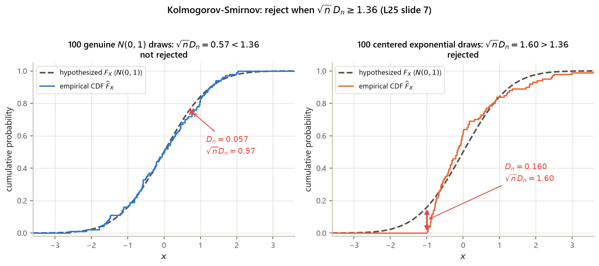
Solution
Expected counts are $50$, $30$, $20$ — all above $5$, so the approximation applies. The terms:
$$\frac{(48-50)^2}{50}=\frac{4}{50}=0.08,\qquad
\frac{(35-30)^2}{30}=\frac{25}{30}=0.8333333,\qquad
\frac{(17-20)^2}{20}=\frac{9}{20}=0.45 .$$
So $T=0.08+0.8333333+0.45=1.3633333$ (P45_T).
Degrees of freedom: $m-1=3-1=2$. The $95$th percentile of $\chi^2_2$ is $5.9914645$
(P45_CRIT). Since $1.363<5.991$, do not reject; the p-value is
$0.5057733$ (P45_PVALUE). These data are wholly consistent with the hypothesized
split.
Solution
$T$ is a sum of squares, so it measures distance from $H_0$ without regard to direction: a count that is too high and a count that is too low contribute identically. Every departure from $\theta^*$, in any coordinate and either direction, pushes $T$ up. Small $T$ therefore means "the data look like $H_0$", which is never evidence against $H_0$; there is no lower tail to reject in.
(Worth knowing: suspiciously small $T$ — say a p-value above $0.999$ — is evidence of a different problem entirely, namely fabricated or over-smoothed data. Fisher famously used exactly this argument against some of Mendel's pea counts. But that is a test of a different hypothesis, not of $H_0$.)
4.9 Which test? Putting the section together
Four machines have gone past: the Bayesian MAP test of G6 §3, the likelihood ratio test of §4.2–§4.6, the significance test of §4.7, and the goodness-of-fit tests of §4.8. Under exam conditions the hard part is almost never the arithmetic — it is deciding which of the four a sentence of prose is describing. The whole decision turns on three yes/no questions asked in a fixed order: is there a genuine prior?, then is $H_1$ a single fully specified distribution?, then does $H_0$ pin down one scalar parameter, or a whole PMF/CDF? Each "no" removes one piece of structure and one guarantee. Read the flowchart top to bottom, then drill it on the three descriptions below.
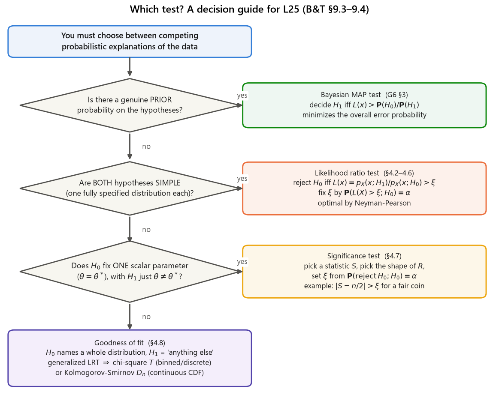
- A radar returns one voltage $X$. In the absence of a target $X\sim N(0,\sigma^2)$; a target of known reflectivity makes $X\sim N(\mu,\sigma^2)$ with $\mu,\sigma$ both known. Long-run records say a target is present on $2\%$ of sweeps, and a false alarm costs the same as a missed detection.
- Same radar, same two noise models, but no records exist and management refuses to name a target-arrival rate. You are told only "keep false alarms at one in a thousand".
- A factory claims its widget lifetimes are exponential with rate $1/100$ hours. You have $200$ measured lifetimes and want to know whether that whole distribution is right, not just its mean.
Solution
(1) The first diamond answers yes: $2\%$ is a genuine, frequency-backed prior, and
equal costs make the error criterion the plain probability of error. So this is the Bayesian MAP
test of G6 §3 — reject $H_0$ when $L(x)>p_\Theta(\theta_0)/p_\Theta(\theta_1)=0.98/0.02=49$
(P413_MAP_ODDS).
The statistic is still the likelihood ratio; what the prior supplies is the threshold, so nothing
has to be calibrated against a target $\alpha$.
(2) First diamond no (no prior), second diamond yes (both hypotheses name one complete distribution). This is the LRT of §4.2, calibrated at $\alpha=0.001$. By Example 4.1's algebra the region reduces to $X>\sigma z_{0.999}$, and Neyman–Pearson guarantees no other test with $\alpha\le 0.001$ has smaller $\beta$. You need only the $H_0$ distribution $N(0,\sigma^2)$ to set the threshold; the $H_1$ distribution is used afterwards, to report $\beta$.
(3) First diamond no, second no ($H_1$ is "not exponential(1/100)", a composite of everything else), third no as well: $H_0$ specifies an entire continuous CDF, not one scalar. That is the bottom box — goodness of fit. With continuous data prefer Kolmogorov–Smirnov: $D_n=\max_x|F_X(x)-\widehat F_X(x)|$ with $F_X(x)=1-e^{-x/100}$, rejecting when $\sqrt{200}\,D_n\ge 1.36$. Binning and running chi-square with $\text{df}=m-1$ also works but throws away shape information (§4.8, Route A).
Note the pattern: what changes down the chart is not the arithmetic but how much the problem tells you. Method choice is a bookkeeping question about the hypotheses, never about the data.
Solution
$H_1:\theta>1/2$ is composite — an uncountable family, one distribution per $\theta$ — so the second diamond answers no and she is in the significance-testing box of §4.7. That box has no $\beta$. A single number "$\beta=0.11$" cannot exist, because $\mathbf{P}(X\notin R;H_1)$ needs one distribution under $H_1$ and $H_1$ names infinitely many.
What she can legitimately report is the power function $\theta\mapsto
\mathbf{P}(\text{reject};\theta)$ evaluated at one or more specific alternatives — exactly the
$0.2339654,\,0.8801172,\,0.9999943$ table after Example 4.7 (COIN_POWER_*). At
$\theta=0.55$, for instance, $\beta=1-0.8801172=0.1198828$ (P414_BETA_AT_0p55) —
close to her $0.11$, and a perfectly
good statement once the "$\theta=0.55$" clause is attached. That clause is the whole
missing ingredient.
(Second, milder point: her one-sided $H_1$ makes a one-sided region $\{S>\xi\}$ correct, where Example 4.7's two-sided $H_1$ forced $\{|S-n/2|>\xi\}$. The shape of $R$ in Recipe step 2 is supposed to follow the direction in which $H_0$ would fail.)
Solution
You cannot form $L(x)$ at all: $H_1$ is "the die is not fair", which is a whole five-dimensional family of PMFs, so $p_X(x;H_1)$ is not a single number and the ratio has no denominator — sorry, no numerator. Neyman–Pearson's hypotheses are simple by assumption; the lemma has nothing to say here (§4.6 Interpretation).
The closest legitimate move is §4.8's generalized likelihood ratio: replace the missing $p_X(x;H_1)$ by $\max_\theta p_X(x;\theta)=p_X(x;\hat\theta)$, the ML fit. That gives $S=\sum_k N_k\log(N_k/n\theta_k^*)$, and its second-order Taylor approximation is the chi-square statistic $T$ with $\text{df}=6-1=5$ — reject iff $T>11.07$ at the $5\%$ level. It is the shape of the LRT with no optimality theorem attached, which is the price of a composite alternative.
- Write both likelihoods $p_X(x;H_0)$ and $p_X(x;H_1)$ at the observed data, as functions of $x$. For i.i.d. data, multiply the marginals.
- Form $L(x)$ and simplify. Cancel every factor common to numerator and denominator, then take logarithms. Almost always the data collapse onto one scalar statistic: $\sum_i X_i$ for a mean shift, $\sum_i X_i^2$ for a variance change, a count for Bernoulli data.
- Determine the direction. Solve $\log L(x)>\log\xi$ for that statistic, watching the sign of the coefficient — a negative coefficient flips the inequality and puts the rejection region in the left tail (§4.2 Practice 4.3, §4.4 Gotcha).
- Find the distribution of the statistic under $H_0$ — exactly if you can (normal, binomial, chi-square), by the CLT if you must.
- Solve $\mathbf{P}(\text{statistic in }R;H_0)=\alpha$ for the threshold. If the statistic is discrete, take the smallest threshold whose exact tail is $\le\alpha$, and never round a CLT answer in the direction that enlarges $R$.
- Compute $\beta$ using the distribution of the same statistic under $H_1$. Report it: a test with an uncomputed $\beta$ is half a test.
- Decide, and phrase the negative outcome as "not rejected", never "accepted".
- Setup. $H_0:X\sim p_X(x;H_0)$ versus $H_1:X\sim p_X(x;H_1)$, both simple; a test is a rejection region $R$; the semicolon means "in model $H$", never a conditioning bar.
- Errors. $\alpha(R)=\mathbf{P}(X\in R;H_0)$ (false rejection, type I, significance level); $\beta(R)=\mathbf{P}(X\notin R;H_1)$ (false acceptance, type II); power $=1-\beta$.
- LRT. $L(x)=p_X(x;H_1)/p_X(x;H_0)$; reject iff $L(x)>\xi$; choose $\xi$ from $\mathbf{P}(L(X)>\xi;H_0)=\alpha$. $\xi=1$ is the ML rule; $\xi=\mathbf{P}(H_0)/\mathbf{P}(H_1)$ is the Bayesian MAP rule of G6 §3.
- Normal mean ($N(0,1)$ vs $N(1,1)$, $n$ i.i.d.): $L=\exp\{\sum_i x_i-n/2\}$, reject iff $\sum_i x_i>\xi'=\sqrt n\,z_{1-\alpha}$, and $\beta=\Phi(z_{1-\alpha}-\sqrt n)$. At $\alpha=0.05$: $\beta=0.7405,\ 0.3612,\ 0.0646,\ 0.0004$ for $n=1,4,10,25$.
- Normal variance ($N(0,1)$ vs $N(0,4)$): $L=2^{-n}\exp\{\tfrac38\sum_i x_i^2\}$, reject iff $\sum_i x_i^2>\xi'=$ the $(1-\alpha)$ quantile of $\chi^2_n$; $\beta=\mathbf{P}(\chi^2_n\le\xi'/4)$. At $n=10$, $\alpha=0.05$: $\xi'=18.3070$, $\beta=0.0824$, and $\xi=0.9358<1$.
- Tradeoff. $\xi\uparrow$ shrinks $R$: $\alpha\downarrow$, $\beta\uparrow$. If $L(X)$ is discrete, only finitely many $\alpha$ exist — take the largest attainable $\alpha\le$ target.
- Neyman–Pearson. Among all tests with false rejection probability $\le\alpha$, the LRT minimizes $\beta$. Proof: fabricate the prior with odds $\xi$, apply MAP optimality, rearrange.
- Composite $H_1$ (significance testing). Pick a statistic $S$, pick the shape of $R$, pick $\alpha$, solve for $\xi$ using the distribution of $S$ under $H_0$ only. Coin example: $n=1000$, $\xi=1.96\sqrt{250}=30.99\approx31$; $|472-500|=28\le31$ so $H_0$ is not rejected, p-value $0.0819$.
- Goodness of fit. Generalized LRT $\Rightarrow$ $T=\sum_k (N_k-n\theta^*_k)^2/(n\theta^*_k)\approx 2S\sim\chi^2_{m-1}$. Die: $T=6.86$ against $\xi=11.07$ at $\alpha=0.05$ — not rejected (p-value $0.2313$) — but rejected at $\alpha=0.25$, where $\xi=6.63$.
- Continuous fit. Bin and use $T$, or use Kolmogorov–Smirnov $D_n=\max_x|F_X(x)-\widehat F_X(x)|$ with $\mathbf{P}(\sqrt n D_n\ge 1.36)\approx0.05$. Normal data: $\sqrt n D_n=0.57$, not rejected; centered exponential data: $1.60$, rejected. Valid only if $F_X$ is fully specified in advance.
§5 Synthesis, and the course in one figure
Sources: L23 slides 2–7 · L24 slides 2–8 · L25 slides 2–3, 5, 8 (headers, for the master tables) · rec23 P3 · B&T §9.1–9.5, with §9.5 "Summary and Discussion" as the model for this page. Cross-note sources: the six prior cheatsheets G1 §5, G2 §5, G3 §5, G4 §5, G5 §5, G6 §5. Every number on this page is recomputed in computes/g7_s5.py (scipy.stats for the normal and binomial quantities, a four-hundred-thousand-replication Monte Carlo for the confidence-interval coverage, a two-million-replication Monte Carlo for the ML variance bias) and the four figures by computes/g7_s5_figs.py.
G7 asked one question in four ways. §1 asked how to judge a rule that turns data into a number, and answered with bias, variance and consistency; §2 asked how to build such a rule and answered with maximum likelihood; §3 asked the same question when the unknown is a straight line rather than a point, and answered with least squares; §4 asked how to choose between two stories about the world and answered with the likelihood ratio. This section puts all four on one page, sets them beside their Bayesian counterparts from G6, lists the five errors that cost the most marks and the most money, and then — because this is the last section of the last note — draws the whole of 6.041 as a single map.
5.1 The classical-inference cheatsheet
Fix the notation once; all six rows share it. $\theta$ is the unknown parameter: a constant, not a random variable, and this single decision is what separates every row below from every row of G6 §5.2. Because $\theta$ is not random it has no distribution, so the model is written $p_X(x;\theta)$ (discrete data) or $f_X(x;\theta)$ (continuous data) — one distribution per candidate value of $\theta$, with a semicolon rather than a conditioning bar (L23 slide 2, in bold on the slide: "These are NOT conditional probabilities"). $X_1,\dots,X_n$ are the observations, i.i.d. under each fixed $\theta$; $x_1,\dots,x_n$ are the numbers actually seen. $\hat\Theta_n=g(X_1,\dots,X_n)$ is an estimator — a random variable, because it is a function of the data — and $\hat\theta_n=g(x_1,\dots,x_n)$ is the estimate, a number. $\mu$ and $\sigma^2$ denote the mean and variance of a single $X_i$; $\Phi$ is the standard normal CDF, and $z$ is the number with $\Phi(z)=1-\alpha/2$. Finally $\alpha$ is used twice in classical statistics, with different meanings, and you must keep them apart: $1-\alpha$ is a confidence level in row 3, while $\alpha$ alone is a false-rejection probability in row 6.
| Object | Formula | What it needs | What it guarantees | Source |
|---|---|---|---|---|
| Estimator quality | bias $=\mathbb{E}[\hat\Theta_n]-\theta$; $\mathrm{MSE}=\mathbb{E}\big[(\hat\Theta_n-\theta)^2\big]=\operatorname{var}(\hat\Theta_n)+\big(\text{bias}\big)^2$; consistent iff $\hat\Theta_n\to\theta$ in probability | The sampling distribution of $\hat\Theta_n$ under each $\theta$. | Nothing by itself — these are criteria. Each must hold for all $\theta$ (L23 slide 4, which prints it with three exclamation marks). | L23 slide 4; §1; B&T §9.1 |
| Sample mean | $\hat\Theta_n=\dfrac{X_1+\cdots+X_n}{n}$, $\mathbb{E}[\hat\Theta_n]=\theta$, $\operatorname{var}(\hat\Theta_n)=\sigma^2/n=\mathrm{MSE}$ | I.i.d. data with $\theta=\mathbb{E}[X_i]$ and finite $\sigma^2$. | Unbiased for every $n$; consistent by the weak law (G6 §1). Often also the ML estimate — exactly so for $X_i\sim N(\theta,\sigma^2)$. | L23 slide 5, L24 slide 2; §1; B&T §9.1 |
| Confidence interval | $\big[\hat\Theta_n-\tfrac{z\hat\sigma}{\sqrt n},\ \hat\Theta_n+\tfrac{z\hat\sigma}{\sqrt n}\big]$ with $\Phi(z)=1-\alpha/2$: $z=1.644854$ ($90\%$), $1.959964$ ($95\%$), $2.575829$ ($99\%$) | The CLT (so $n$ large), plus $\sigma$ — bounded ($\sigma\le 1/2$ for Bernoulli), estimated ad hoc ($\hat\sigma=\sqrt{\hat\Theta_n(1-\hat\Theta_n)}$), or estimated generically by $\hat S_n^2=\frac{1}{n-1}\sum_i(X_i-\hat\Theta_n)^2$. | $\mathbf{P}(\hat\Theta^-\le\theta\le\hat\Theta^+)\ge 1-\alpha$ for all $\theta$ — a statement about the interval, which is random, not about $\theta$, which is not. | L23 slides 6–7, L24 slide 2; §1, rec23 P3; B&T §9.1 |
| Maximum likelihood | $\hat\theta_{\text{ML}}=\arg\max_\theta p_X(x;\theta)$; in practice maximize $\log p_X(x;\theta)=\sum_{i=1}^n\log p_{X_i}(x_i;\theta)$ under independence | The model family, and one maximization. No prior, no integral, no normalizing constant. | "Makes the data most likely" (L24 slide 2). Consistent and asymptotically normal under regularity, but not generally unbiased at finite $n$. | L23 slide 3, L24 slide 2; §2, rec23 P1–P2, rec24; B&T §9.1 |
| Linear regression | $\hat\theta_1=\dfrac{\sum_{i=1}^n(x_i-\bar x)(y_i-\bar y)}{\sum_{i=1}^n(x_i-\bar x)^2}$, $\hat\theta_0=\bar y-\hat\theta_1\bar x$, minimizing $\sum_i(y_i-\theta_0-\theta_1x_i)^2$ | Data pairs $(x_i,y_i)$ with $\sum_i(x_i-\bar x)^2>0$. Closed form — no iteration. | The least-squares fit; identical to ML when $Y_i=\theta_0+\theta_1x_i+W_i$ with $W_i\sim N(0,\sigma^2)$ i.i.d. (L24 slide 4). The slope formula is the sample version of $\operatorname{cov}(X,Y)/\operatorname{var}(X)$ — linear LMS with sample moments substituted. | L24 slides 3–4; §3; B&T §9.2 |
| Likelihood ratio test | Reject $H_0$ iff $\dfrac{p_X(x;H_1)}{p_X(x;H_0)}>\xi$; $\alpha(R)=\mathbf{P}(X\in R;H_0)$, $\beta(R)=\mathbf{P}(X\notin R;H_1)$ | Both hypotheses fully specified (simple), and the null distribution of the test statistic, to set $\xi$. | A rejection region with the false-alarm rate $\alpha$ you chose. $\beta$ is then determined — you do not get to choose it too. | L24 slides 7–8, L25 slide 2; §4; B&T §9.3 |
Read the table down the "what it guarantees" column and the classical character of the subject appears: every guarantee is a statement about a procedure repeated over hypothetical data sets, and every one carries the clause "for all $\theta$". That clause is the price of having no prior. Without a distribution on $\theta$ there is no way to average over it, so a claim can only be defended by holding for every value it might take.
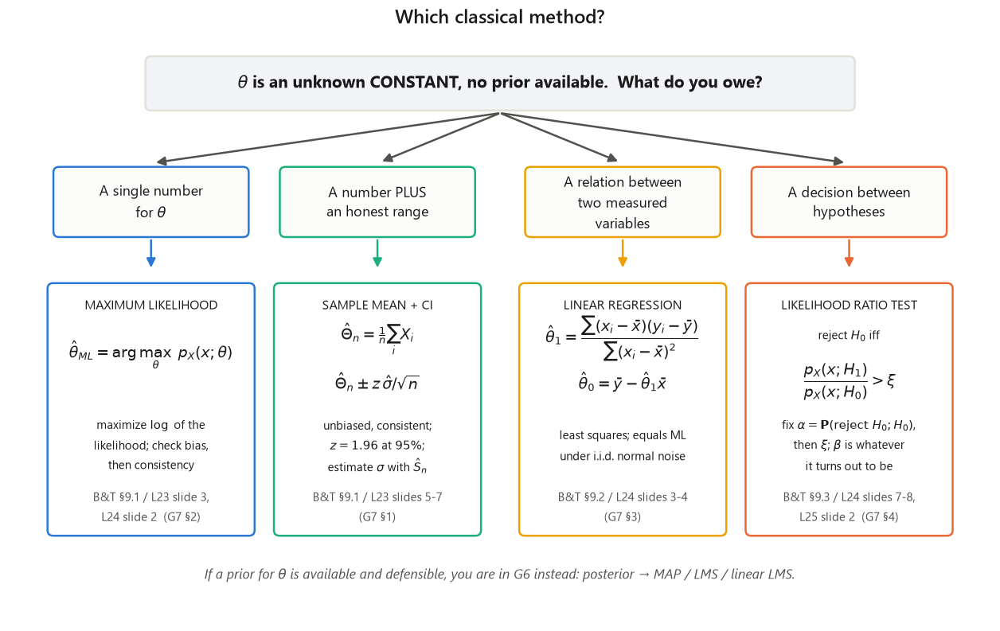
- Write the model with a semicolon. Before anything else, put down $p_X(x;\theta)$ or $f_X(x;\theta)$ and say what $\theta$ ranges over. If you find yourself writing $f_\Theta(\theta)$ you have silently gone Bayesian — decide deliberately, not by accident (Figure 5.1, footer).
- Name the deliverable. A point? A point with a range? A line? A decision? This selects the column of Figure 5.1 and nothing else does.
- Write the likelihood as a product. Under independence $p_X(x;\theta)=\prod_{i=1}^n p_{X_i}(x_i;\theta)$; take logs immediately, so the product becomes a sum and the derivative is tractable.
- Check the estimator, do not assume it. Compute $\mathbb{E}[\hat\Theta_n]$ (bias) and $\operatorname{var}(\hat\Theta_n)$ (spread) as functions of $\theta$. Consistency usually follows from the weak law applied to a sample average inside the estimator.
- Attach an interval, always. A point estimate with no spread hides whether the data did any work. Use $\hat\Theta_n\pm z\hat\sigma/\sqrt n$ and say which of the three $\sigma$-handling options you used (L23 slide 7).
- For a test, fix $\alpha$ first, then find $\xi$, then report $\beta$. The order is not negotiable: $\xi$ is chosen to meet the false-alarm budget, and the missed-detection rate is whatever that choice implies (L25 slide 2).
- State the assumption you are least sure of. Independence, normality, large $n$, "the model family contains the truth". Every guarantee above is conditional on these, and the guarantee is worth exactly what the assumption is worth.
5.2 Bayesian and classical: the master comparison
G6 and G7 compute with the same likelihoods and frequently produce the same arithmetic, yet they answer different questions. The difference is one modeling decision — whether $\theta$ gets a distribution — and everything else follows from it.
| Question | Bayesian (G6 §3–§4; B&T ch. 8) | Classical (G7; B&T ch. 9) |
|---|---|---|
| What is the unknown? | A random variable $\Theta$ with a prior $p_\Theta$ or $f_\Theta$ that you supply. | A constant $\theta$. It has no distribution, so no probability statement about it is meaningful. |
| What is random? | $\Theta$. The data are fixed at what you saw and are conditioned on. | The data, and therefore every function of them — including $\hat\Theta_n$ and the interval it generates. |
| Notation for the model | $p_{X\mid\Theta}(x\mid\theta)$ — a conditional PMF/PDF. | $p_X(x;\theta)$ — a family of PMFs/PDFs indexed by $\theta$ (L23 slide 2). |
| What is a "good answer"? | The posterior $f_{\Theta\mid X}(\theta\mid x)$; anything else is a summary of it. Optimality means minimizing an average over the prior. | An estimator or a test with good sampling properties — unbiased, low variance, consistent, correct size $\alpha$ — uniformly in $\theta$. |
| Point estimate | MAP $\arg\max_\theta f_\Theta(\theta)f_{X\mid\Theta}(x\mid\theta)$; LMS $\mathbb{E}[\Theta\mid X]$; linear LMS. | ML $\arg\max_\theta p_X(x;\theta)$; sample mean; least squares. |
| Interval | Credible interval: $\mathbf{P}(\Theta\in[a,b]\mid X=x)=0.95$, computed from the posterior for the data you actually saw. | Confidence interval: $\mathbf{P}(\hat\Theta^-\le\theta\le\hat\Theta^+)\ge0.95$ for all $\theta$, computed over hypothetical repeat experiments. |
| Choosing between two hypotheses | MAP rule: pick $H_1$ iff $\mathbf{P}(H_1\mid X=x)>\mathbf{P}(H_0\mid X=x)$, i.e. iff $\frac{\mathbf{P}(X=x\mid H_1)}{\mathbf{P}(X=x\mid H_0)}>\frac{\mathbf{P}(H_0)}{\mathbf{P}(H_1)}$ (L24 slide 8). | LRT: pick $H_1$ iff $\frac{p_X(x;H_1)}{p_X(x;H_0)}>\xi$, with $\xi$ set by the false-alarm budget $\alpha$, not by prior odds (L24 slide 8). |
| Where the difficulty lies | Justifying the prior, and doing the normalizing integral. | Justifying "for all $\theta$", and interpreting the answer without smuggling a prior back in. |
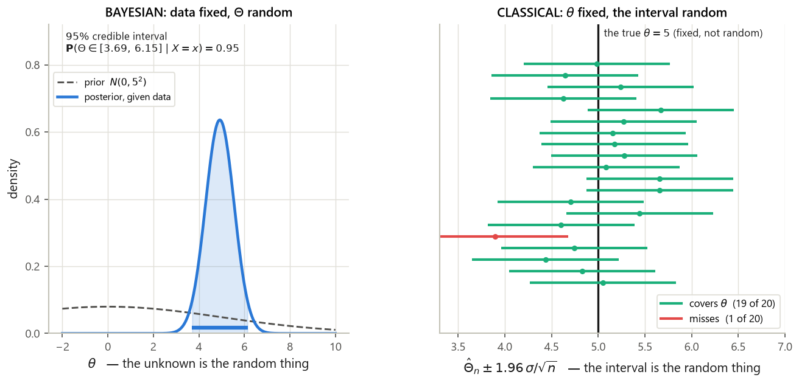
computes/g7_s5.py (L21 slides 3–4, L23 slide 6; B&T §8.1, §9.1).Line up the two columns and three matching pairs appear: not coincidences, but the same computation with the prior switched off. Each pair is worth working through numerically once, because the numbers make the relationship exact rather than suggestive.
Solution
The classical side. The number of heads $K$ is binomial, so the likelihood is $$p_K(k;\theta)=\binom{n}{k}\theta^k(1-\theta)^{n-k},\qquad 0\le\theta\le1 .$$ The binomial coefficient does not involve $\theta$, so it cannot affect the location of the maximum. Take logs — legitimate because $\log$ is strictly increasing, so it preserves the argmax: $$\ell(\theta)=\log\binom{n}{k}+k\log\theta+(n-k)\log(1-\theta).$$ Differentiate and set to zero: $$\frac{d\ell}{d\theta}=\frac{k}{\theta}-\frac{n-k}{1-\theta}=0 \ \Longrightarrow\ k(1-\theta)=(n-k)\theta \ \Longrightarrow\ k=n\theta \ \Longrightarrow\ \hat\theta_{\text{ML}}=\frac{k}{n}.$$ The second derivative $-k/\theta^2-(n-k)/(1-\theta)^2$ is negative wherever $0<\theta<1$, so this stationary point is the maximum, not a minimum. With $k=3$, $n=10$: $\hat\theta_{\text{ML}}=3/10=0.3$.
The Bayesian side with a uniform prior. Take $f_\Theta(\theta)=1$ on $[0,1]$, the Beta$(1,1)$ density. The posterior is proportional to prior $\times$ likelihood, and MAP maximizes that product: $$\hat\theta_{\text{MAP}}=\arg\max_\theta\ 1\cdot\binom{n}{k}\theta^k(1-\theta)^{n-k} =\arg\max_\theta\ \theta^k(1-\theta)^{n-k}=\frac{k}{n}=0.3 .$$ Identical, and identical for a reason: a constant factor cannot move an argmax. Maximum likelihood is MAP with the prior deleted (or, equivalently, with a flat one).
A non-uniform prior, and how fast it dies. Take the Beta$(2,2)$ prior $f_\Theta(\theta)\propto\theta(1-\theta)$, a mild pull toward $\theta=1/2$. Multiplying by the likelihood gives a Beta$(2+k,\,2+n-k)$ posterior, whose mode is $$\hat\theta_{\text{MAP}}=\frac{(2+k)-1}{(2+k)+(2+n-k)-2}=\frac{k+1}{n+2},$$ the "add one success and one failure" rule. Evaluating at a fixed ratio $k/n=0.3$:
- $n=10$, $k=3$: $\hat\theta_{\text{MAP}}=4/12=0.333333$, versus ML $0.3$ — gap $0.033333$.
- $n=100$, $k=30$: $31/102=0.303922$ — gap $0.003922$.
- $n=1000$, $k=300$: $301/1002=0.300399$ — gap $0.000399$.
The gap falls by a factor of about ten each time $n$ rises by a factor of ten, i.e. like $1/n$: the prior contributes a fixed two pseudo-observations while the data contribute $n$ real ones. Reading: the Bayesian/classical dispute is loud when data are scarce and nearly empty when data are plentiful. It is at $n=10$, not $n=1000$, that you must decide whether you believe your prior.
Solution
The posterior. For a normal prior and normal observations the posterior is normal with precision (reciprocal variance) equal to the sum of precisions, and mean equal to the precision-weighted average (G6 §4; L22 slide 8): $$\frac{1}{\sigma_{\text{post}}^2}=\frac{1}{\sigma_0^2}+\frac{n}{\sigma^2}, \qquad \mu_{\text{post}}=\frac{\mu_0/\sigma_0^2+n\bar x/\sigma^2}{1/\sigma_0^2+n/\sigma^2} = w\mu_0+(1-w)\bar x,\quad w=\frac{1/\sigma_0^2}{1/\sigma_0^2+n/\sigma^2}.$$ Here $n=10$, $\sigma^2=4$, so the data precision is $n/\sigma^2=10/4=2.5$, and $\bar x=5$.
Sweeping the prior width.
- $\sigma_0=1$: prior precision $1$, so $w=1/(1+2.5)=0.285714$ and $\mu_{\text{post}}=0.285714(0)+0.714286(5)=3.571429$, with $\sigma_{\text{post}}=\sqrt{1/3.5}=0.534522$. The prior has dragged the answer $28.6\%$ of the way back to $0$.
- $\sigma_0=5$: prior precision $0.04$, $w=0.04/2.54=0.015748$, so $\mu_{\text{post}}=4.92126$ and $\sigma_{\text{post}}=\sqrt{1/2.54}=0.627456$.
- $\sigma_0=20$: prior precision $0.0025$, $\mu_{\text{post}}=4.995005$, $\sigma_{\text{post}}=0.63214$.
- $\sigma_0\to\infty$ (a "flat" prior): prior precision $\to0$, $w\to0$, so $\mu_{\text{post}}\to\bar x=5$ exactly and $\sigma_{\text{post}}\to\sqrt{\sigma^2/n} =2/\sqrt{10}=0.632456$.
Matching pair 2. In the limit the LMS estimate $\mathbb{E}[\Theta\mid X]$ is the sample mean, and its posterior standard deviation is exactly the classical standard error $\sigma/\sqrt n=0.632456$. The two frameworks have converged on the same number by different routes: the Bayesian by averaging over $\Theta$, the classicist by computing $\operatorname{var}(\hat\Theta_n)=\sigma^2/n$ over repeated data.
Matching pair 3. The classical $95\%$ confidence interval is $$\bar x\pm 1.959964\cdot\frac{\sigma}{\sqrt n}=5\pm1.959964(0.632456)=5\pm1.23959 =[3.76041,\ 6.23959],$$ and the $95\%$ credible interval under the $\sigma_0=5$ prior is $$4.92126\pm1.959964(0.627456)=[3.691469,\ 6.151051].$$ They differ by about $0.07$ at the low end and $0.09$ at the high end — visually the same interval, logically different objects. The classical one says: the procedure that produced me covers the true $\theta$ in $95\%$ of repetitions. The Bayesian one says: given these data and my prior, $\Theta$ lies in me with probability $0.95$. Only the second is a probability statement about $\theta$, and it is one only because a prior was supplied. Figure 5.2 draws the distinction: on the left the probability is spread along the $\theta$ axis; on the right $\theta$ is a single fixed vertical line and the probability is spread across the twenty intervals.
5.3 The five gotchas that cost the most
Shrinking the rejection region lowers $\alpha=\mathbf{P}(\text{reject }H_0;H_0)$ and simultaneously raises $\beta=\mathbf{P}(\text{accept }H_0;H_1)$; the threshold $\xi$ slides along a single curve and you may pick a point on it, not leave it. Take $H_0: X_i\sim N(0,1)$ against $H_1: X_i\sim N(1,1)$ with $n=10$ i.i.d. observations; the LRT reduces (L25 slide 3) to rejecting when $\sum_i X_i>\xi'$, and under $H_0$ the sum is $N(0,10)$, so $\xi'=z_{1-\alpha}\sqrt{10}$:
| $\alpha$ | threshold $\xi'$ | $\beta$ |
|---|---|---|
| $0.20$ | $2.6614$ | $0.010153$ |
| $0.10$ | $4.0526$ | $0.030005$ |
| $0.05$ | $5.2015$ | $0.064580$ |
| $0.01$ | $7.3566$ | $0.201597$ |
| $0.001$ | $9.7722$ | $0.471283$ |
Going from $\alpha=0.05$ to $\alpha=0.001$ — a fifty-fold tightening of the false-alarm rate — multiplies the missed-detection rate by $0.471283/0.064580=7.3$, from one miss in fifteen to nearly one in two. The only way to improve both at once is to buy more data: holding $\alpha=0.05$ and raising $n$ from $10$ to $40$ to $160$ drives $\beta$ from $6.458\times10^{-2}$ to $1.436\times10^{-6}$ to $1.823\times10^{-28}$. One last piece of vocabulary: "$H_0$ is not rejected at the $5\%$ level" means the data were not extreme enough, not that $H_0$ is true — in the L25 coin example, $S=472$ heads in $n=1000$ tosses gives a deviation $|472-500|=28$ against the threshold $1.959964\sqrt{1000(0.25)}=30.99\approx31$, so $H_0$ survives, even though the exact two-sided binomial probability of a deviation this large or larger is $0.081939$ — uncomfortably close to the line (L25 slide 5; worked in full in §4).
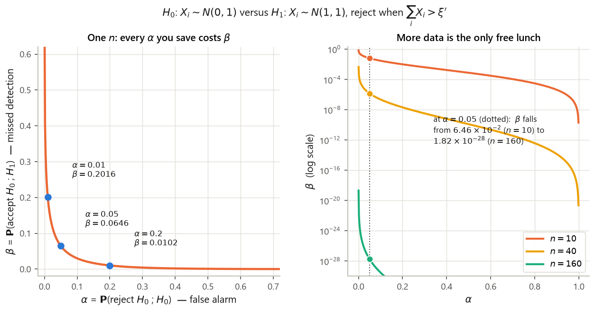
computes/g7_s5.py.5.4 The whole course on one page
Seven notes, twenty-five lectures, and a single trajectory: outcomes $\to$ numbers $\to$ numbers that evolve $\to$ numbers that tell you about the model.
- Phase 1 — models (G1). A sample space, three axioms, and two operations: additivity over disjoint pieces, and renormalization inside a conditioning event. Everything downstream is these two applied to a particular decomposition. Total probability and Bayes' rule appear here, and never leave (G1 §5).
- Phase 2 — random variables (G2, G3). Replace outcomes by numbers, $X:\Omega\to\mathbb{R}$. Discrete first: PMFs, the four families, expectation, linearity, variance, and the fact that will matter most in the end, $\operatorname{var}(M_n)=\sigma^2/n$ (G2 §5). Then continuous: $p_X\to f_X$, $\sum_x\to\int dx$, and the identity table survives unchanged (G3 §5) — plus normal distributions, derived distributions, convolution, covariance and the correlation coefficient.
- Phase 3 — processes in time (G4, G5). First conditioning becomes an object: $\mathbb{E}[X\mid Y]$ is a random variable, iterated expectations and the variance decomposition follow, and random sums are computed with them (G4 §5). Then two arrival processes, Bernoulli and Poisson, are one process on two clocks (G4 §2–§4). Finally Markov chains keep dependence but restrict it to "the present summarizes the past", and three questions — $n$-step, steady state, absorption — answer everything (G5 §5).
- Phase 4 — what the data says (G6, G7). Averages concentrate: Markov, Chebyshev, the weak law, the CLT (G6 §5). Then inference, twice: with a prior (posterior, MAP, LMS, linear LMS) and without one (bias, consistency, confidence intervals, maximum likelihood, regression, the likelihood ratio test).
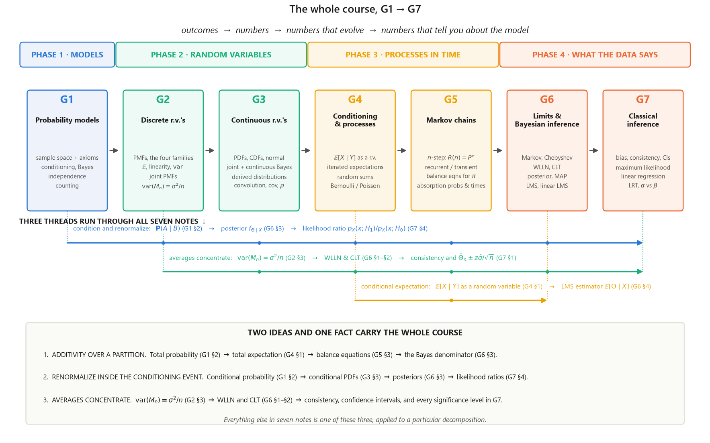
The three threads in Figure 5.4 are worth stating in words, because each is the same idea wearing four costumes.
- Condition and renormalize. $\mathbf{P}(A\mid B)=\mathbf{P}(A\cap B)/\mathbf{P}(B)$ (G1 §2) becomes the conditional PDF $f_{X\mid Y}$ (G3 §2), becomes the posterior $f_{\Theta\mid X}(\theta\mid x)=f_\Theta(\theta)f_{X\mid\Theta}(x\mid\theta)/f_X(x)$ (G6 §3), becomes — with the prior and the denominator both deleted, because neither survives when $\theta$ is a constant — the likelihood ratio $p_X(x;H_1)/p_X(x;H_0)$ (G7 §4). The Bayes denominator and the LRT threshold play the same structural role: they are the thing that does not depend on the hypothesis.
- Averages concentrate. $\operatorname{var}(M_n)=\sigma^2/n$ (G2 §3) is a two-line consequence of independence; feed it to Chebyshev and you get the weak law, add the CLT and you get a number instead of a bound (G6 §1–§2); and those two results are precisely what makes $\hat\Theta_n$ consistent and what puts the $1.96\hat\sigma/\sqrt n$ in every confidence interval and every significance threshold in G7. One variance formula, three chapters.
- Conditional expectation as an object. $\mathbb{E}[X\mid Y]$ as a random variable (G4 §1) is what makes $\mathbb{E}[\Theta\mid X]$ an estimator rather than a number (G6 §4) — and the least-squares slope of G7 §3 is its linear version with sample moments substituted for population ones.
5.5 Where to go next
6.041 stops at the point where each of its four phases turns into a subject of its own, and B&T §9.4–9.5 and L25 slide 8 ("What else is there?") point at all four doors. Stochastic processes continues Phase 3: continuous-time Markov chains and queueing (the Poisson process of G4 §3–§4 with servers attached), martingales and the optional stopping theorem, Brownian motion as the continuous-time limit of the random walks of G5, and renewal theory as the mature version of the random-incidence paradox of G4 §4.4–§4.5. Statistics continues Phase 4 and fills in what this course could only sketch: composite hypotheses and the generalized likelihood ratio, the chi-square and Kolmogorov–Smirnov goodness-of-fit tests that L25 slides 6–7 introduce without derivation (B&T §9.4), the Cramér–Rao bound that says how small an unbiased estimator's variance can possibly be, multiple regression and model selection, and the resampling methods that replace the CLT approximation with brute-force simulation. Information theory reinterprets the likelihood ratio: $\log\frac{p_X(x;H_1)}{p_X(x;H_0)}$ accumulated over i.i.d. data grows at a rate equal to a Kullback–Leibler divergence, which is why $\beta$ in Figure 5.3 falls geometrically in $n$ — and the same quantity governs how many bits a source needs and how fast a channel can carry them. Beyond those three, the modern descendants are visible in the same slide: signal processing (efficient and recursive estimation — the Kalman filter is linear LMS, G6 §4, run once per time step), machine learning (regression with many variables plus model-complexity selection), and causal inference (Gotcha 4, taken seriously). All of them assume, without re-teaching, exactly what is in Figure 5.4.
- Classical framing: $\theta$ is an unknown constant; the model is $p_X(x;\theta)$, a family, not a conditional (L23 slide 2; B&T §9.1).
- Estimator properties must hold for all $\theta$: unbiased $\mathbb{E}[\hat\Theta_n]=\theta$; consistent $\hat\Theta_n\to\theta$ in probability; $\mathrm{MSE}=\operatorname{var}(\hat\Theta_n)+\text{bias}^2$.
- Sample mean: unbiased, $\operatorname{var}=\sigma^2/n$, consistent by the WLLN, and the ML estimate when $X_i\sim N(\theta,\sigma^2)$.
- CI: $\hat\Theta_n\pm z\hat\sigma/\sqrt n$ with $z=1.644854/1.959964/2.575829$ at $90/95/99\%$; handle $\sigma$ by bound, ad hoc estimate, or $\hat S_n^2$ (L23 slide 7).
- ML: maximize $\log p_X(x;\theta)=\sum_i\log p_{X_i}(x_i;\theta)$; it is MAP with the prior deleted — uniform prior gives $\hat\theta_{\text{MAP}}=\hat\theta_{\text{ML}}=k/n$ exactly (Example 5.1).
- Regression: $\hat\theta_1=\sum_i(x_i-\bar x)(y_i-\bar y)/\sum_i(x_i-\bar x)^2$, $\hat\theta_0=\bar y-\hat\theta_1\bar x$; equals ML under i.i.d. normal noise (L24 slide 4).
- LRT: reject $H_0$ iff $p_X(x;H_1)/p_X(x;H_0)>\xi$; fix $\alpha$, solve for $\xi$, then read off $\beta$ (L24 slides 7–8, L25 slide 2).
- Matching pairs: MAP $\leftrightarrow$ ML; LMS $\mathbb{E}[\Theta\mid X]$ $\leftrightarrow$ sample mean ($5.0$ in the flat-prior limit, posterior sd $0.632456=\sigma/\sqrt n$); credible interval $[3.691469,6.151051]$ $\leftrightarrow$ CI $[3.76041,6.23959]$ (Example 5.2).
- Gotcha 1: a CI is a claim about the procedure — simulated coverage $0.950283$ over $400\,000$ repetitions, nineteen of twenty in Figure 5.2.
- Gotcha 2: the likelihood is not a density in $\theta$ — $\int_0^\infty\theta e^{-2\theta}d\theta=0.25$, not $1$. Gotcha 3: $\mathbb{E}[\bar S_n^2]=\frac{n-1}{n}\sigma^2$ ($0.8$ at $n=5$; simulated $0.79961$).
- Gotcha 4: a pure confounder gives slope $0.5$ and $\rho=0.5$ with zero causal effect; under intervention the slope is $-0.001634\approx0$. Gotcha 5: $\alpha=0.05\to0.001$ raises $\beta$ from $0.064580$ to $0.471283$; only more data moves the curve.
- The arc: outcomes $\to$ numbers $\to$ numbers that evolve $\to$ numbers that tell you about the model, held together by additivity over a partition, renormalization inside a conditioning event, and $\operatorname{var}(M_n)=\sigma^2/n$ (Figure 5.4).